| 青春ブタ野郎はバニーガール先輩の夢を見ない<青春ブタ野郎はバニーガール先輩の夢を見ない> (電撃文庫) | |
| 鴨志田 一 | |
| (2014) | |
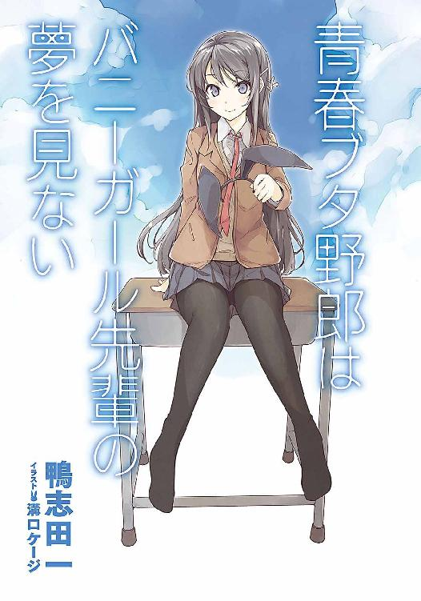
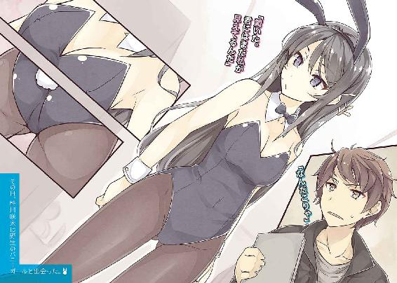
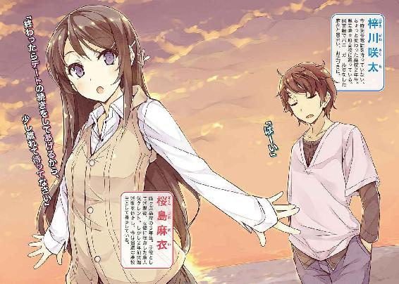
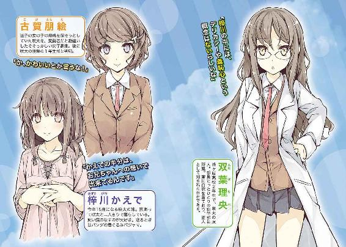
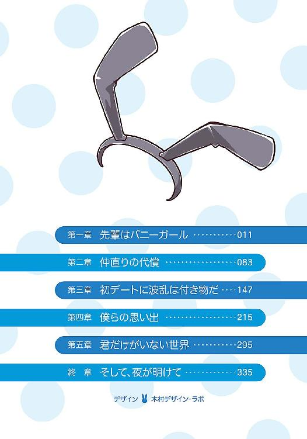
本書（電子版）に掲載されているコンテンツ（ソフトウェア／プログラム／データ／情報を含む）の著作権およびその他の権利は、すべて株式会社ＫＡＤＯＫＡＷＡおよび正当な権利を有する第三者に帰属しています。
法律の定めがある場合または権利者の明示的な承諾がある場合を除き、これらのコンテンツを複製・転載、改変・編集、翻案・翻訳、放送・出版、公衆送信（送信可能化を含む）・再配信、販売・頒布、貸与等に使用することはできません。
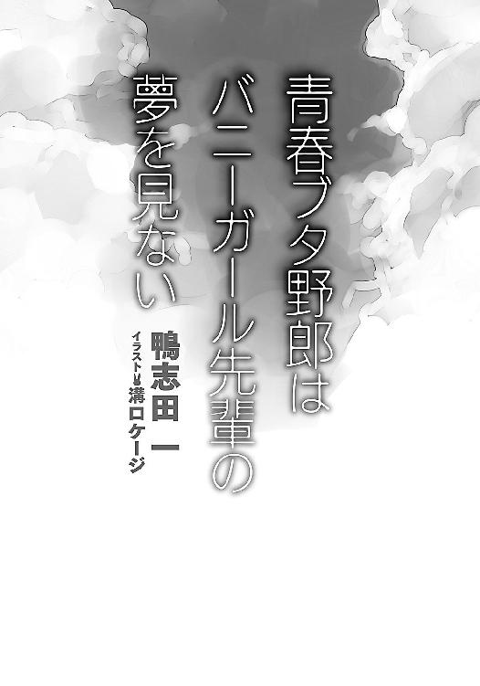
──ねえ、キスしよっか
そう言って僕をからかってきた彼女は、しばらくして僕の前から消えてしまった。
つまるところ、これは僕と彼女と彼女たちの恋愛にまつわるよくある話......ということになるのだろう。恐らくは。
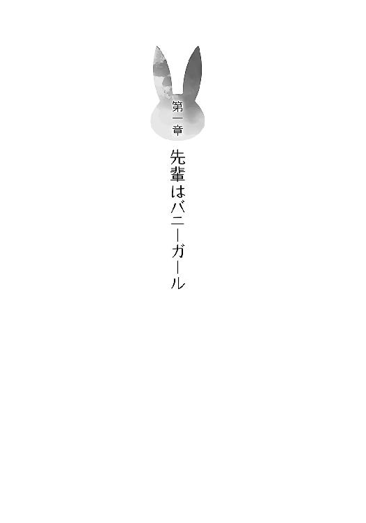
１
その日、梓川咲太は野生のバニーガールと出会った。
ゴールデンウィークの最終日。
住んでいるマンションから自転車を飛ばすこと約二十分。見えてきたのは、小田急江ノ島線、相鉄いずみ野線、横浜市営地下鉄の三線が交差する湘南台駅付近の街並み。郊外らしく背の高い建物があまりない落ち着いた雰囲気のベッドタウン。
駅を左に捉えつつ、咲太は信号を右折した。そこから一分足らずで、目的地の図書館にたどり着く。
半分ほど埋まっていた駐輪場に自転車を止めてから、咲太は館内に足を踏み入れた。
何度通っても図書館特有の静けさには、なかなか体が馴染まない。わずかに体が緊張する。
この辺では一番大きい図書館だけに、利用者の数は多い。入ってすぐのところにある雑誌、新聞が置かれたコーナーには、よく見かけるおじさんが今日もスポーツ新聞を難しい顔で読んでいた。ひいきの球団が昨日は負けたのだろうか。
貸し出しカウンターの前まで来ると、奥に並んだ勉強用の机の大半が埋まっているのが目に留まる。高校生に大学生、ノートパソコンを広げた社会人の姿も目立った。
それらを遠目に確認しつつ、咲太は現代小説のハードカバーが並んだ本棚の前に移動した。少し見下ろすような形で、あいうえお順に整頓された本の背表紙を順に目で追っていく。探しているのは『ゆ』の列。背の低い本棚は、身長１７２センチの咲太の腰くらいまでしかない。
妹に頼まれた本はすぐに見つかった。作者は『由比ヶ浜かんな』。タイトルは『毒リンゴをくれた王子様』。発売されたのは確か四、五年前だったはずだ。妹は同じ作者の前作がお気に召したようで、全作品を追いかけることに決めたらしい。
丁度よく汚れてくたびれた本を、咲太は背の低い本棚から抜き取った。
貸し出しカウンターに持っていこうと顔を上げる。『それ』が視界に収まったのは、まさにその瞬間だった。
本棚を挟んだ正面に、バニーガールが立っている。
「......」
瞬きを数回。幻かと疑ったがどうやら違うらしい。輪郭も存在もはっきりしている。
足元には艶のある黒のハイヒール。すらりと伸びた両足を包んでいるのは、肌の色が透けて見える黒のストッキング。同じく黒のレオタードは、細身ながらメリハリのある体のラインを際立たせていて、胸元には控えめながらしっかりと谷間を作っていた。
手首にはアクセントとなっている白のカフス。首にはやっぱり黒の蝶ネクタイ。
ヒールの分を差し引いた身長は約１６５センチ。凜とした顔立ちには、どこか退屈そうな表情が浮かんでいて、大人っぽい気だるさと色気を漂わせている。
最初は、何かの撮影だろうかと咲太は疑った。けれど、周囲を見回しても、ＴＶスタッフらしき大人たちの姿はない。彼女は完全にひとり。単独にしてノラ。驚いたことに、野生のバニーガールだった。
当然、昼下がりの図書館の中で、彼女の存在は浮きまくっていた。場違いというか......そもそも、バニーガールが生息する場所などラスベガスのカジノか、ちょっといかがわしいお店くらいしか咲太には思いつかないのだが、とにかく場違いだった。
ただ、咲太が本当の意味で驚きを感じた理由は、別のところにある。
これだけ派手で目立つ格好をしているのに、誰も彼女を見ていなかったのだ。
「なんだこりゃ」
思わず、声がもれる。近くにいた司書さんが「お静かに」という意図の視線を投げかけてくる。それに軽く会釈を返しながら、「いやいや、もっと他に気になる人がいるだろ」と咲太は思っていた。
けれど、だからこそ、奇妙な確信を咲太は得ることができた。
誰もバニーガールを気にしていない。気にも留めてないどころの騒ぎではなくて、気づいてすらいない様子だった。
普通、刺激的なウサギさんが側にいれば、難しい顔で六法全書と格闘している学生さんだって顔を上げる。新聞を読んでいるおじさんだって、新聞を読むふりをして、ちらりと盗み見る。司書さんだって、「そのお召し物では......」と丁寧に注意をしてしかるべき状況のはずだ。
おかしい。明らかにおかしい。
これではまるで咲太にだけ見えている幽霊のような存在。
背中を冷たい汗が流れていく。
そんな咲太の動揺をよそに、バニーガールは一冊の本に手を伸ばすと、奥の勉強コーナーに足を向けた。
その途中、彼女は勉強中の女子大生の顔を覗き込み、べ～っと悪戯っぽく舌を出す。タブレットＰＣを操作している社会人に対しては、見えていないことを確認するように、顔と画面の間に手を出して、上下に動かしていた。ふたりが無反応だとわかると、彼女は満足げな笑みを浮かべた。
そのあとで、一番奥の空いていた席に座る。
真正面の席で調べ物をしている男子大学生は彼女に気づかない。彼女が少しずり下がったレオタードの胸元を、くいっと持ち上げる仕草をしても、まったく反応していなかった。確実に視界には収まっているはずなのに......。
しばらくして、その大学生は調べ物が片付いたのか、何事もなかったかのように帰り支度をはじめた。そして、何事もなかったかのように、その場から立ち去っていく。去り際に、ちらりと彼女の胸元を見下ろしたりはしなかった。
「......」
少し悩んだあとで、咲太は丁度できた空席に、大学生と交代する形で座った。
目の前にいるバニーガールをじっと見据える。剝き出しの両肩から流れる二の腕のやわらかそうな曲線。首から胸元の白い素肌。呼吸のたびにゆっくりと動くそれらは妙に扇情的で、真面目を象徴する図書館の中なのに、おかしな気分になりそうだった。いや、十分おかしな気分になっていた。
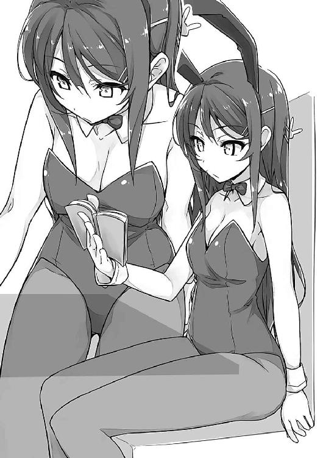
しばらくして、手にした本から視線を上げた彼女と目が合ってしまう。
「......」
「......」
お互いに瞬きを二回。
先に口を開いたのは彼女の方だった。
「驚いた」
どこか跳ねるような悪戯っぽさが含まれた声音。
「君にはまだ私が見えてるんだ」
まるで他の人には自分が見えていないかのような言い草だ。
けれど、彼女の言葉の受け取り方としては、それで正解だったのだろう。事実、周囲の人たちは、違和感の塊みたいな彼女の存在に、誰ひとりとして気づいていなかったのだから......。
「それじゃあ」
本を閉じた彼女が立ち上がろうとする。
本来ならばこれでお別れ。今日は変な人に出会ったと、後日笑い話にでもすればいい。けど、簡単には割り切れない理由が咲太にはあった。
困ったことに、咲太は彼女のことを知っていたのだ。
同じ高校に通うひとつ上の先輩。県立峰ヶ原高等学校の三年生。名前も言える。フルネームを知っている。
桜島麻衣。
それがバニーガールの名前だ。
「あの」
立ち去ろうとしていた白い背中に小さく声をかけた。
ぴたりと足が止まる。
視線だけで麻衣は「なに？」と聞いてきた。
「桜島先輩ですよね？」
声のボリュームに注意してその名を口にする。
「......」
麻衣の瞳が一瞬だけ驚きに揺れた。
「私をそう呼ぶということは、君、峰ヶ原高校の生徒なの？」
麻衣が再び席に着く。真っ直ぐに咲太を見つめてきた。
「二年一組の梓川咲太です。梓川サービスエリアの『梓川』に、花咲く太郎の『咲太』で、梓川咲太」
「私は桜島麻衣。桜島麻衣の『桜島』に、桜島麻衣の『麻衣』で桜島麻衣よ」
「知ってます。先輩、有名人だし」
「そう」
興味なさそうに、麻衣は片手で頰杖を突いて窓の外へと視線を逸らす。わずかに前傾姿勢になったことで、胸の谷間が強調される。自然とそこへと目が吸い寄せられた。これぞ、眼福。
「梓川咲太君」
「はい」
「ひとつ、忠告をしてあげる」
「忠告？」
「今日、見たことは忘れなさい」
口を開きかけた咲太が言葉を発する前に、麻衣がさらに続ける。
「このことを誰かに話したりしたら、頭のおかしな人だと思われて、頭のおかしな人生を送ることになるんだから」
なるほど、確かに忠告だ。
「それと、金輪際、私に関わらないように」
「......」
「わかったのなら、『はい』と言いなさい」
「......」
無言の咲太に、麻衣はむっとしたような表情を見せた。でも、すぐにさっきまでの気だるげな表情に戻ると、今度こそ席を立つ。そして、本を元の棚に戻してから、図書館の出口へと歩き出した。
その間、やはり誰ひとりとして、麻衣に注目する人はいなかった。貸し出しカウンターの目の前を悠然と通過しても、司書さんたちは黙々と自分の仕事を続けていた。黒のストッキングに包まれた細くて綺麗な足に見惚れていたのは咲太だけだった。
麻衣の姿がすっかり見えなくなったところで、取り残された咲太は机に突っ伏した。
「忘れろって言われてもな」
ぽつりと独り言をもらす。
「あんな刺激的なウサギさん姿、忘れんのは無理だろ」
全開だった肩から胸元にかけての色っぽい素肌。麻衣が頰杖を突いたおかげで、強調された谷間。鼻に残ったいい香り。咲太にだけ聞こえるように囁く小さな声。真っ直ぐに見つめてくる澄んだ瞳。それらすべてが咲太のオスの部分を刺激してきて、体の一部がとても元気になっている。
おかげで、立ち上がろうにも周囲の目が気になって立ち上がれない。
しばらくは大人しく座っているしかなさそうだ。
それが、色々と聞きたいことがありながらも、すぐさま麻衣を追いかけられなかった理由だった。
２
翌朝、咲太は「ウサギの群れに押し潰される」という、変な夢にうなされて目を覚ました。
「空気を読んで、ここはバニーガールだと思うんだが......」
自分の夢に注文をつけつつ体を起こそうとする。
「ん？」
でも、どうしたことか起き上がれない。左の肩がやけに重たい。
布団をめくると、その理由が判明した。
左腕に抱きつくように、丸まって眠っているパジャマ姿の少女がひとり。あどけない寝顔。布団がなくなって寒いのか、より咲太に体を寄せてきた。
今年十五歳になる妹のかえでだ。
「かえで、朝だぞ、起きろ」
「お兄ちゃん、寒いです......」
寝ぼけて起きる気配がないので、咲太は妹を持ち上げて立ち上がった。
「重っ！」
身長１６２センチと女子としては背が高い実の妹。最近は発育もよろしく、女の子から女の人への成長を両腕で実感する。
「かえでの半分は、お兄ちゃんへの想いで出来てるんです」
「なんだそのイタイ設定は。半分がやさしさの頭痛薬か？ てか、起きてるなら起きろよ」
「む～」
不満を表情いっぱいに溜め込みながらも、かえでは咲太の腕の中から下りた。ここ一年くらいで、顔のつくりが大人びてきたせいか、どうも言動と見た目のつり合いが取れていない。おかげで、何気ない兄と妹のスキンシップに、妙な背徳感が漂ってきている。
「あと、僕のベッドに潜り込むのもそろそろ卒業しろよ」
ついでに、パンダの柄をしたフード付きのパジャマも卒業した方がいい。
「かえでが起こしに来たのに、お兄ちゃんがすぐに起きなかったからいけないんです」
むすっとした顔は年齢よりも幼く見える。
「だとしても、もういい年頃なんだからさ」
「あ、お兄ちゃんが朝から興奮してしまうんですね」
「実の妹に誰が欲情するか」
おでこを軽く突いてさっさと部屋を出る。
「あ～、待ってください」
その後、ふたり分の朝ごはんを用意して、かえでとふたりで食べた。先に食事を終えた咲太は、学校に行く身支度をてきぱきと済ませると、
「お兄ちゃん、いってらっしゃい」
と笑顔のかえでに見送られて、ひとり家を出た。
住んでいるマンションの敷地から出ると、すぐにあくびが出た。昨日は、色々と刺激的なものを見たせいか、興奮してなかなか寝付けなかったのだ。その上、変な夢を見て目覚めもあまりよくない。
再度あくびをしながらも、住宅街を通り抜けていく。途中、橋を一本渡る。駅が近づくにつれて周囲の建物は大きくなってきた。人影も増え、その誰もが咲太と同じ方向へと歩みを進めている。
突き当たった大通りの信号をひとつ渡り、ビジネスホテル、家電量販店の脇を通過すると、ようやく駅が見えてきた。
家を出てから約十分。
神奈川県藤沢市の中心地である藤沢駅。通勤、通学の社会人と学生が右へ左へと忙しなく行き交っている。
駅の一階には、上りは新宿、下りはスイッチバックで片瀬江ノ島方面へと向かう小田急線のホームがあり、二階はＪＲの東海道線と湘南新宿ラインの改札口だ。
咲太は人の流れに乗って、階段を上がった。けど、ＪＲの改札には背を向ける。
連絡通路を三十メートルほど進むと、小田急百貨店のビルの前に着いた。別に、今からデパートで買い物をしようというわけではない。だいたい、今はまだ店は閉まっている。その閉まっているドアの右側に、もうひとつの藤沢駅があるのだ。
江ノ島電鉄。通称江ノ電のホーム。途中、十三の駅に停車しながら、約三十分をかけて鎌倉までを繫ぐ単線路線。
咲太が定期券をかざして改札を通ると、電車が入ってきたところだった。窓枠のあたりはクリーム色で、上下を緑色で挟んだレトロな雰囲気。四両編成と短い。
咲太はホームの先まで歩いて、一番前の車両に乗り込んだ。
小、中、高を問わず、制服姿の乗客が多い。残りはスーツ姿の社会人。この街に住むまでは観光路線のイメージしかなかったが、地元の住民にとっては通勤通学の足として、日常的に利用されている。
咲太が奥のドア付近に寄りかかると、
「うっす」
と声をかけてくる人物がいた。
あくびを嚙み殺しながら隣にやってきたのは、かの有名な男性アイドルの芸能事務所に在籍していそうなイケメン。全体的な顔のつくりはシャープで、一見すると威圧感があるのに、笑った途端に目尻が下がって人懐っこい幼さが顔を出す。それが女子にはたまらない魅力らしい。
名前は国見佑真。所属するバスケ部でレギュラーとして活躍する二年生。彼女あり。
「はぁ......」
「おいおい、人の顔を見るなりため息はないだろ」
「朝から国見のさわやかさは目に毒だ。憂鬱になる」
「まじか」
「まじだ」
他愛のない日常会話を繰り広げていると、発車ベルが鳴ってドアが閉まった。
重たい体を引きずるように走り出した電車は、ゆるゆるとまだ加速途中としか思えない速度で進んでいく。かと思えば、早くも速度を落としはじめて、次の石上駅に停車した。
「なあ、国見」
「ん？」
「桜島先輩って......」
「残念だったな」
まだ殆ど何も言っていないのに、佑真は先回りして咲太の肩にぽんと手を置いてきた。
「なに、なぐさめてんだよ」
「咲太が牧之原以外の女子に興味を持つのは喜ばしいことなんだが、いや～、さすがにあの人は無理だろぉ」
「僕は告白するとも、好きになったとも言ってないぞ」
「んじゃ、なに？」
「あの人、どういう人なのかと思って」
「ん～、そら、有名人じゃん？」
「ま、そうだよな」
そう、桜島麻衣は有名人だ。恐らく、県立峰ヶ原高等学校に通う全生徒が彼女のことを知っている。いや、日本国民の七、八割が知っているんじゃないだろうか。そう言っても大げさに聞こえないくらいに、本当の有名人なのだ。
「子役として六歳で芸能界デビュー。デビュー作の朝ドラは過去の超ヒット作と肩を並べるほどの視聴率と人気を誇り、一躍時の人となりましたってか」
それを起爆剤に、その後は映画、ドラマ、ＣＭなどにも多数出演。文字通りＴＶで見ない日はないという人気を獲得した。
さすがに、デビューから二年、三年と経過するにつれて、一時期の『なんでもかんでも桜島麻衣』という勢いはなくなったが、逆にそこからは役者としての実力を買われたオファーが増えていくことになる。
単年で消える芸能人が多い中で、中学生になっても順調に演技の仕事を続けていた。その時点で十分すぎるほどにすごいのだが、彼女には二度目のブレイクまであったのだ。
十四歳になった桜島麻衣は、大人びた美少女に成長し、その当時公開された映画を切っ掛けに、再び急速に注目を集めていった。一週間のうちに発売される漫画雑誌の表紙グラビアが、すべて彼女の笑顔で埋め尽くされるようなこともあったほどだ。
「俺、中学の頃の桜島麻衣は好きだったな。あの、なんつうの？ かわいさとエロスとミステリアスの融合がたまらんかった」
佑真のみならず、多くの男子が心を奪われていった。
人気は再び絶頂へ。けれど、その最中に、突如として麻衣は活動休止を発表する。麻衣が中学を卒業する直前。明確な理由は語られなかった。あれからまだ二年と数ヵ月しか経っていない。
その桜島麻衣が、自分が通うことになった高校にいるのを知ったときには、さすがに驚いた。
純粋に、「芸能人って実在したんだなあ」と思ったものだ。
「いろんな噂はあったよな。あれだけ売れてるのは、枕営業やってるからだとか、プロデューサーの愛人だとか」
「その頃、まだ小学生だろ」
「さすがに中学になってからの話だよ。むしろ、最初はマネージャーしてた母親の方がやってるなんて噂が、ワイドショーとかに出てたろ。今じゃ、芸能事務所立ち上げて、社長だったか？ 先週、そっちの方はＴＶで見たぞ」
「ふ～ん、それは知らなかった。でも、噂に関しては、どうせ根も葉もないただの噂だろ」
「火のないところに煙は立たないって言葉もある」
「その火元が本人とは限らない。今はそういう時代なんだよ」
ネットを通して、一瞬で情報は広く伝達する。共有される。たとえ、それが真実でなくても......。受け取る側にとっては真偽などたいして重要ではないのだ。話題になるか、ネタになるか、面白いか、祭りになるか、ザマぁ見ろと思えるか。その程度でいい。
「咲太が言うと説得力が違うね」
その言葉は軽く聞き流しておいた。
相変わらずゆっくりと走る電車は、柳小路、鵠沼、湘南海岸公園、江ノ島の四つの駅を過ぎていた。
窓の外を見ると、唯一の路面区間を通過中だった。すぐ隣に乗用車がいるという不思議な光景。でも、「おっ」と思ったときには、通常の線路に戻ってしまった。
この辺まで来ると、周囲の建物と電車との距離がぶつかりそうなくらいに近い。窓から手を出せば、民家の石垣に手が届きそうだし、庭の木々の枝や葉は、時々車両に当たっているんじゃないかと思うほどだ。
そうした心配をよそに、電車は家々の間をのんびりとすり抜けて、次の腰越駅に到着した。
「でも、学校じゃ誰かと一緒にいるの見ないよな」
「ん？」
「桜島先輩だよ。咲太が言い出した話題だろ」
「ああ、そうだな」
「いっつもひとりっつうかさ」
クラスで浮いているという以上に、学校から浮いている。桜島麻衣からはそういう印象を咲太も受けていた。
「バスケ部の先輩に聞いたんだけど、一年の最初の頃は、全然学校来てなかったらしいぞ」
「なんで？」
「仕事。活動休止を宣言したあとも、出演が決まってた作品は出てたろ？」
「あ、そういうことか」
でも、だったら、全部仕事が片付いてから芸能活動の休止を宣言すればよかったんじゃないだろうか。何か、先に言わないといけない事情でもあれば別だが......。
「まともに来るようになったのは、夏休み明けらしい」
「......そりゃ、しんどいな」
秋に麻衣が登校した際の教室の様子は容易に想像できた。クラスメイトたちは、一学期という時間をかけて、各々の関係値とグループの勢力図を完全に固めていたはずだ。
「その先は推して知るべしってわけ」
佑真も同じ想像をしているのだと思う。
一度決まったクラスの形は、そう簡単には変わらない。自分の居場所があることに安堵して、誰もがそこにしがみ付く。クラス内での地位を守ろうとする。
二学期から登校するようになった麻衣は、さぞ扱いにくい存在だったことだろう。芸能人でもある麻衣。当然、気にはなるけど、迂闊に触れるわけにもいかない。積極的に麻衣に話しかけるような真似をすれば変に目立ってしまう。目立てば誰かに「ウザい」とか、「調子乗ってる」とか、陰口を叩かれるかもしれない。それを理由に、今度は自分がクラスから浮いていく。そうなったら、もう元には戻れないことをみんなが知っている。それが学校という空間。
そのせいで、麻衣は学校に馴染む機会を得られなかったのだと思う。
結局のところ、毎日口癖のように、「つまらない」とか、「面白いことないかな～」とか言ってるくせに、本当はみんな変化など求めてはいないのだ。
咲太だってそうだ。何もない方が楽でいい。気楽でいいと思っている。心も体も疲れなくていい。平穏万歳。ヒマ最高だ。
発車のベルが響き、ドアがブシューと音を立てながら閉まる。
再び走り出した電車はやはりのんびりと民家の間を通り抜けていく。
目の前には建物の壁。壁に次ぐ壁。家に次ぐ家。時々、やたらと小さな踏切。そして、まだまだ壁と家が続くかと思った瞬間、何の前触れもなく視界が彼方まで広がった。
海。
どこまでも続く青い海が見える。朝の太陽の光を反射して、きらきらと輝いていた。
空。
どこまでも広がる青白い空が見える。朝の澄んだ空気は、青から白へのグラデーションを作っていた。
そのふたつの中心には、真っ直ぐに引かれた水平線。この一瞬の車窓には、車内の視線を奪っていく魔力がある。
電車はしばらくの間、相模湾に面した七里ヶ浜の海岸線を走る。右手には江の島があり、左手には海水浴場として知られる由比ヶ浜を望むことができる魅力的なポイント。
「でも、なんで急に桜島先輩なんだよ」
「国見はバニーガール好きか？」
窓の外に視線は向けたままで咲太は尋ねた。
「いや、そうでもない」
「なら、大好きか？」
「ああ、大好きだ」
「だったら、教えない」
「はあ？ なんだそりゃ。教えろって」
軽く佑真がわき腹を小突いてくる。
「たとえば、図書館で魅力的なバニーガールに出会ったら、国見はどうする？」
「二度見するな」
「だよな」
「そのあと、ガン見する」
これが正常な人間の反応だ。少なくとも正常なオスの反応と言える。
「んで、それが桜島先輩と何か関係あるわけ？」
「あると言えばあるけど、どうだろな」
「なんだそりゃ」
咲太が濁すと、それ以上は追及する気がないらしく、佑真は適当に笑うだけだった。
なおも海岸線を走る電車は、途中にもうひとつの駅を挟んで、咲太の通う峰ヶ原高校がある七里ヶ浜駅に到着した。
電車のドアが開くと潮の香りがした。
その中を、同じ制服を着た生徒たちがぞろぞろとホームへ降りていく。定期のＩＣを読み取るカカシみたいな機械が一本立っただけの簡素な改札口。日中は駅員さんが立っているが、咲太たちが登校するこの時間には誰もいない。
駅を出て、踏切をひとつ渡れば、学校はもう目の前だ。
「そういや、かえでちゃんは元気？」
「妹はやらんぞ」
「つれないこと言うなよ、お義兄さま」
「国見にはかわいい彼女がいるだろ」
「そういや、そうだった」
「彼女が聞いたら怒るぞ」
「いいよ。俺、上里の怒った顔も好きだし。ん？ お、噂をすればなんとやらってか」
何かに気づいた佑真の視線を追うと、十メートルほど前を桜島麻衣がひとりで歩いていた。長い手足に、小さな顔。すらっとしたモデルのような体型。同じ制服を着ているはずなのに、他の生徒とは違って見える。両足を包む黒タイツも、お尻を隠したスカートも、サイズがぴったりのブレザーも......そのすべてがしっくりきていない。借り物の衣装を着せられている感じ。もう三年生だというのに、制服は麻衣に全然馴染んでいなかった。
むしろ、その周囲でしゃべる女子三人組の方が、よっぽど上手に制服を着こなしている。部活の先輩に威勢よく、「おはようございます！」と言っている一年生の方が似合っていた。友人の背中に軽く蹴りを入れている男子生徒でさえ、華やかさと活気に満ちている。
駅から学校までの短い通学路は、峰ヶ原高校に通う生徒たちの楽しげな話し声と笑い声で満たされていた。
そうした中を、ひとり無言で歩き続ける麻衣の姿は妙に孤独に見えた。平凡な県立高校に迷い込んだ異分子。異質な存在。みにくいアヒルの子。それが、この場所における桜島麻衣の印象だった。
いや、それどころか、誰も麻衣を気にしていない。あの『桜島麻衣』がいるのに、見向きもしていない。騒ぎ立てる生徒はひとりとしていない。これが峰ヶ原高校における『普通』なのだ。
言うなれば、『空気』のように、麻衣はこの場所に存在している。それを全員が受け入れている。その光景は、昨日、湘南台の図書館で見た人々の反応を、咲太に思い出させていた。妙な不安感が腹部をそわそわとさせる。
「なあ、国見」
「ん？」
「桜島先輩のこと見えてるよな」
「そら、ばっちりと。目はいい方だからな。両目とも２・０」
こんな質問をすれば、佑真のように返答するのが当然だった。昨日の、アレがどうかしていたのだ。
「んじゃあな」
「ああ」
今年は別々のクラスになった佑真とは二階の廊下で別れ、咲太は二年一組の教室に入った。すでに登校している生徒は半分ほど。
窓際の一番前の席に座る。『梓川』という名字のおかげで、春の席順はだいたい同じ位置になる。『相川』や『相沢』でもいない限り、出席番号は一番。なんとなく損をすることが多いように思う『一番』だ。けど、この峰ヶ原高校に入学してからは、春に窓際の席が約束されるのであれば、そう悪い番号でもないと思えるようになっていた。
なぜなら、この学校の窓からは海が見えるのだ。
朝から風を求めてやってきたウィンドサーフィンの帆がいくつか見える。
「ねえ」
「......」
「ねえってば」
近くでした声に気づいて顔を上げる。
机を挟んだ真正面から、不機嫌そうな女子生徒が咲太を見下ろしていた。クラスで一番目立つ女子グループの中心的存在。名前は上里沙希だ。
ぱっちりと開いた大きな目。肩まである髪はくるんと内向きにカールしている。薄っすらとメイクした唇は綺麗なピンク色だ。男子の間ではかわいいと評判。
「無視とか酷くない？」
「ごめん。僕に話しかけてくるやつが、まだこの教室にいるとは思わなかった」
「あのさ......」
チャイムがそこで鳴る。
続けて、担任の教師が教室に入ってきた。
「あーもー。大事な話があるから、放課後、屋上。絶対だよ」
ばんと机に手を置くと、上里沙希は斜め後ろの自分の席へと戻っていった。
「僕の意思は関係なしか」
ぼそりと独り言を口にしてから、咲太は肘を突いて海を見据えた。
今日も海はそこにある。ただ、あるだけだ。
「面倒なことになったな......」
女子生徒から放課後に呼び出しを受けても、咲太は少しも浮かれた気分になれなかった。雀の涙ほどのときめきもなかった。
だいたい、上里沙希は国見佑真の彼女なのだ。
３
放課後、忘れたふりをして一度は下駄箱に行った咲太だったが、律儀にも引き返して屋上へ顔を出した。ばっくれたらあとが面倒だと考え直したのだ。少し違うが、急がば回れ。
それなのに、先に来ていた上里沙希からは、
「遅い！」
と早速怒られた。心外極まりない。
「掃除当番だったんだよ」
「そんなの知らない」
「で、何の用？」
「単刀直入に言うけど」
そう前置きをしたあとで、沙希は真っ直ぐに咲太を睨み付けてきた。
「クラスで浮いてる梓川なんかと一緒にいると、佑真の株が下がるの」
「......」
なにやらすごいことを言われた。宣言通り、単刀直入だ。
「今日、はじめて上里さんとは会話をするのに、僕のことをよく知ってるんですね」
棒読みで言葉を返しておく。
「『病院送り事件』のことは、みんな知ってる」
「ああ......『病院送り事件』ね」
興味がなさそうに、咲太は曖昧に繰り返した。
「佑真がかわいそうだから、今後、佑真としゃべんないで」
「その理屈だと、現在進行形で上里さんもかわいそうで、株が大暴落してるけど、いいわけ？」
屋上には他の生徒の姿もある。彼らの視線は、不穏な空気を放つ咲太と沙希を明らかに気にしていた。
スマホをいじっているやつもいる。実況でもしているんだろうか。ご苦労なことだ。
「あたしはいいの。佑真のためだもん」
「なるほど。すごいな、上里さんは」
「はあ？ なに褒めてんの？」
どちらかというと揶揄する意味で言ったのだが、皮肉が伝わらなかったようだ。
「まあ、心配ないと思うぞ。大丈夫だろ、国見は。僕と一緒にいるところを誰かに見られたくらいで、国見の株は落ちない。あいつは、自分の母親が作った弁当を毎日美味いと言って、感謝しながら食うほどに、思いやりというものがどういうことかを知っているいいやつだ」
母子家庭に育てば誰だって母親を大切にする、と佑真は笑っていたが、そんな単純な話じゃないことはバカでもわかる。余計に反発するやつだって絶対にいる。
「そんなわけで、佑真は上里さんにはもったいないくらいにいいやつだから安心しろ」
「ケンカ売ってるの？」
「買ってるんだよ。上里が僕にケンカ売ってるんだろ？」
苛々してきたせいか、『さん』が抜けてしまった。
「それ！ その上里もムカツク！ なんであんたのことは名前で呼ぶくせに、彼女のあたしは佑真から『上里』って名字で呼ばれなきゃいけないのよ」
変なところに食いつかれて、急に話題が飛んだ。「知るか」と思ったが黙っておく。これ以上、彼女の愛に振り回されるのはごめんだ。
ただ、その代わりに口にした言葉こそ、言うべきではなかったのかもしれない。
「そんなに苛々して、上里、生理か？」
「んなっ！」
一瞬で、沙希の顔が真っ赤に染まる。
「ちょっ、死ね！ バカ！ 死ね！ 絶対死ね！」
完全に取り乱した沙希は、罵声を浴びせながら校舎の中へと戻っていく。ばたんと勢いよく屋上のドアが閉まった。
ひとり取り残された咲太は、
「......やべ、図星だったか」
と、反省して頭をぼりぼりと搔いた。
うっかり上里沙希と校舎の中で再会しないように、咲太は屋上で少し潮風に吹かれてから帰宅することにした。
下駄箱に下りてきたのは、空が赤く染まりかけた頃。
真っ直ぐに帰宅する生徒の姿はすでにない。学校に残っているのは部活動に勤しんでいる生徒だけという中途半端な時間帯。人気のない下駄箱は静かで、時折聞こえてくる部活の掛け声は、やけに遠くに感じた。今、ここには自分しかいないことを強く実感する。
駅までの道も殆ど貸し切り状態だった。すぐにたどり着いた七里ヶ浜駅もやはり空いている。授業が終わった直後は、峰ヶ原高校の生徒でいっぱいになる小さなホームに、今は数名の人影があるだけだ。
その中に、咲太はある人物の姿を見つけた。ホームの端の方に、凜として佇む女子生徒。周囲との接触を拒むような雰囲気。イヤホンのコードは、耳から気だるげに垂れ下がり、制服の上着のポケットまで続いている。
桜島麻衣だ。
夕日を浴びた横顔は、どこか物憂げで美しく、立っているだけなのにとても絵になっていた。しばらく眺めていたいと思わせるほどに......。けど、今は別の興味が咲太を動かしていた。
「こんにちは」
咲太は近づきながらそう声をかける。
「......」
返事はない。
「こんにちはー」
先ほどよりも大きな声を出す。
「......」
やはり、反応はなかった。
でも、なんとなく咲太の存在に、麻衣は気づいているように思えた。
物静かな駅のホーム。電車を待っているのは、咲太、麻衣、それと峰ヶ原高校の生徒が他三名。今、観光客と思しき大学生のカップルがやってきた。駅員に一日乗車券『のりおりくん』を提示している。
ホームの真ん中までやってきたカップルは、ほどなくして麻衣の存在に気づいた様子だった。
「ねえ、あれ」
「やっぱり、そうだよな？」
指を差しながらこそこそと相談する声が聞こえてくる。麻衣は気づいていないのか、相変わらず線路の方を向いたままだ。
「ちょっと、やめなって～」
止める気なんてさらさら感じさせない甘ったるい女性の声。ふざけてじゃれ合うカップルのやり取りは、静かな駅の中で耳障りでしかなかった。
我慢しかねて咲太が振り向くと、男の方がスマホのカメラを麻衣に向けていた。
シャッターが切られる寸前、咲太はフレームに割り込んだ。パシャッと音がする。きっと咲太のアップが写ったはずだ。
「な、なんだよ。お前！」
一瞬驚いたような表情を見せながらも、男が強気に前に出てくる。彼女の手前、高校生ごときに遅れを取るわけにはいかないのだろう。
「人間ですが」
真顔で質問に答えておく。間違ってはいないはずだ。
「はあ？」
「そっちは盗撮野郎ですか？」
「んなっ！ ち、ちがっ！」
「ガキじゃないんだから、ダサいことしないでくださいよ、お兄さん。見てるこっちが恥ずかしくなる。同じ人間として」
「だから違うって！」
「どうせ、鬼の首を取ったような気分で、写真付きのツイートでもする気なんだろうけどさあ」
「っ!?」
図星だったのか、男の顔は一瞬で怒りと羞恥に染まる。
「注目浴びたいなら、あんたの写真を撮って、『盗撮野郎です』ってアップしてあげましょうか？」
「......」
「小学生のときに言われましたよね？ 『自分がされて嫌なことは、人にしないようにしましょう』って」
「う、うるせえ、バカ！」
ようやく、それだけ絞り出すと、男は彼女の手を引いて、ホームにやってきた鎌倉行きの電車に乗り込んだ。一本しか線路がないこの駅は、上りも下りも同じホームに電車が交互に来て止まるのだ。
走り出した電車を何気なく見送っていると、咲太は背中に視線を感じた。
恐る恐る振り向くと、麻衣が面倒くさそうにイヤホンを外しているところだった。
咲太と目が合うと、
「ありがと」
と言ってくる。
「え？」
麻衣の意外な反応に、咲太は驚いた声を出してしまう。
「『余計なことしないで』って怒られるとでも思った？」
「はい」
「それは思うだけで我慢してる」
「だったら、それも言わないでほしかった」
そもそも言ってしまった時点で、全然我慢をしていないと思う。
「ああいうのは、慣れてるから」
「ああいうのは、慣れても何かが磨り減るもんでしょ」
「......」
思いがけない言葉だったのか、麻衣が瞳の奥にわずかな驚きを示した。
「磨り減る......ほんとその通りね」
何が楽しいのか、麻衣が口元に小さな笑みを浮かべる。
今なら話ができるような気がして、咲太は麻衣の隣に立った。
でも、先に質問を飛ばしてきたのは麻衣の方だった。
「なんでこんな中途半端な時間にいるの？」
「クラスの女子から、屋上に呼び出されて」
「告白？ モテるんだ、意外」
「憎悪の告白の方ですけど」
「なにそれ」
「あなたのことがとても嫌いですと、面と向かって言われました」
「最近、そういうのが流行ってるんだ」
「少なくとも、僕は生まれてはじめての経験です。桜島先輩の方こそ、どうしてこんな中途半端な時間に？」
「君にばったり会わないよう、時間を潰してたの」
麻衣の横顔からは、本気か噓か見分けがつかない。確認して本当だとわかると嫌なので咲太は聞くのはやめておいた。
時刻表を振り返って、話題を変えることにする。
「正確には、今、何時ですか？」
「時計は？」
両手首を出して腕時計がないことを見せる。
「なら、ケータイを見なさい」
「ないです」
「スマホだって言いたいわけ？」
「ケータイもスマホもないんです。今日、忘れてきたって意味でもなくて」
持って来ていないのではなくて、単に持っていないのだ。
「......ほんとに？」
麻衣は信じられないという顔だ。
「ほんとにほんとです。前は使ってたけど、むしゃくしゃして海に投げ捨てました」
今でもよく覚えている。峰ヶ原高校の合格発表を見に来た当日の出来事......。
重さ約百二十グラム。それ一台で世界中と繫がれる便利な通信機器は、振り被った咲太の手を離れると、緩やかな放物線を描いて海に落ちていった。
「ゴミはゴミ箱に捨てなさい」
ごもっともなお叱りを受けてしまった。
「次からそうします」
「君、友達いないでしょ」
ケータイで連絡が取れなければ、友達付き合いもできない......今はそんなご時世だ。麻衣の指摘は当たっている。番号、メアド、ＩＤの交換が、友達作りの最初の切っ掛けだから、それひとつないだけで、社会のルールから零れてしまう。狭い学校という世界の中で、ルールを共有できない人間は最初からあぶれていく。おかげで、入学当初は友達作りに苦労した。
「友達ならふたりもいますよ」
「ふたりは『も』かしら？」
「友達なんて、ふたりいれば十分だと僕は思いますけどね。そいつらと一生友達すればいいんだし」
スマホに登録された番号、メアド、ＩＤの数に意味なんてない。たくさんいればいいというわけでもないと思う。それが咲太の持論だ。
そもそも、友達の線引きをどこでするか......という問題もある。咲太にとっては、『深夜に相談の電話をしても、渋々付き合ってくれる』くらいの間柄を言う。
「ふ～ん」
適当な相槌を打ちながら、麻衣が上着のポケットからスマホを取り出した。ウサギの耳が飛び出した赤色のカバーがしてある。
その画面を咲太に向けてくる。表示されていた時刻は四時三十七分。あと一分で電車は来る。そう思った直後、麻衣の持ったスマホはぶるぶると震え出して、着信を伝えてきた。
見えてしまった画面には、『マネージャー』と記されていた。
麻衣の指が拒否に触れる。震動は止まった。
「いいんですか？」
「電車来たし......出なくても、あの人の用件はわかってる」
気のせいか、言葉の後半からは苛立ちを感じた。
ゆっくりとホームに藤沢行きの電車が入ってくる......。
麻衣と同じ乗車口から乗ると、空いていた席に並んで座った。
ドアが閉まり、ゆるゆると電車が走り出す。乗客の数はほどほど。座席は八割ほどが埋まり、数名が立っている状態。
無言のまま、二駅ほど進んだ。海も見えなくなり、住宅街のど真ん中をガタンゴトンと走っていく。
「昨日のアレなんですけど」
「それは忘れなさいと、昨日、忠告したわよね」
「桜島先輩のバニー姿はエロすぎて忘れるのは無理でした」
我慢していたあくびが出る。
「おかげで昨晩は興奮して、全然寝付けなかったし」
恨めしそうに麻衣を見る。
「ちょ、ちょっと！ 私を想像して変なことしてないでしょうね」
侮蔑の眼差しと、辛辣な罵声が飛んでくるのかと思いきや、麻衣は顔を赤らめて慌てていた。恥ずかしさを我慢するように、上目遣いで睨み付けてくる。なんともかわいらしい仕草だ。
でも、麻衣はすぐに動揺を押し殺すと、
「べ、別に年下の男の子にエッチな想像されるくらい、私は平気だけどね」
と、取り繕うように言い訳をしてきた。相変わらず頰は朱色に染まったままだ。強がっているのは一目瞭然。大人びた外見とは裏腹に、意外とウブなのかもしれない。
「ちょっと離れてくれる？」
汚いものを追い払うように、麻衣が咲太の肩を押す。
「うわ～、傷付くなー」
「だって、妊娠しそう」
「名前は何がいいかな？」
「君ね......」
麻衣の視線が冷たく凍っていく。どうやら、調子に乗りすぎたらしい。
「私が忘れろと言ったのは格好のことじゃなくて......」
「なら、昨日のアレはなんだったんですか？」
麻衣が逸らした話題に咲太は素直に乗っかった。元々、そのことを聞くつもりで声をかけたのだ。
「ねえ、梓川咲太君」
「名前、ちゃんと覚えててくれたんですね」
「人の名前は一度で覚えるようにしてるの」
見習いたい心がけだ。今は休止している芸能活動の中で培ったものだろうか。たぶん、そうなのだと感じた。
「君の噂、聞いたわよ」
「噂......ね」
何のことかは想像がつく。今日もその件で、屋上に呼び出されたくらいだ。
「正確には、聞いたんじゃなくて見たんだけど」
そう言って、麻衣は一度しまったスマホをブレザーのポケットから出した。どこかの掲示板を開いている。
「中学は横浜の方だったんだ」
「そうです」
「暴力事件を起こして、同級生三人を病院送りにしたとか」
「意外と武闘派なんですね、僕って」
「そのせいで、本当は横浜の高校に進学が決まってたのに、二次募集でわざわざ峰ヶ原高校を受験してこっちに引っ越してきたとか」
「......」
「他にも色々あるけど、まだ続ける？」
「......」
「『自分がされて嫌なことは、人にしないようにしましょう』って、さっきいいことを言ってた人がいたわね」
「別に詮索されるくらいなんともないですよ。むしろ、桜島先輩に興味を持ってもらえて光栄です」
「ネットってすごいね。こんな一個人の情報まで堂々と晒されてるんだから」
「そうですね」
素っ気無く返事をする。
「ま、書かれていることが事実である保証はないんだけど」
「先輩はどう思ったんですか？」
「自分の頭で少し考えればわかるでしょ。そんな大事件を起こした人間が、平気な顔して高校に通えるわけがない」
「その台詞、クラスメイトに聞かせてあげたいなぁ」
「違うなら違うって、自分で言いなさい」
「噂って空気みたいなものじゃないですか。『そういう空気』って意味の空気......最近じゃあ、読まなきゃいけないことになっている『空気』」
「そうね」
「読めないだけで、ダメなやつ扱いされる空気......あれって、その空気を作っている本人たちに、当事者意識なんてないから、熱心に本当のことを説明したところで、どうせ『なにあれさむーい』ってなるのがオチですよ」
戦っているのは目の前の人ではないから、何を言ったところで手応えなんてないのだ。そのくせ、何かをすれば、見えないところから集中砲火が返ってくる。
「なのに、空気と戦うなんてバカバカしいですって」
「だから、誤解はそのままにして、君は戦う前から諦めるんだ」
「どの道、誰が言い出したのかもわからない、噂や書き込みを、何も考えずに信じてしまえるピュアな連中とは、友達になる自信がないからいいんです」
「悪意のある言い方ね」
麻衣の浮かべた笑みには共感が見て取れた。
「次は先輩の番」
「......」
一瞬、不機嫌そうな目を麻衣が咲太に向けてくる。でも、咲太の事情を聞いた手前、諦めたように口を開いた。
「気づいたのは、四連休の初日」
つまり、四日前。五月三日。憲法記念日。
「なんとなく気まぐれで江の島の水族館に行ったの」
「ひとりで？」
「悪い？」
「恋人とかいないのかなぁと」
「そんなのいたことない」
つまらなそうに麻衣が唇を尖らせる。
「へえ～」
「私が処女だったらいけない？」
咲太をからかうように、麻衣が下から顔を覗き込んでくる。
「......」
「......」
見つめ合うふたり。
見る見る麻衣が赤くなっていく。首まで真っ赤だ。自分で仕掛けてきたくせに、『処女』という単語が恥ずかしくなったらしい。
「あ～、僕、その辺は気にしない主義なんで」
「そ、そう......とにかく！ 家族連れで賑わっている水族館の中で、誰も私を見ていないことに気づいたのよ」
ふてくされたような麻衣の横顔は、少し幼く見えてかわいらしい。大人っぽい外見しか知らなかったので色々と新鮮だ。それを指摘すると、また話が脱線するので、咲太は心の中にしまっておくことにした。
「最初は気のせいだと思った。芸能活動をやめて二年近く経つし、みんな魚を見るのに夢中だったからね」
声のトーンは徐々に深刻なものへと沈んでいく。
「でも、帰りがけに近くの喫茶店に入った瞬間にはっきりした。『いらっしゃいませ』の声もかけられないし、席にも案内されないんだから」
「セルフのお店だったんじゃ」
「昔ながらの喫茶店。カウンター席があって、他にはテーブルが四つくらいしかない小さなね」
「じゃあ、実は前に行ったことがあって、出入り禁止を食らうほど先輩がなんかやらかしたとか？」
「そんなわけないでしょ」
片方の頰を怒りに吊り上げた麻衣が、咲太の足を踏んできた。
「先輩、足」
「足がどうかしたの？」
麻衣は真顔だ。本当に何もわかっていないという雰囲気を出してくるからすごい。演技のプロとはこういうものかと思う。
「いえ、踏んでもらえて幸せです」
冗談のつもりだったのに、麻衣はドン引きしている。隣に座っていた男性が降りたのをいいことに、咲太から少し離れる始末。
「ジョークですって」
「少なくとも数パーセントの本気を感じた」
「ま、そりゃあ、男として、美人の先輩に構ってもらえるのはうれしいですから」
「はいはい。もう話が進まないから黙って。なんだっけ？」
「喫茶店で出入り禁止を食らった話です」
「怒るわよ」
そう言った麻衣の視線は鋭く、どう見てもすでに怒っている。
反省の意を伝えるために、咲太は口にチャックのジェスチャーをした。
「お店の人に話しかけても反応がなくて、他のお客さんたちもまったく私に気づいてなかった」
不機嫌そうな顔のまま、麻衣は話を続けた。
「さすがにびっくりした。逃げ出すように帰ってきたんだけど」
「どこまで？」
「藤沢駅よ。でも、着いたらなんでもなかった。みんな普通に私のことを見てた。あの『桜島麻衣』だって驚いた顔をしてね。だから、江の島でのことはやっぱり気のせいだと思ったんだけど......気になったから他の場所でも同じことが起きないか、調べて回ってたの」
「それで、バニーガール？」
「あの格好なら、見えてたら見るでしょ。気のせいを疑う余地がないほどに」
確かにその通りだ。あの日の咲太の反応が、その効力の高さを証明している。
「で、他の場所......ってか、湘南台でも同じことが起きてたってわけか......」
「そう。今なら、世界中の人から見えなくなってるのかもって期待したんだけどな」
なぜだか、咲太を責めるような目を向けてくる。
「今日、学校でも普通だったし......今もね」
それとなく麻衣が奥のドア付近へ意識を促す。別の高校の制服を着た男子生徒が、スマホを確認する傍ら、ちらちらとこちらを見ている。当然、お目当ては咲太ではなく麻衣だ。
「おかしな体験をしてるのに、先輩は楽しそうですね」
率直な感想を咲太はぶつけた。今のところ、麻衣の様子に悲壮感はない。
「そりゃあ、楽しいもの」
「正気ですか？」
意味がわからずに、疑問を視線で投げかけた。
「今までずっと人に注目されて生きてきたのよ？ 人目を気にして生きてきた。だから、子供の頃からずっと願ってた。誰も私のことを知らない世界に行きたいって」
噓を語っているようには見えなかった。けど、それが演技だと言われても、信じるに足る理由が麻衣にはある。彼女は子役から役者をしている実力派の女優だ。
そんな話の途中、麻衣が電車の吊り広告に目を向けるのに咲太は気づいた。小説の映画化作品の宣伝。主演の女優は、最近売り出し中の人気者。麻衣と同い年だったと思う。
芸能界の動向が気になるのだろうか。懐かしいのだろうか。いや、そういうのとは違う気がした。遠くの世界を見つめるような麻衣の瞳の奥には、くすぶるような感情が揺らいでいるように思えた。
言い換えるのであれば未練や執着と呼べるもの。
「先輩？」
「......」
「桜島先輩？」
「聞こえてる」
瞬きをひとつしたあとで、麻衣は咲太を横目に捉えた。
「私は今の状況に満足しているの。だから、邪魔をしないで」
「......」
いつの間にか、電車は終点である藤沢駅のホームに止まっていた。ドアが開く。先に立った麻衣を、咲太は慌てて追いかけた。
「これでわかったでしょ。私がどれだけいかれた女か」
「......」
「もう関わらないで」
きっぱりと言い切ると、麻衣は速度を上げて改札口を通過した。そのまま、ここでお別れだとばかりに咲太との距離を広げていく。
少しずつ離れていく麻衣の背中を、咲太はどうせ帰り道だからとしばらく追いかけた。連絡通路を渡り、ＪＲの駅舎に入る。
麻衣はその一角にあるコインロッカーの前で立ち止まった。中から紙袋をひとつ取り出している。かと思えば、再びそそくさと歩き出し、パンを売っている売店に立ち寄っていた。
「クリームパンをひとつください」
おばちゃんにそう声をかける。
聞こえなかったのか、おばちゃんは無反応だ。
「クリームパンをひとつください」
再度、注文を麻衣が繰り返した。
でも、やはり、おばちゃんは応じない。麻衣のことが見えていないかのように、あとからやってきたサラリーマン風の男性から千円札を受け取っている。麻衣の声が聞こえていないかのように、女子中学生にはメロンパンを手渡していた。
「すいません、クリームパン」
咲太は麻衣の隣に歩み出ると、大きな声でおばちゃんに声をかけた。
「はい、クリームパンね」
カウンター越しに差し出された紙袋の代わりに、咲太は百三十円を手渡す。
売店から数歩だけ離れると、麻衣にクリームパンの包みを持たせた。
麻衣は居心地が悪そうに俯いている。
「本当は少しだけ困っていたりしませんか？」
「そうね。ここのクリームパンが食べられないのは困るわ」
「ですよね」
「でも......君は私の頭のいかれた話を信じるの？」
「そういう話を、なんて呼ぶのか、僕は知ってるんで」
「......」
「思春期症候群ですよね」
麻衣の眉がぴくりと反応した。
他人から見えなくなるという例は耳にしたことがなかったが、『他人の心の声が聞こえた』とか、『誰々の未来が見えた』とか、『誰かと誰かの人格が入れ替わった』とか、そうした類のオカルトじみた出来事についての噂話は色々ある。その手のネットの相談掲示板を覗けば、他にもゴロゴロと転がっている。
まともな精神科医は、多感ゆえに不安定な心が見せる思い込みだと、ばっさり切り捨てていた。自称専門家は、現代社会が生み出した新種のパニック症状だと語っていたし、面白がっている一般人たちの考察の中には、「集団催眠の一種だろ」なんて意見もあった。
思い描いた理想と、ままならない現実。その間に生じたストレスがもたらす心の病気だという人もいた。
ひとつだけ共通しているのは、誰も本気にしてはいないという点。大半の大人は、「そんなのは気のせい」で流している。
その程度に無責任な意見交換の中で、誰が言い出したのかはわからないが、いつしか麻衣の身に起きているような不思議な出来事のことを、『思春期症候群』と呼ぶようになっていた。
「思春期症候群なんて、よくある都市伝説じゃない」
そう、麻衣の言う通りだ。都市伝説。普通、誰だって信じない。誰だって麻衣と同じ反応をする。たとえ、不思議な状況を目の当たりにしても、気のせいだと思う。体験しても素直に受け入れたりはしない。そんなことは起こるはずがないという常識の中で、咲太たちは生きているのだから。
だけど、咲太には否定できない根拠があった。
「僕が先輩を信じてることを信じてもらうために、先輩に見せたいものがあります」
「見せたいもの？」
訝しげに麻衣が眉根を寄せた。
「ちょっと付き合ってくれませんか？」
咲太の提案に、麻衣は少し考えたあとで、
「......わかった」
と、小さな声で頷いた。
４
咲太が麻衣を連れてきたのは、駅から十分ほど歩いた住宅街の一角。
「ここは？」
麻衣が見上げた先には、七階建てのマンションがある。
「僕ん家です」
「......」
疑惑と軽蔑がない交ぜになった視線が、真横から突き刺さる。
「別に、何もしませんよ」
小声で、「たぶんだけど」と付け足した。
「今、何か言ったでしょ？」
「先輩に誘惑されたら、自制する自信がないって言ったんです」
「......」
麻衣は口を真一文字に結んでいる。
「あれ？ 先輩、緊張してる？」
「き、緊張？ だ、誰がぁ？」
「声、裏返ってるし」
「と、年下の男の子の部屋に入るくらい、別になんともない」
ふんっと鼻を鳴らし、麻衣がすたすたと入口を目指して歩き出す。笑みを堪えながら、咲太はすぐさま追いかけて麻衣の隣に並んだ。
エレベーターで五階へ上がる。右を向いて三つ目が咲太の住んでいる部屋だ。
「ただいま～」
玄関を開けて声をかけるが返事はない。普段なら、妹のかえでが待ち伏せをしていたりするのだが、今日は帰宅時間が不規則になってしまったので、へそを曲げているのかもしれない。もしくは、単に寝ているか、読書に集中していて、兄の帰宅に気づいていないだけかもしれないが......。
「上がってください」
靴を履いたまま、玄関で硬直していた麻衣を招き入れる。
入ってすぐの咲太の部屋へ通した。
麻衣は持っていた鞄と紙袋を隅に置くと、ベッドに手をついて腰掛けていた。それとなく紙袋の中を覗き込むと、バニーガールの耳が見えた。今日もどこかで、野生のバニーガールをするつもりだったのだろうか。
「ふ～ん、綺麗にしてるんだ」
部屋を眺めていた麻衣が、味気ない感想を口にする。
「散らかすほど、物がないだけですよ」
「そうみたい」
家具と呼べるものは机と椅子とベッドだけ。がらんとしている。
「先輩は......」
「ねえ」
麻衣が遮るように割り込んできた。
「なんですか？」
「その『先輩』っていうのやめて。君の先輩になった覚えはないし」
「桜島さん？」
「名字は長いでしょ」
「じゃあ、麻衣。......って、うげっ」
麻衣にネクタイを摑まれて、ぐっと下に引っ張られる。
「『さん』を付けなさい」
「思い切って、ふたりの距離を縮めようと思ったんだけど......」
「私、礼儀のない人は嫌いなの」
一瞬で、ぴんと張った空気が生まれる。作ったのは麻衣だ。冗談が入り込む余地はない。この、一見お堅いとも思える価値観は、やはり芸能界で培われたものだろうか。
「では、麻衣さん」
「君は梓川ってイメージじゃないし、咲太君って呼ぶから」
一体、麻衣の中で『梓川』とはどんなイメージなのだろうか。
「それで？ 咲太君は私に何を見せてくれるの？」
「手を離してくれないと見せられません」
麻衣の手がネクタイからぱっと離れる。体を起こした咲太は、解放されたネクタイを緩め、Ｙシャツのボタンを外した。自然な流れで下に着ていたＴシャツも一緒に脱ぎ捨てて、上半身裸になる。
「ど、どうして脱ぐの！」
声を上げた麻衣は居心地悪そうに、そっぽを向いている。
「な、何もしないって言ったじゃない。フケツ！ 変態！ 露出狂！」
罵声を浴びせながら、麻衣が恐る恐る視線を咲太に戻す。
その途端、麻衣は、
「あ」
と、純粋な驚きを零した。
咲太の胸に刻まれた三本の生々しい傷跡。巨大な獣の爪にでも引っかかれたように、右肩から左の脇腹を切り裂いている。
やたらと大きいミミズ腫れのような跡。目にした瞬間に異常だとわかる。クマに襲われてもこうはならないだろう。ショベルカーの一撃を食らって丁度いいくらいだ。でも、残念ながら咲太はショベルカーと戦ったことはない。
「ミュータントにでも襲われたの？」
「先輩がアメコミに興味があるとは知りませんでした」
「映画しか見てないけどね」
「......」
「......」
じっと、麻衣が傷跡を見つめてくる。
「本物よね」
「こんな特殊メイクをしているバカがいると思いますか」
「触ってもいい？」
「どうぞ」
立ち上がった麻衣が、手を伸ばしてくる。指の先が肩の傷口にそっと当たった。
「オゥ」
「ちょっと、変な声出さないで」
「そこ敏感なんで、やさしくお願いします」
「こう？」
麻衣の指が傷口を撫でていく。
「すごく気持ちいいです」
表情ひとつ変えずに、麻衣が脇腹をつねってくる。
「いたっ、いたいっ！ 離して！」
「喜んでるようにしか見えない」
「ほんとに痛いんですって！」
無駄と思ったのか、麻衣の指が離れた。
「で？ この傷、どうやってついたの？」
「いや、それがよくわからなくて」
「はあ？ どういう意味よ。これを見せたかったんでしょ」
「いえ、違います。これはどうでもいいんですよ。気にしないでください」
「気になるわよ。だいたい、違うのなら、どうして脱いだの」
「帰宅したら即着替えるのが習慣なので、つい」
そう説明しながら、咲太は鍵のかかった机の引き出しに手を伸ばした。中から一枚の写真を取り出して麻衣に渡す。
「これです」
「......っ!?」
写真に視線を落とした瞬間、麻衣の目は驚きに見開かれた。すぐに険しい表情を作り、咲太に説明を求めてくる。
「なによ、これ」
写っているのは、中学一年生の女の子。夏の制服では隠し切れない両腕、両足には紫色に変色した痣や、痛々しい切り傷が無数に刻まれている。
「妹のかえでです」
制服に包まれて見えない腹部や背中にも、同様の傷があったことを咲太は知っている。
「......暴行でもされたの？」
「いいえ。ただ、ネットでいじめられただけです」
「......言ってる意味がわかんない」
それはそうだろう。妹のいじめに関わった殆どの人間がそういう反応を示した。
「メッセージを既読スルーしたとかで、クラスのリーダー格の女子から嫌われて。クラスメイトが使ってるＳＮＳのコミュニティ内で『最低』だの、『死ね』だの、『キモイ』だの、『ウザい』だの、『学校くんな』だの書かれまくったんです」
話をしながら、咲太はズボンのベルトを外した。
「そしたら、ある日、かえでの体はそうなったんです」
「ほんとに？」
「最初は僕だって誰かに乱暴されたんだと思いました。でも、その頃はもう学校に行ってなかったし、外に出てなかったんでされようがないんですよ。逆に、かえでが思いつめて自分でやったんじゃないかって疑いました」
ズボンを脱ぐと、椅子の背もたれに皺にならないようにしてかける。
「『いじめられた自分が悪い』って、自らを責める子はいるらしいわね」
麻衣はどういうわけか、あらぬ方向を見ていた。
「学校サボってかえでの側にいることにしたんですよ。本当のことを知りたかったんで」
「ねえ、その前にちょっといい？」
「なんですか？」
「だから、どうして脱ぐのよ」
窓に映った自分の姿を確認する。パンツ一丁。いや、靴下だけは装着している。
「だから、帰ったら着替える習慣なんですって」
「なら、さっさと服を着て」
クローゼットを開けて、着替えを探す。その間も、咲太は話を続けた。
「えっと、どこまで話しましたっけ？」
「学校サボって、妹さんの側にいたらどうなったの？」
「かえでがスマホでＳＮＳを覗いた瞬間、体に新しい傷が増えたんです。突然、太ももがスパッと切れて。血も出て......書き込みを見るたびに、痣もできて、どんどん増えていきました」
あれはまるで、心の痛みが体に刻まれていくのを見ているかのようだった。
「......」
麻衣はどう受け止めればいいか、悩んでいる様子だった。
「今の話が、思春期症候群が実在すると、僕が信じる理由です」
「......にわかには信じられないけど、こんな写真を用意してまで、作り話をする理由はないわね」
麻衣が返してきた写真を受け取り、咲太は机の引き出しに入れて鍵をかけた。
「その胸の三本傷もそのときに？」
小さく頷く。
「人間業じゃないもの」
「ただ、なんでこの傷がついたのかはさっぱりわからないんです。朝起きたら血まみれで、病院に運ばれて......死ぬかと思いました」
「もしかして、それが病院送り事件の真相？」
「ええ。僕が病院に送られたんです」
「話がまったく逆じゃない。ほんと噂は当てにならない」
ふう、と麻衣が吐息をもらして、一度座り直した。
そこで、突然ドアが開き、「にゃ～」と三毛猫のなすのが部屋に入ってきた。遅れて、
「お兄ちゃん、いるんです......か？」
と、ドアの隙間からパンダのパジャマを着たかえでが顔を覗かせる。
「え？」
困惑の声。
咲太の部屋には、パンツ一丁の兄と、ベッドに腰を下ろした年上の女性がひとり。
「......」
「......」
「......」
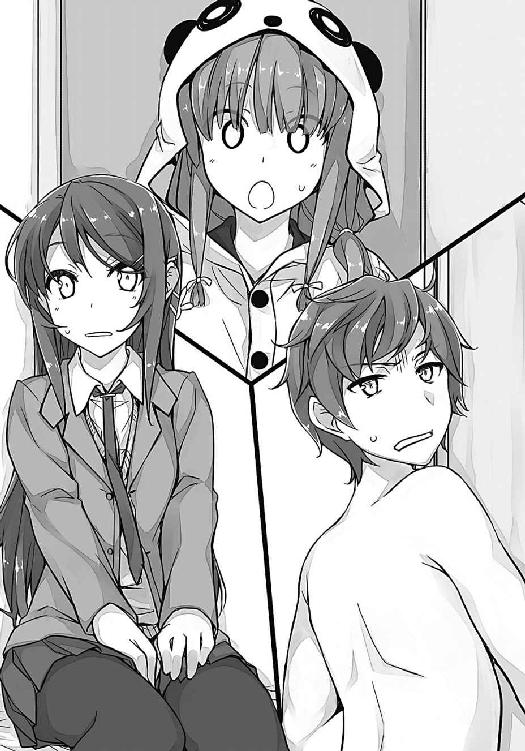
三つの沈黙。三者の視線が一瞬で絡んだ。猫のなすのだけは無邪気に咲太の足元にじゃれついている。
最初に行動に出たのは、かえでだった。
「ご、ごめんなさい！」
謝りながら、一旦部屋を出る。でも、すぐに再びドアの隙間から中の様子を窺ってきた。何度か咲太と麻衣を見比べたあとで、咲太に対して、「こっちこっち」と手招きをしてくる。
「なんだ？」
なすのを抱き上げつつ、かえでに応じる。ドア口に立つと、背伸びをしたかえでが、両手で口元を隠しながら耳打ちをしてきた。
「デ、デリバリーな玄人のお姉さんを呼ぶなら、先に言っておいてください！」
「かえで、お前は壮大な勘違いをしてるぞ」
「デリヘル嬢と制服プレイにご満悦という状況以外に、何があるんですか！」
「一体、どこでそんな言葉を覚えたんだか」
「一ヵ月くらい前に読んだ小説に、そういうお仕事のお姉さんが出てきたんです。哀れな男性を天国へ導く素敵なお姉さんだって」
「ま、解釈は人それぞれでいいけどさ。普通、この状況を見たら、兄が彼女を家に連れてきたんだという発想になるんじゃないか？」
その方がよっぽど自然だと思うだのが......。
「そんな最悪の事態は想像したくないです」
「最悪って、妹よ」
「最悪は最悪です。地球が滅びるくらい最悪です」
「よし、ならば僕は地球を滅ぼす覚悟で、彼女を作るぞ！」
「ねえ、そろそろ話を進めてもいい？」
麻衣に声をかけられ、部屋の中へと向き直る。その際、かえでが背中にくっついてきた。咲太の右肩に両手を添えて、咲太の背中に身を隠しながら麻衣をちらちらと見ている。ただ、背が高いせいか、あまり上手に隠れられてはいない。麻衣から見たら、結構はみ出しているんじゃないだろうか。
「お兄ちゃん、壺を買わされていませんか？」
「ないな」
「絵画を見に行く約束はしてませんか？」
「してないよ」
「英会話の教材を......」
「勧められていないから安心しろ。デート商法に引っかかっているわけじゃない。この人は、学校の先輩だ」
「桜島麻衣です。はじめまして」
麻衣に声をかけられたかえでは、肉食獣から逃げる小動物のような俊敏さで咲太の陰に身を引っ込めた。そして、背中に口を付けると、震動で何か伝えてくる。
「えと、『はじめまして、梓川かえでです』だ、そうです」
「そう」
「『この子は、なすのです』だ、そうです」
抱き上げた猫を麻衣によく見せる。「にゃ～」と鳴いたなすのの胴は、だら～んと伸び切っていた。
「教えてくれてありがと」
麻衣の声に反応して、一瞬だけかえでが顔を出す。けれど、咲太の腕の中から、なすのを奪うと、すぐに脱莵のごとく部屋から逃げ出してしまった。ばたんとドアが閉まる。
咲太の前では、色々としゃべってくれるのに、他人に対してはいつもこうだ。以前、佑真が遊びに来たときにも、咲太を間に挟まないと会話が成立しなかった。
「すいません。極度の人見知りなので許してください」
「気にしてない。あとで妹さんにもそう伝えておいて。傷はちゃんと治ったみたいでよかったわね」
不思議なことに、傷跡も綺麗に消えている。それは本当によかったと思う。女の子なんだし。それなのに、どうして咲太の傷は消えないのか、その点についての疑問は残っているのだが......それは、今考えることではないので、咲太は麻衣に集中することにした。
麻衣は後ろに寄りかかるように手を突いて、足を組み直している。
「でも、私のこと知らないなんて珍しい子ね」
「それは......あんまＴＶ見ないから」
「ふ～ん」
納得したようなしていないようなどっちつかずの表情。
「で、話を戻しますけど......麻衣さん、帰りがけに言ってた『誰も私のことを知らない世界に行きたい』っていうのは、どこまでが本心？」
「百パーセント」
「ほんとに？」
「......のときもあれば、クリームパンを食べられないんだとすると、それはそれで考えものよねって、今みたいに思うときもある」
麻衣は鞄からクリームパンを出すと、両手で持って小さくかぶりついた。
「真面目に聞いてるんですけど」
「......」
もぐもぐと麻衣が咀嚼している。
十秒ほど待って、きちんと飲み込んでから、
「真面目に答えたわよ」
と言ってきた。
「そのとき次第で、気分なんて変わるでしょ？」
「ま、そうだけど」
「じゃ、私から質問。なんでそんなこと聞くの？」
咲太の目は自然とドアを映していた。見ていたのはすでにいなくなったかえでの姿。
「かえでの場合、ネット環境から距離を置くことで、一応、事態は収まりました」
ＳＮＳのコミュニティも見ない。掲示板も閲覧しない。グループメッセージのやり取りもしない。かえでのスマホは解約して、咲太は海に投げ捨てた。パソコンだってこの家にはない。
「『一応』ね」
「診察してくれた医者は、『お腹が痛いと思っていたら、本当に痛くなった』というやつと同じなんじゃないかって言ってました。あくまで、傷自体はかえでが自分でつけたものだと決めつけてましたけどね......」
その医者の話を全部受け入れたわけではないが、説明に関しては、納得できる部分もあった。友達からの悪口が辛くて、心がずたずたに引き裂かれて、それが肉体に傷として現れた。側でかえでを見ていてそうとしか思えなかったし、精神状態が体調に影響を及ぼすという感覚は理解できる。嫌だと思うことがあれば、体は元気ではいられない。嫌いな食べ物を見ただけで吐きそうになったり、プールの授業が嫌で熱を出したり......その程度の経験は誰にだってあるだろう。
だから、事態の程度こそ全然違っても、『お腹が痛いと思ったらうんぬん』の話は、咲太の耳には的を射ているように聞こえたのだ。
「それで？」
「要するに傷ができる理由は、かえでの思い込みだったって解釈なんです」
「それはわかった。で、それが私の場合にも当てはまるって言いたいわけ？」
「だって、麻衣さん、学校では見事に『空気』を演じてるじゃないですか」
「......」
麻衣の表情は変わらない。咲太の指摘にわずかな興味を覗かせながらも、瞳の奥で、「それで？」とだけ語り、咲太を素っ気無く促してくる。こんな芸当、普通の人間にはできない。
「ま、だから、これ以上状況を悪化させないように、麻衣さんは芸能界に戻るのがいいと思うっていう話です」
咲太はあっさり視線を逸らして、あえて軽い調子でそう告げた。妙な駆け引きに付き合う必要はない。同じ土俵で戦っても勝ち目はないのだ。
「なによ、それ」
「ＴＶで目立ちまくれば、いくら麻衣さんが上手に空気を演じても、周囲が放っておかなくなるでしょ。活動休止する前みたいに」
「ふ～ん」
「それに、麻衣さん的にもやりたいことができて万々歳だろうし」
ちらりと様子を確認しながら、咲太は最後の言葉を口にした。
「......」
ぴくりと麻衣の眉が動いた。よく見ていなければ気づかない程度のごくわずかな変化。
「なによ、私のやりたいことって」
口調はあくまでさばさばしている。
「芸能界に戻ること」
「いつ、私がそんなこと言った？」
はあ、とため息を吐いて呆れたという態度を取る。でも、それは演技だと咲太は思った。
「興味がないなら、どうして電車の中で、映画の吊り広告を恨めしそうに見てたんですか？」
すかさず咲太は鋭く切り込んだ。
「あれは好きな小説の映画化だったから、少し気になっただけよ」
「ヒロインは自分が演じたかったってことではなくて？」
「しつこいわよ、咲太君」
余裕の笑み。麻衣の仮面は剝がれない。
それでも、諦めずに咲太は続けた。
「したいことはすればいいと僕は思う。その実力もあって、実績もあるんだし。その上、復帰を望んでいるマネージャーさんもいるなら何の問題もないでしょ」
「......あの人は関係ない」
静かな声。けれど、底から込み上げる地鳴りのような感情に言葉は支配されている。その証拠に、麻衣は眉を吊り上げて睨んできた。
「余計な口出しをしないで」
どうやら、地雷を踏んだらしい。
「......」
無言で麻衣が立ち上がる。
「あ、トイレなら、出て右です」
「帰るのよ！」
鞄を引っ摑むと、麻衣は勢いよくドアを開ける。
「きゃっ」
悲鳴を上げたのは、お盆にお茶を載せたかえでだ。丁度、ドアの前に来ていたらしい。さっきまではパジャマだったのに、今は白のブラウスと吊りスカートに着替えていた。
「あ、あの、あの......お茶を」
すごい剣幕の麻衣に、かえでは完全に怯えきっている。
「ありがと」
麻衣は一瞬で笑顔を作ると、お礼を言ってグラスを摑んだ。そして、一気に飲み干す。
「ごちそうさま」
丁寧な手つきで、かえでが持つお盆に麻衣はグラスを戻した。玄関に足が向く。
咲太は慌てて部屋を飛び出し、麻衣を追いかけた。
「あ、待って、麻衣さん！」
「なによ！」
麻衣は靴を履いているところだった。
「これ」
バニーの衣装が入った紙袋を持ち上げて見せる。
「あげる！」
「じゃあ、せめて送って......」
行きます、と続ける前に、
「近いからいい！」
と剝き出しの苛立ちがぶつかってきた。麻衣は玄関から飛び出していく。
追いかけようとしたが、
「お兄ちゃん、逮捕されます！」
と、かえでにパンツ一丁であることを指摘され、さすがに諦めるしかなかった。
廊下に残されたのは咲太とかえで。
「......」
「......」
数秒立ち尽くしたあとで、ふたりの視線はなんとなく紙袋の中へと落ちた。
バニーガールの衣装が一揃い。
「それ、どうするんですか？」
「そうだな......」
耳のパーツを取り出して、とりあえず、お盆で両手がふさがって抵抗できないかえでの頭にかぶせた。
「か、かえでは着ません！」
残ったお茶を零さないように、慎重な足取りでかえでがリビングに逃げていく。
無理強いはよくないので、かえでに着せるのは一旦諦めた。いつかウサギさんプレイに興じる日が来ることを信じて、部屋のクローゼットにしまっておく。
「これでよし」
よくないのは麻衣の方だ。完全に怒らせてしまった。
「明日、ちゃんと謝らないとな」
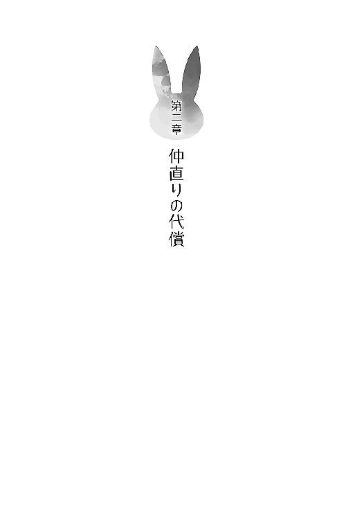
１
結論から言うと、麻衣を怒らせた翌日に、咲太は謝ることができなかった。
朝は電車が一緒になる偶然に期待したのだが見事に空振り。それならばと思って、一時間目が終わった直後の短い休み時間に、麻衣のいる三年一組の教室を訪ねてみたのだが、姿はどこにも見当たらなかった。
ドア付近にいた三年生の女子に声をかけたところ、
「桜島さん？ さあ、今日来てたっけ？」
と、若干迷惑そうな顔をされた。「で、昨日なんだけどさ」と、さっさと友達との会話に戻ってしまう。
「......」
麻衣がいない教室内は、ふざけ合う男子の先輩たちのバカ笑いや、きゃっきゃと談笑する女子の先輩たちの楽しげな声で満たされていた。休み時間の空気は、二年生だろうが、三年生だろうが、そう変わるものではない。この中に、ぽつんといる麻衣の姿を想像すると、なんだか胸の辺りがもやもやとした。
「席、どこですか？」
「え？ ああ、あそこ」
女子の先輩が指差したのは、窓側から二列目の一番後ろ。ぽつんと置かれた机に、鞄があるのを確認して、咲太は自分の教室に戻ることにした。
その後も、休み時間のたびに三年の教室に足を運んだが、麻衣はいなかった。相変わらず鞄は置いてあるし、次の授業の教科書が机の上に出されていたので、学校に来ていることは間違いないと思う。けれど、すべて無駄足に終わった。
こうなると最後の望みは下校時間。ＨＲの終了と同時に、咲太は足早に昇降口へと向かった。周囲を見回して、麻衣を捜す。二十分ほどそうしていた。
見つからないとわかると、校門を出て駅までの道を当たった。やはりいない。七里ヶ浜駅のホームにも、麻衣の姿は見当たらなかった。
結局、この日は仲直りどころか、会うことすらできなかったのだ。
そして、そんなことが三日も続くと、意識的に避けられているのだとバカでも気が付く。
困ったことに、麻衣の徹底した態度はその後も緩むことなく続いた。
それから、あれよあれよと二週間。今も咲太は見事に避けられている。
昨日の帰りは、思い切って駅で待ち伏せをしたのだが、それも実を結ばなかった。麻衣はひとつ隣の駅まで歩いて電車に乗ったらしく、一時間以上待っても姿を現さなかったのだ。
とにかく手強い。
これが芸能活動の中で身に付けた取材カメラの回避テクニックなのだろうか。時々、霧のように消えてすらいる。
「どうやら、僕はとんでもないサイズの地雷を踏んだらしいな」
麻衣の頑なな態度から、咲太は日に日にその想いを強くしていた。
怒らせた原因は、芸能界への復帰を促したこと。直接的な引き金になったのは、恐らく『マネージャー』という単語だ。
その辺が、芸能活動を休止したことや、復帰したいという気持ちがありながらも、麻衣が復帰を躊躇っている理由なのではないだろうか。
学校のパソコンを使って調べてみたが、『桜島麻衣』が活動休止を決めた理由に関しては、「過労じゃね？」とか、「やっぱ、プロデューサーとなんかあったんだろ」とか、「どうせ男でしょ」とか、勝手な憶測や噂話くらいしか見つからなかった。
こうなると本人に直接聞くほかないのだが、その本人が咲太を完璧に避けている。これではどうしようもない。
その日の放課後、むやみに追跡してもダメだと悟った咲太は、少し気分を変えることにした。掃除当番を終わらせてから、物理実験室に足を伸ばす。
もうひとりの友達に会うためだ。
ドアを軽くノックしてから、返事を待たずにスライドさせる。
「邪魔するぞー」
中に入ってドアを閉めると、
「邪魔だから出て行け」
と、遠慮のない言葉が飛んできた。
広い物理実験室の中にいた生徒はひとりだけ。教師が授業をする際に使う黒板前の机にアルコールランプとビーカーを用意している。入ってきた咲太を見ようともしない。
身長は約１５５センチと小柄。眼鏡をかけた女子生徒。制服の上からまとった白衣がやたらと目を引く。背筋の伸びた佇まいは、なんだかかっこいい。
名前は双葉理央。県立峰ヶ原高等学校の二年生。去年は咲太、佑真と同じクラスだった女子生徒。部員たったひとりの科学部に所属。部活の実験中に学校の一部を停電させたとか、ボヤ騒ぎを起こしたとかで、変人として知られた存在。常に白衣を着ているのも、変に目立つ理由となっている。
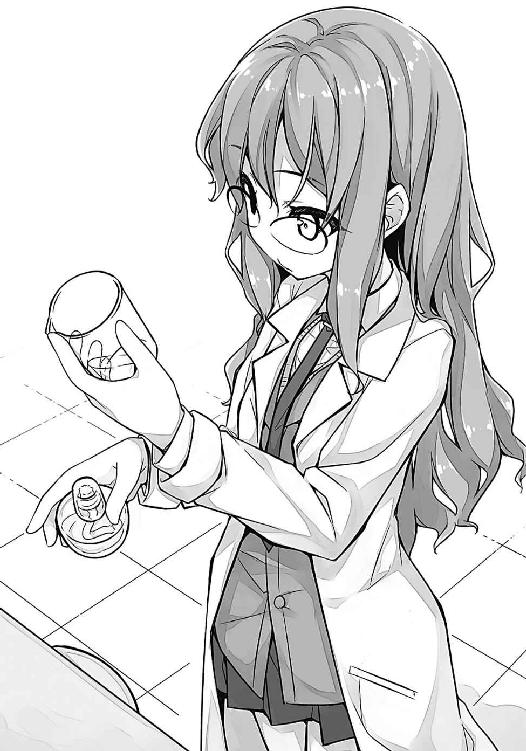
咲太は近くの椅子を持ってくると、机を挟んで理央の真向かいに座った。
「最近、どうだ？」
「梓川に報告するようなことは何もないよ」
「なんか楽しい話を聞かせてくれよ」
「ヒマを持て余した高校生のような会話に私を巻き込むな」
視線を上げた理央が咲太を睨んでくる。本当に邪魔だと思われているのかもしれない。
「実際、ヒマを持て余した高校生なんだし、らしくていいだろ」
なおも世間話を続けようとする咲太を無視して、理央はアルコールランプにマッチで火をつけた。水を入れたビーカーの下にセットする。何かの実験をする気だろうか。
「最近、梓川の方こそどうなんだ？」
「どうって、特に報告することはないな」
「噓言え。人気子役にご執心らしいじゃない」
誰のことを言っているのかは考えるまでもない。人気子役とは麻衣のことだ。
「あの人は、とっくの昔に子役を卒業して、役者とか俳優とか女優だろ」
活動休止中の今は、一般人と呼ぶべきなのかもしれないが。
「だいたい、その話、誰に聞いたんだ？」
「愚問だね」
「ま、国見しかいないな」
咲太の事情を知っているのは佑真だけ。学校内で常に白衣を着ている変わり者として浮いている理央に話しかけるのも、やっぱり佑真と咲太くらいだ。以上、証明終了。
「心配してたよ。梓川がまた妙なことに首を突っ込んでるんじゃないかって」
「またってなんだ」
「ろくでもない梓川の心配をするなんて......どうして、国見はあんなにさわやかでいいやつなんだろうね」
「そのメカニズムがわかったらぜひ教えてくれ」
性格がいいとは、佑真のためにある言葉だと思う。心底そう思う。
去年、『病院送り』の噂が校内に流れたときも、佑真だけは咲太への態度を変えなかった。噂を鵜吞みにするのではなくて、体育の時間にペアを組んだ際に、「あの噂ってまじ？」と、面と向かって尋ねてきた。
「まじなわけがない」
「だよな」
からっと佑真は笑っていた。
「......国見は、僕の言い分を信じるのか？」
はっきり言って意外だった。殆どのクラスメイトが噂の方を信じ、咲太に確認する前に距離を置いていたから。
「だって、違うんだろ？」
「そうだけどさ」
「なら、誰が言い出しかわかんない噂より、目の前にいる梓川の話を信じるよ」
「国見って最悪だな」
「は？ 今の流れでどうしてそうなるんだよ」
「性格までイケメンとか、もはや、全男子の敵だ」
「なんだそりゃ」
それが、今から一年ほど前の出来事。以来、佑真とはよく話をするようになっていった。
ぼんやりとアルコールランプの火を見つめていると、
「まったく世の中は不公平だね」
と、なにやら失礼な視線が突き刺さってきた。
「人はこんなにも違う」
明らかに、理央は憐みの目で咲太を見ている。
「僕を国見との比較対象物にするのはやめろ」
「他意しかないよ。気にしないで」
「それ、気になるだろ。ま、でも、ああいうやつに限って、人には言えない変態趣味を隠し持ってたりするんだよ。そうやって、世界は『さわやか度』のバランスを取ってるはずだ」
「梓川は今日も底辺だな」
ふう、と理央がため息を落とす。
「どこが？」
「心配してくれている友人を、陰で変態呼ばわりするようなところ」
反論の余地がない見事な指摘だ。
「......僕は今、国見との差を思い知らされた気がするよ」
「それはそうと」
理央がわざとらしく前置きをする。
「なんだよ？」
ビーカーの水がぶくぶくと沸騰しはじめていた。
「牧之原のことは吹っ切れたんだ」
「......国見といい、なんでそこに結び付ける」
「梓川が一番よくわかってるんじゃないの？」
理央はアルコールランプの火を消すと、ビーカーのお湯をマグカップに移した。そこへ、インスタントコーヒーの粉をひと匙落とす。どうやら、実験ではなかったらしい。
「僕にもくれ」
「あいにく、マグカップはひとつしかない。まあ、このメスシリンダーでいいか」
長さ約三十センチ。細長い円筒状のガラス器機を理央が平然と差し出してくる。
「こんなものでコーヒーを飲もうとしたら、中身が一気に流れてきてえらいことになるだろ」
「梓川の仮説が正しいかどうか、実験で検証する必要がある。それに、他に目ぼしい代用品もない」
「お湯を沸かしたビーカーをそのまま使うっていう発想はないのか」
「当たり前すぎて面白くない」
文句を言いながらも、理央はビーカーの残ったお湯に、インスタントコーヒーの粉を入れてくれた。
「双葉、砂糖は？」
「私は入れない」
引き出しから理央がプラスチックボトルを出して、どんと咲太の前に置く。ラベルには二酸化マンガンと書いてある。
「大丈夫だろうな、これ......」
「中身はたぶん砂糖だよ。白いし」
「白い粉なんて他にも無数にあることくらい、僕だって知ってるぞ」
とりあえず、二酸化マンガンが黒いことも知っている。
「一応、少量ずつ試した方がいい」
理央のリアルな忠告は無視して、咲太はブラックでいただくことにした。
それを見て、なんとも残念そうな顔をした理央は、再びアルコールランプに火をつけていた。今度こそ実験をするのかと思いきや、金網をセットして、スルメを炙りはじめた。スルメの足がくた～と曲がっていく。
「僕にもくれ」
コーヒーに合うとも思えなかったがにおいを嗅いでいたら食べたくなった。
足を一本だけちぎって理央が分けてくれる。
それをかじりながら、咲太は本題を切り出すことにした。
「あのさ、人が見えなくなることってあると思うか？」
「視力が心配なら眼科に行けば？」
「いや、そういう問題じゃなくて......そこにいるのに見えないっていうか。透明人間になる的な」
麻衣の場合、見えない相手には声も届かないという症状も出ているので、実際は少し違うのだが......まずは初歩的なところから聞いておきたい。
「で、女子トイレに忍び込むわけ？」
「スカトロ趣味はないから、更衣室にしとくよ」
「さすが梓川、ブタ野郎だね」
理央の手が鞄に伸びる。ポケットに突き刺さっていたスマホを摑んでいた。
「どこに電話する気だよ？」
「警察」
「事件が起こるまで警察は何もしてくれないぞ」
「それもそっか」
理央がスマホを鞄に戻した。
「さっきの質問だけど、物が見える仕組みについてなら、物理の教科書に書いてあるよ。光とレンズの勉強をすればいい」
どんと、理央が咲太の前に物理の本を置いた。
「それが面倒だから、双葉に聞いてるんだよ」
出された本を、咲太は丁重に返却した。
それを気にせずに、理央はスルメをかじっている。
「重要なのは光。対象物に光が当たって、そこから反射してきた光が目に入ることで、人はそのものの色や形を認識してる。光の当たらない暗闇では物は見えない」
「反射ねぇ」
「ぴんと来てないなら、音に置き換えて考えてみれば？ イルカの超音波の話くらいは聞いたことあるでしょ」
「何かに反射して戻ってきた超音波を聞いて、障害物との距離を測るっていう？」
「そう。実際には姿かたちもわかっているらしい。船のソナーも同じ。光だとイメージしにくいのは、そもそも眩しいと感じるくらいの光じゃないと、光が目に入っているっていう実感がないからかもね」
「ふ～ん」
「つまり、光を反射しない透明なガラスなんかは見えにくい」
「あ～、確かに」
ならば、麻衣の体には光が当たっていないとでもいうのだろうか。活動休止中の芸能人だけに、なんだかその表現は皮肉めいていて笑えない。
もしくは、無色透明なガラスのように、麻衣が光を反射していない......という考え方でもいいのかもしれないが、それでも説明がつかないことはまだまだたくさんある。
声のこともそうだし、見える人がいたり、見えない人がいたりする。状況はもっとややこしいのだ。
「今の話は、なんとなくわかった」
「本当に？」
疑いの眼差し。
「双葉って、僕をバカだと思ってるだろ」
「いいや」
「超バカだと思ってるのか？」
「私の言いたいことに察しがついているくせに、わざわざそういうことを聞いてくるウザいやつだとは思ってる」
「ウザいってお前ね」
「空気を読めてるくせに、あえて読めてないふりができる嫌なやつだとも思ってる」
「僕が悪かった。これ以上抉るのはやめてくれ」
「そうやって上手に逃げるとこなんて、まさにね」
ずずっと無感動に理央がコーヒーを飲む。
これは早々に話題をもとに戻した方がよさそうだ。
「えっと、じゃあ、今度は条件を限定して聞くが、こうして双葉の前に座っている僕が、双葉から見えなくなるというのは可能か？」
「私が目を閉じればいい」
「目を開けたままで、真っ直ぐ僕を見てだよ」
「可能だよ」
理央の返答は想像とまったく逆で、しかもあっさりしたものだった。
「私が何かに没頭するか、ぼ～っとすればいい。梓川のことなんか気にならなくなる」
「いや、そういうのとはちょっと違くてだな」
「まあ、最後まで聞きなよ。光とは別の観点の話で......『見える』ということに関しては、物理現象よりも人間の脳の働きが強い影響を及ぼすこともある」
コーヒーがなくなったのか、理央が別のビーカーに水を入れて、アルコールランプの上に置いた。
「たとえば、梓川から見て私は小さいんだけろうけど、小学生から見れば大きいと言われるはずだよ」
「いや、双葉は大きいだろ。いつも白衣着てガード固いけど、その上からでもそれはわかるぞ」
視線は理央の膨らんだ胸元へ注がれる。
「む、胸のことは言うな」
理央が女の子みたいに、両手で胸を隠す。
「あー、すまん。気にしてたのか」
「梓川の中には、デリカシーや羞恥心という概念はないらしいな」
「その辺に落としてきたのかも」
キョロキョロと周囲を見回す。
「真面目に聞く気がないなら帰れ。講義は終わりだ」
理央が席を立つ。
「悪い。真面目に聞く。胸も見ない」
「だから、胸の話をするな」
実際、見ないと言って本当に見ない自信はない。視線がそこへ吸い込まれるのはもはや無意識なので、遺伝子レベルの修正を施さない限り、実現するのは難しいだろう。
コーヒーに口を付けてお茶を濁す。
「つまり、見えるものについては、主観が入るってことだよな？」
「そう。見たくもないものは見ようともしない。そんな芸当も、人間の脳にはできる」
見て見ぬふりをするなんて言葉もあるくらいだ。眼中にない。気にも留めていなかった。意識してない。言い方は色々あって、納得できる部分は多々ある。
ただ、先ほどからの理央の話は、咲太がなんとなく思い描いていた麻衣の状況を、真っ向から否定するものでもあった。
乱暴に言えば、咲太は麻衣が『空気』を演じることで、周囲から見えなくなっているんじゃないかと考えていた。麻衣に原因があると思っていた。
けれど、理央の言葉は、全部見る側の観点で語られている。つまり、見られる側の思い込みとか、立場は関係ないという理論。
「観測理論というものもある」
咲太の考えがまとまる前に、理央が次のボールを投げてきた。
「かんそくりろん？」
知らない言葉をそのまま繰り返す。
「極端な言い方をすれば、この世に存在するものは、『誰かが観測してはじめて存在が確定する』......という、普通に聞くと、とんでもない理論だよ」
特に何の感情もなく淡々と理央が語る。
「箱の中の猫の話くらい、聞いたことがあるでしょ。シュレーディンガーの猫」
「あ～、名前だけは」
理央は机の下から空っぽの段ボール箱を用意すると、それを咲太の目の前に置いた。
「この中に猫と」
そう言いながら、理央がまず招き猫の貯金箱を段ボール箱に入れる。物理教師が五百円玉貯金に使っているやつだが、随分軽そうだ。
「さらに、一時間に一度の確率で放射線を発する放射性原子と......」
続けて、お湯を沸かしていたビーカーを理央が投入する。
「その放射線を感知して蓋が開く毒ガス入りの容器を一緒に入れておく。蓋が開けば、毒ガスを吸って猫は確実に死ぬと思っておいて」
最後に、二酸化マンガンのプラスチックボトルが段ボール箱の中に収められた。
「これで蓋をして三十分待つ」
そう言いながら、理央が段ボール箱の蓋を閉じた。
「さて、ここに三十分待った箱を用意した」
「料理番組か」
咲太のツッコミは無視して理央が続ける。
「箱の中の猫はどうなってると思う？」
「え～と、一時間に一度の確率で、放射性原子は放射線を出すんだよな？ で、その放射線を感知して、毒ガス入りの容器の蓋が開くんだろ？」
無言で理央が頷く。
「そんでもって、三十分ってことは半分だから......二分の一の確率だよな？」
「驚いた。話を理解してたんだ」
「この程度がわからなかったら、僕は相当のバカか、話を聞いていなかったかのどっちかだ」
「では、猫は生きているか死んでいるか」
「だから、五分五分だろ？ 調べたきゃ、箱を揺すればいい」
「箱は鋼鉄製で動かないように固定されている」
目の前にあるのは段ボール箱だ。
「じゃあ、生きていることを信じるよ」
「梓川がどちらに山を張ろうと、この場合、どっちもいいんだけどね」
「なら、聞くなよ」
「今の猫の状態を『確定』するには見るしかない」
「随分、普通のやり方だな」
理央が段ボール箱の蓋を開ける。当然、招き猫の貯金箱とビーカー、それと二酸化マンガンのプラスチックボトルが中にはあった。
「箱を開けた瞬間に、猫の生死は確定する。つまり、箱を開けて確認するまでは、半分生きてて、半分死んでることになる。量子力学の世界ではね」
「なんだ、その理屈。たとえば、蓋をして十分後に死んでたとするだろ？ だったら、残り二十分を待って蓋を開けるまでもなく、猫は死んでるんじゃないのか」
少なくとも猫にとっては、そこで人生終了。いや、この場合は猫生だが......どの道、結果は同じだ。
「だから、最初にとんでもない理論だって言ったでしょ。ま、量子力学の解釈は置いておくとしても、考え方自体は真理を突いていると私は思うけどね」
「真理ね～」
どうにも胡散臭い。
「人間は見たいようにしか世の中を見ていない。梓川の噂がいい例だよ。真実よりも、噂が優先される。梓川は箱の中の猫で、その他全校生徒が観測者であるとすれば、現実に置き換えて考えることもできるんじゃないの？」
箱の中の事情よりも、あとからそれを見た人間の主観が優先される......と理央は言いたいらしい。当事者である咲太の視点など関係なく、見る側の観点で咲太の印象が決まってしまう。
「笑えないな、それ......」
ただ、麻衣の事例と合わせて考えるのは、なかなか難しかった。咲太には見えて、他の人には見えない状況があったり、どういう条件で『見えなくなる』ことが起きているのかわかっていない。
面白い話は聞けたが、まだピースがはまらない感じ。
そもそも思春期症候群なんて眉唾物の現象を、物理的な解釈で説明できるのかも不明だ。何か手がかりになりそうな部分はあったけど、理央に相談したことで、余計に状況が難しく思えてきていた。
麻衣に起きていることは、麻衣が芸能界に復帰するだけでは解決しないかもしれない。そんな嫌な気分が、咲太の胸には落ちている。理央の話は終始、見る側の立場で語られていたから......。麻衣の意識が変わるだけでは、どうにもならないかもしれないのだ。
「補足になるけど、観測することで結果が変わるっていう事例は、実際に物理の世界にはあるんだよ」
「まじ？」
「二重スリットの実験っていうのがあって......すごく単純に結論だけを言えば、実験の途中経過を観測した場合と、最終結果だけを確認した場合で、現れる結果が変わってくるって例なんだけどね」
「それは、つまりだ......サッカー日本代表の試合があったときに、結果だけをスポーツニュースで見たときは勝ってるのに、僕が試合を見るときに限って負けるって話でいいのか？」
「私が言ったのは、あくまで粒子の世界......ミクロの世界での話。観測するまで、粒子の位置は確率的に存在していることになっていて、物質ではなく、波の形をしているわけ。観測することで、物質という姿に収縮するんだってさ」
「でも、そのミクロが集まって、人とか物になってるんだろ？」
分子とか原子とか、電子とか、色々なもので人や物が構成されていることくらいは咲太だって知っている。
「今言った話がマクロの世界で起こるなら、梓川の解釈でもいいよ。あと、今後、日本代表のために、梓川はサッカーの観戦はしない方がいい。二度と見るな」
理央からありがたい忠告を受けていると、
──二年二組の国見君。バスケ部顧問の佐野先生がお呼びです。職員室まで来てください
という、校内放送が流れた。
「......あいつ、なんかやったのか？」
「梓川じゃないんだ。どうせ、部活の練習メニューの確認とかでしょ」
興味などなさそうだけど、理央が佑真の肩を持つ。
スピーカーに目を向けたついでに、時刻を確認した。三時を少し回っている。
「あ、バイトあるから帰るな」
「勝手に帰れ」
「色々サンキュ。コーヒーもご馳走様」
「礼なら顧問の物理教師に言って。これ、私のじゃないから」
理央はインスタントコーヒーの瓶を持って、蓋に書かれた名前を見せてきた。
「ま、少し減ったくらいばれないだろ」
そう言って席を立つと、鞄を肩にかけながら歩き出した。
ドアに触れたところで、ふと思い出したことがあって咲太は後ろを見た。理央はいよいよ真面目に実験をするつもりらしく、ガスバーナーの火を調整している。
「双葉」
「ん？」
声だけが返ってきた。視線は青白い炎に注がれたままだ。
「国見のこと、大丈夫か？」
「......」
揺れる瞳で理央が咲太を見つめてくる。
すぐに、
「だい......」
と、何か言いかけて言葉を詰まらせた。恐らく、大丈夫と言おうとして失敗したのだ。声は上擦り、いつも通りを意識した理央の表情は強張っていた。
「もう慣れたよ」
大丈夫は諦めて、理央は力のない顔で微笑んだ。
咲太にはどうすることもできない。理央の叶わぬ片想いを側で見ていることしかできない。
「バイト、遅れるよ」
さっさと行けとあごで合図する。それに見送られて、咲太は物理実験室を出た。
後ろ手にドアを閉めたところで、
「慣れたって......それ、全然諦めついてないだろ」
と、無意識に呟いていた。
２
「梓川君、ディナーで忙しくなる前に、休憩入って～」
「はい」
ファミレスの店長にそう言われ、咲太が男子更衣室にもなっている休憩スペースに顔を出すと、丁度着替えの終わった佑真がロッカーの陰から出てきた。部活のあとなのに、疲れた様子はまるでない。
その佑真の目が咲太に気づいた。
「よっ」
「おう」
さわやかな笑顔でエプロンの紐を結ぶ佑真に、咲太は無愛想に応じた。
「咲太は休憩？」
「じゃなきゃ、ホールにいる」
「だよな......よし」
びしっとエプロンが結べたらしい。鏡の前で身だしなみのチェックをしている。
「あ、そだ。咲太」
何か思い出したように、佑真が再び話しかけてくる。
「ん？」
パイプ椅子に座って、テーブルの上に置かれたポットからお茶を注ぐ。それをずずっとすすった。
「お前、俺に隠してることあるだろ」
「なんだその言い方。国見は僕の彼女か」
一瞬、ドキッとしたのは、理央の片想いのことかと疑ったからだ。でも、佑真の口から出たのは別の名前だった。
「冗談じゃなくて、上里のこと」
「あー」
ほっとしながら、視線を逸らす。あれはあれで、あまり触れられたくはない。けれど、二週間前に咲太が上里沙希から屋上に呼び出されたことを、佑真は知っている様子だった。
恐らく、本人の口から聞いたのだろう。こうなっては逃げようがない。
「国見の彼女、すごいな」
「だろ？ 自慢の彼女」
「お前としゃべるなって言われたぞ」
「独占欲が強くてさ。俺、めちゃくちゃ愛されてるんだよ」
「僕が国見といると国見の株が落ちるらしい。今、お前、いくらだ？」
「なんつーか、すまん！」
両手を合わせて、佑真が頭を下げる。
「お前もすごいよな」
「なにがよ？」
「こんだけ誘導してんのに、一言も彼女の悪口言わないとかさ」
「そりゃあ、好きで付き合ってるんだし。ちょっと思い込みが激しいとこあるけど、真っ直ぐでいい子だよ」
ちょっと真っ直ぐすぎる気もするが......。
「なんだその旦那にＤＶ受けてる嫁のような発言は」
「『彼、時々やさしいの』ってか？ バカ言え」
「ま、僕のことは気にするな。上里に何を言われたところで痛くも痒くもない」
「それはそれで複雑だな」
困ったように佑真が笑う。
「それより、僕の方こそ悪かった」
「なんだよ、急に」
「彼女の悪口なんか聞かされて、気分いいはずないもんな」
「気にしてねーよ」
「それは上里に悪いだろ」
「あ、それもそっか」
屈託なく佑真が笑う。
「てか、いいんだよ、それは。それよか、咲太、今後も変な気を遣うなよ。俺を避けたらそれこそ怒るぞ」
「彼女とケンカになっても僕は責任取らないぞ」
「そんときゃそんときだし......なんとなく、怒りの矛先は咲太に行くような気がするから大丈夫だろ」
さらっと、面倒なことを言ってきた。
「おい、ちょっと待て、こら」
「痛くも痒くもないなら平気だろ？」
佑真が勝ち誇った笑みを浮かべる。
「さすが女子に、『生理か？』って言える男は違うな。咲太の心臓ってなに？ 鉄で出来てんの？」
けらけらと佑真が笑い声を上げる。
「あ、やべ、時間」
時計を見た佑真が慌ててタイムカードを通す。
「国見、入りまーす」
そのままホールの方へと出ていった。
でも、一分と経たずに休憩スペースへ戻ってくる。何か忘れ物だろうか。特に忘れるようなものもないはずだが......。
佑真の視線は迷うことなく咲太へと注がれていた。何か言いたいことがありそうだ。
「なに？」
「例の女子アナ、また来てるぞ」
隙のない佑真の表情。真剣さの中に、咲太を心配する穏やかな色が混ざっている。それが、咲太にとって歓迎すべき客ではないことを、雄弁に語っていた。
休憩時間を無視してホールに出た咲太は、真っ直ぐ奥のテーブルに向かった。四人掛けのボックス席に、二十代後半の女性がひとりで座っている。清潔感のある春らしい色合いの半袖ブラウスに膝下のスカート。派手さを抑えたナチュラルなメイク。どこか知的で、全体の雰囲気はアナウンサーっぽい。実際、本物のアナウンサーなのだが......。
「ご注文をお伺いします」
あくまで事務的に咲太は声をかけた。
「お久しぶり」
「どちら様でしたっけ？」
「なるほど、そう来るか。では、はじめまして私はこういうものです」
丁寧な手つきで、女性が名刺を差し出してくる。
ＴＶ局のロゴ。アナウンス部所属。中央には、『南条文香』と名前が印刷されている。
ああは言ったが、本当は面識がある。妹のいじめ事件のときに、『中学生のいじめ問題』という名目で、取材にやってきた文香と会っているのだ。それから、もう二年近い付き合いになる。
「今日は何の用ですか？」
「生シラスの取材で近くまで来たの。夕方からはオフだったので、会いに来ちゃった」
わざとらしくはしゃぐ文香を前にしても、咲太は表情を崩さなかった。文香の目的はわかっている。いじめの取材の中で、彼女は思春期症候群の存在を知り、興味を抱いたのだ。もちろん、そんな都市伝説を真っ向から信じているわけじゃない。半信半疑で懐疑的。でも、本当だったら大スクープになる可能性もあるので、諦めきれないと、以前に文香自身があっけらかんと語っていた。
「オフなら野球選手を誘ってデートでもしたらどうですか？ 女子アナらしく」
「魅力的な提案だけど、シーズン中の今、目ぼしい一軍の選手はお仕事中よ」
時刻は午後六時。プレイボールの時間だ。
「それに、デートだけならここでもできるしね」
意味深な視線を文香が咲太に向けてきた。
「僕はおばさんに興味ないんで」
「子供の咲太君には、わかんないかなぁ。この大人の魅力が」
頰杖を突いて、咲太の顔を下から覗き込んでくる。
「三ヵ月前に会ったときより、太ったのはわかります。二の腕、そろそろやばいですよ」
「......っ！」
ぴくっと眉が吊り上がった。少しむっとしたようだ。背もたれに体を預けて、
「かわいくないなあ」
と言ってきた。
「どうせならかっこよくなりたいんで......ご注文は？」
「咲太君をお持ち帰りで」
「頭がおかしいようなので、ご注文は救急車一台でよろしいですね」
淡々と言葉を返す。
「チーズケーキのドリンクセット。ホットコーヒーで」
メニューを見ずに注文してくる。ここに来るときは、文香は必ず同じものを頼むのだ。なんというか、この辺の行動は男っぽい。
「以上でよろしいですか？」
「事件のこと、まだ話す気になれない？」
鞄からスマホを出して、文香はメールのチェックをはじめる。
「一生なりません」
「胸の傷、一枚写真に撮らせてくれるだけでいいんだけど」
「嫌です」
「どうして？」
指でなぞって画面をスクロールさせている。
「じゃあ、南条さんの裸の写真も撮らせてくれますか？」
「うん、いいわよ」
「ここに痴女がいますよー」
「個人で使うだけにしてよ？ ネットに流出とかはさすがに会社クビになっちゃう」
相手にするのもバカらしくなって、咲太は返事をせずに立ち去ろうとした。
でも、二、三歩離れたところで、ふとあることを思いついてしまった。
「あの」
戻って文香に声をかける。
「ん？」
スマホを見ながらの上の空の返答。
「南条さんは、桜島麻衣を知ってますか？」
少し躊躇いつつもその名前を口にした。
「逆に、知らない人っているの？」
文香の視線はまだメールを確認中だ。
「彼女が、活動休止した理由......南条さんは知ってたりします？」
ワイドショーでアシスタントをしているし、芸能ニュース系の取材を文香が行っているのは知っている。
「......」
きょとんとした顔を文香は向けてきた。どうして、咲太が『桜島麻衣』のことを聞いてきたのか、疑問に思っているようだ。でも、それはすぐに別の感情に置き換わる。
咲太がそんなことを聞いてきたことに対する興味だ。
ただし、文香はそれを表情には出しても、あえて聞いてはこなかった。
「少なくとも、一般人が知らないようなことを私は知ってると思うわよ」
「そうですか」
「で？ これは子供としてのお願い？ それとも大人同士の対等な取り引き？」
「子供扱いはやめてください」
「そう。だったら、タダでは教えられないけどいいのね？」
「写真、一枚でいいのなら」
「ふふっ、交渉成立ね」
何かスイッチを切り替えるように、文香はいじっていたスマホを鞄に戻した。その文香の視線に促され、咲太は大人同士のテーブルに着いた。
九時までバイトに勤しんだ咲太は、途中コンビニに寄ってから帰路についた。人通りの少ない住宅街を通り、十分ほどとぼとぼと歩いて住んでいるマンションに到着する。
エレベーターで五階までノンストップで上がると、部屋のドア付近に、誰かがいることに気づいた。
壁を背に座り込んでいるのは、峰ヶ原高校の制服を着た麻衣だ。体育座り。それも、両膝と太ももはぴったりとくっつけて、膝下だけ開いた女の子体育座りだ。下のオートロックは、誰かをストーキングするなりして、中に入ったのだろう。
側まで行くと、恨めしそうに麻衣が見上げてきた。
「やっと帰ってきた」
「バイトだったんですよ」
「どこで？」
「駅前のファミレス」
「へ～」
「麻衣さん」
「なによ」
まずは「パン」と手を叩く。「ツー」とピースサインを続けて、「丸」っと頭の上に両手で円を作った。最後に、親指と人差し指をくっつけて眼鏡を作り、自分の顔に持っていく。もちろん「見え」という意味だ。
「それ、何の遊び？」
バカにしたような目。どうやら、黒のタイツ越しに、純白のパンツが見えていることに、まったく気づいていないようだ。無防備すぎる。
仕方がないので、
「パンツ丸見え」
と、はっきり指摘してあげた。
はっとなった麻衣が、自分の下半身を確認するように俯く。
「べ、別に年下の男の子に下着を見られるくらいなんでもない」
とか言いながら、股の間に腕を挟むようにして、スカートの真ん中をそれとなく下に引っ張っていた。あからさまに見えているより、むしろ、隠そうとしている姿の方がエロく感じるのはどうしてだろうか。
「顔真っ赤なのに？」
「そ、それは、興奮してるから！」
「うわっ、ここにも痴女がいた」
「誰が痴女よ！」
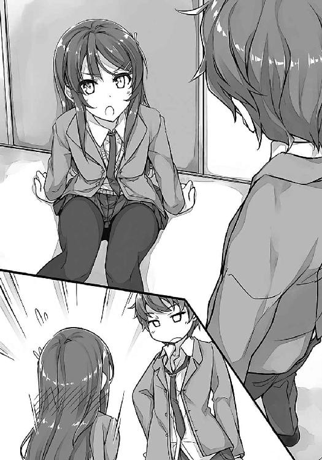
じっと、麻衣が睨んでくる。
「ま、とりあえず、立てばいいと思います」
そっと麻衣に手を差し出す。
触れそうなところまで伸びてきた麻衣の手だったが、まだ仲直りをしていないことでも思い出したのか、急に引っ込んだ。「ふんっ」と鼻を鳴らしながら、麻衣は自分で立ち上がる。
「なにを握ったかわからない男の子の手なんて、触りたくない」
勝ち誇ったような笑みを麻衣が浮かべる。なんだか楽しそうだ。でも、その優越感は長くは続かなかった。「ぐぅ」と腹の虫が鳴いたのだ。
「......」
「......」
「オナカヘッタナー」
棒読みでフォローしておく。
「性格悪い」
「まあまあ自覚してます」
咲太は帰りに寄ったコンビニの袋から、クリームパンを取り出した。
少し迷ったあとで、麻衣の手がゆっくりと伸びてくる。なんだか野良猫にエサでもあげている気分だ。
麻衣は包みを開けて、クリームパンにかぶりついた。
「いつから腹ペコキャラに転身したんですか」
「......」
無言での咀嚼が続く。
きちんと口の中身を飲み込んだあとで、
「買い物ができないの」
と、まるで咲太のせいだと責めるような口調で言ってきた。
「あー、そっか」
他人からは姿が見えないから、麻衣は会計を通ることができないのだ。前に駅の売店でパンを買おうとして、おばちゃんにスルーされる様子を目撃している。あれは、かわいそうになる光景だった。
「この二週間で、どんどん見えないところが多くなってきてる。藤沢駅の周辺はもう全然ダメ。ネットで買い物しようにも、受け取りができないんじゃ同じだし」
「じゃあ、上がっていきますか？」
咲太はポケットから鍵を取り出し、ドアを指差した。
「食べ物、恵んであげますよ」
「その言い方」
じっと麻衣が睨み付けてくる。残念ながら少しも怖くない。むしろ、かわいいくらいだった。
「では、ご馳走します」
「嫌よ。こんな時間に男の子の部屋に上がったら、何をされてもいいって言ってるようなものじゃない」
「なるほど、それが麻衣さんのオッケーサインか。覚えておこう」
「忘れなさい」
麻衣が頭にチョップを落としてきた。
「あだっ」
「バカ言ってないで、いいから買い物に付き合って」
「あ、なら少し待ってください。妹に帰ったこと伝えてくるんで」
「わかった。下で待ってる」
鍵を差し込んだ咲太に背を向けて、麻衣はエレベーターの方へと歩き出していた。
咲太の帰りを待っていたかえでの説得に十五分。その後、十五分待たせた麻衣をなだめるのにまた十五分。移動時間十分を要して、ようやく咲太は麻衣と駅の近くにあるスーパーにやってくることができた。夜の十時をとっくに回っている。
十一時まで営業している店内には、まだそれなりの客足があった。若いスーツ姿の男性客がちらほらいる。ひとり暮らしで、仕事帰りに寄っているのだろうか。
咲太も日常的に利用しているスーパーだけど、この時間帯に来ることは滅多にない。だから、なんとなく新鮮な気持ちだった。
そして、それ以上に新鮮なのは、ひとりではないということ。一緒にいるのが、あの桜島麻衣であるということだ。
食材を選びながら少し前を麻衣が歩いている。後ろからカートを押してついていくのは、なんだかとても楽しい。自然と顔が緩む。
「この絵面は、完璧にカップルだよなぁ」
「なにか言った？」
両手ににんじんを持った麻衣が振り向く。
「いえ、なにも」
「大丈夫よ。どうせ周囲の人に私は見えてないから」
どうやら、本当は聞こえていたようだ。
「これからはじめてのお泊まりで、彼女が手料理を振る舞ってくれるシチュエーションだと思うんだけどなぁ」
「バカな妄想ばかりしてるとバカになるわよ」
呆れた様子で、右手のにんじんを棚に戻している。
「じゃあ、真面目な話」
「本当でしょうね」
まったく信用されてないのが口調でわかる。
「今、麻衣さんが握っているにんじんは、麻衣さんのことが見えてない人にはどう見えているんですか？ 浮いてる？」
「見えないみたいよ」
すでに実験済みなのか、麻衣はきっぱりと言い切った。
その上で、通りかかったサラリーマンの顔の前に、にんじんをぶら下げる。サラリーマンは無反応だ。
「ほらね」
「みたいですね」
「前に、カゴに買うもの入れてレジまで持っていったけど、それもダメだったし。だいたい、洋服も一緒に見えなくなってるわけでしょ？」
言われてみればそうだ。体だけが透明になっているのとはわけが違う。
「もしかして、私が触れたものは見えなくなるのかしら」
「その理屈なら、地球が見えなくなってるでしょ」
「スケールの大きなこと考えるわね」
「僕はデカイ男なんですよ」
「はいはい」
あっさり流されてしまった。
「でも、だったら......僕が麻衣さんに触れたらどうなるのかな？」
「それは私と手を繫ぎたいという遠回しのアピール？」
「いや、あくまで実験」
触れるだけでいいのなら、すでに経験している。以前、麻衣を部屋に上げた際に、胸の傷を咲太は触られたのだ。電車の中で、「妊娠しそう」と肩を押されたこともある。
でも、咲太の姿が見えなくなるなんて現象は起こっていない。たぶん、今カートに入れられたにんじんや他の食材も、咲太がレジに持っていけば普通に買うことができると思う。
どちらかと言えば、触れている間はどうなるのかを知りたかった。
「そんな理由なら繫いであげない」
麻衣はすたすたとお肉のコーナーに足を運ぶ。
「実験というのは照れ隠しで、ほんとは麻衣さんと手を繫ぎたいだけなんです」
様子を窺いながらそう背中に声をかける。
「それで？」
肩越しに振り向くと、麻衣が楽しそうに微笑んだ。
「女子と手すら繫いだことのない僕のはじめてをもらってください」
「若干、気持ち悪いけど......ま、合格にしてあげる」
咲太が追いつくのを待って、麻衣が隣に並ぶ。その直後、右半身に人肌のぬくもりがかぶさってきた。麻衣が腕を絡め、咲太の右腕にしがみ付いてきたのだ。
さすがに驚いて、心臓が跳ね上がった。
背の高い麻衣の顔は、すぐ真横にあって、まつ毛の一本一本を数えることもできそうなくらいに近い。
「......」
時間が経つにつれて、やわらかい胸の感触も明確に実感した。バニー姿のときに確認済みではあったけど、線の細い体型をしている割には、出るところはきちんと出ている。
ほんのりといい香りもした。頭がくらくらする。
「今、エロいこと考えてるでしょ」
「麻衣さんの想像の百倍はエロいこと考えてる」
本当のことを言うと、麻衣がぱっと離れた。
「でも、大人の麻衣さんは、それくらい平気だよね」
「そうね。年下の男の子にエッチな妄想をされるくらい、な、なんでもない」
意地になった麻衣がさらに強く腕にしがみ付いてきた。
「うはっ」
思わず、変な声が出る。
そのせいで、近くにいたサラリーマンから訝しげな視線を向けられた。目が合う。確実に咲太のことは見えているようだ。でも、桜島麻衣の存在に気づく素振りはない。やはり、見えていないらしい。
「あのさ、麻衣さん？」
「まだ不満？」
「ごめんなさい。僕の負けです。これ以上はある事情から歩きづらくなるので許して欲しいなあ」
「人を散々挑発した罰よ」
麻衣は面白がって離れてくれない。だんだんこの手のやり取りにも免疫がついてきてしまったようだ。
とは言え、麻衣の行為は罰でもなんでもなくて、おいしすぎるご褒美でしかなった。
「あ、そうだ。今思い出したんだけど、僕たちケンカ中でしたよね？」
「それもそうだったわね」
す～っと笑顔をしまった麻衣は、つまらなそうな態度で咲太から離れた。この変わり身の早さには驚かされる。本気なのか、演技なのか、全然見分けがつかない。
ちょっともったいないことをしたと思いながらも、麻衣との買い物はその後も十分楽しく続いた。
一抹の不安を残した会計だったが、咲太が持ち込んだ食材は、すべて無事にレジを通過することができた。普通にお金を払ってレジ袋に買った野菜や肉やお菓子を詰め込んでいく。
ふたつの袋は両方とも咲太が持って、スーパーを出た。
帰り道を麻衣と並んで歩く。とは言っても、どこへ帰るのか咲太は知らないのだが......。
「麻衣さんって、どこに住んでるんですか？」
藤沢駅で買い物をする以上、駅から徒歩圏内なのは間違いないだろう。
「地球」
淡々とそう言われてしまい、咲太は麻衣に誘導されるまま、大人しく隣を歩くことにした。今のところ、進路は咲太の住むマンションと同じ方角を向いている。
「麻衣さんの家、楽しみだなあ」
「入れないわよ」
きっぱりとした拒否。目も真剣だ。
「えー」
「子供みたいな声を出さないの。だいたい、私たちケンカしてるんでしょ？」
「あれは、麻衣さんが素直じゃないから」
「はぁ？ 私がいけないって言うの？」
「演技の仕事、したいなら続ければいいのに」
「余計な口を挟まないで」
静かだけど凄みのある声。拒否よりも強い拒絶。冷たく咲太を拒んでいる。
「僕が何も知らないからですか？」
「そうよ。何も知らないくせに口を挟むな」
「でも、残念。知ってますよ。麻衣さんが活動休止を決めた理由くらい」
「はいはい」
バカにしたように麻衣が笑う。
「中三のときに出した写真集が原因なんですよね」
「っ!?」
咲太の言葉を境に、麻衣の表情から余裕が消えた。
「『水着は絶対にＮＧ』って条件だったのに、あった方が絶対に売れるからって、マネージャーだった母親が勝手に契約しちゃったとか」
それまで、雑誌のグラビアでも水着はやっていなかった。それでも十分すぎる需要を誇っていたのだ。むしろ、肌を見せないことで特別な立場を確立していた。美少女という看板だけで十分だった。
「その件で、母親と大喧嘩になって、母親が一番ショックを受ける『芸能活動の休止』ってやり方で、麻衣さんは仕返しをした」
「......」
「けど、そんなのふざけてる」
「うるさい......」
「一緒に自分の欲しいものまで投げ捨てたんじゃ、意味ないし」
「うるさいな！」
「いや、麻衣さんの方がうるさいし。近所迷惑なんで静かに......」
言っている途中で、平手打ちが左の頰へ飛んできた。「ぱんっ」と乾いた音が鳴り響く。
「私だっていっぱい悩んで決めたの！」
「......」
「まだ中学生だったのよ!? なのに、スタジオに入ったら水着がいきなり用意されてて、周りには大人しかいなくて......もう契約したからって言われて、嫌で嫌で仕方がなかったのに、仕事だからって言われたら、やるしかなくて......無理やり笑顔を作るしかなかった！」
もっと平凡な日々の中にいたら、「嫌だ」とわがままを通せたのかもしれない。駄々をこねて断ることができたのかもしれない。だけど、彼女は桜島麻衣で、桜島麻衣は六歳から芸能界でプロとして仕事をしてきた。大人たちの中で......。
現場に迷惑をかけることは、許されなかった。空気を読んで、利口な判断をしなければならなかった。子供なのに、大人のふりをしなければならなかった。
「結局、あの人は私を使って、お金儲けをすることしか考えてなかったのよ」
吐き出された感情は刺々しくて、濁った色をしていた。だからこそ、一番の理由はそれなんだと咲太は気づいた。自分を商品としてしか見ていなかった母親への反発。
その気持ちがわかるとは言わない。咲太にはさっぱりわからない。わからないけど、ひとつだけはっきりしていることはある。
「だったら、なおさら芸能界に戻るべきだと僕は思う」
「どうしてよ」
「それだけ嫌な想いをしたのに、麻衣さんが未だに嫌な想いをしてるから」
「えっ......」
「やりたいなら我慢なんてしなければいい。やればいい。そんくらいは僕にだってわかるんだから、麻衣さんだって本当はわかってるはずだ」
「......」
かっとなった熱を冷ますように、麻衣が俯く。
「......」
たっぷり十秒ほどの沈黙をおいて、
「叩いてごめん」
と小さな声で、謝ってきた。
今さらのようにじわじわと痛みが頰を熱くする。
「荷物で両手が塞がっている相手を普通殴るかな」
「これでも、グーはやめたのよ」
「......アリガトウゴザイマス」
棒読みで今の想いを素直に告げる。
「全然、感謝の意を感じない」
「そりゃ、平手打ち食らったの僕だし。あ～、いたい。いたいなー」
「大げさ」
「痛くて泣きそうだなぁ。美人でやさしい先輩に撫でてもらわないと治らないかもなー」
「自業自得」
「え、どの辺が？」
この件に関して、咲太に非はないと思う。
「わざと私を怒らせるような言い方をしていたのは、どこの誰かしら？」
不機嫌な麻衣の目が、咲太を吊し上げてくる。
「なんのこと？」
今さらとぼけても遅いが、ここで認めるわけにもいかない。
「感情的になれば、私が本音を言うと思って、誘導したんでしょ？」
「滅相もない」
「ほんといい性格してる」
麻衣の手が伸びてきて咲太の頰に触れる。撫でてくれるのかと思ったら、やんわりとつねられた。叩かれていない右の頰も同様に摘まれて、左右に引っ張られる。
「いたたたっ」
「それはそうと咲太君」
すっかり自分を取り戻した麻衣が、詰問の目を向けてくる。
「私の活動休止の話、誰に聞いたの？」
「......」
それとなく視線を空へと逃がした。
「目を逸らすな」
指に力が込められる。
「いたたた」
「で、誰に聞いたの？」
さすがに黙ってやり過ごせる雰囲気じゃない。ごまかしも通用しないだろう。一般人が知っている情報でないことは、麻衣自身が一番よくわかっているはずだ。なんたって、今日まで明るみに出ることはなかった情報なのだから。
「かえでの事件のとき、いじめの取材に来たアナウンサーの知り合いがいて」
「誰？」
「南条文香っていう......」
「ああ、あの女」
「知ってるんですか？」
「お昼のワイドショー番組で長くアシスタントしてるでしょ。私もお世話になったことある」
お世話というのはもちろんいい意味で言っているわけではない。
「それがなんで今も付き合いがあるわけ？ 妹さんの件は二年も前じゃない」
「あ～、え～」
「言いなさい」
「取材のとき、彼女だけは思春期症候群に少し興味を持ったんですよ。僕の胸の傷も見たことがあって。で、時々、そっちの取材に応じてほしいって顔を出すんです」
ちなみに、麻衣のことに関しては、「ある程度、憶測も混ざっちゃうけどいい？」と言っていた。表沙汰にならないように、色々なところで圧力がかかっていたらしいのだ。
「ということは、咲太君は私の情報を得るために、何かあの女に話したでしょ」
麻衣は鋭いところを突いてくる。
「いえ、何も」
心臓の高鳴りを押さえつつ、平然と咲太は答えた。
「噓。あの女、妙に報道記者ぶったところがあったし、そもそもマスコミの関係者が情報をタダで渡すわけがない。何かの取り引きをしたはずよ」
ＴＶ業界の事情に関しては、麻衣の方が一枚も二枚も上手のようだ。これは、さすがに噓で押し通せる相手じゃない。沈黙も許してはくれないだろう。観念して咲太は白状することにした。
「写真ですよ。胸の傷を一枚」
トイレの個室にふたりで入って撮影したことはさすがに黙っておく。甘い香水の香りにやられて、ちょっとエッチな気分になったことは、絶対に言わない方がいい。
「バカ」
「酷いなぁ」
「ほんとバカ。なに考えてるのよ！」
すごい剣幕で感情をぶつけてくる。本気で怒っているのが伝わってきた。
「そりゃあ、麻衣さんのことを」
「......」
「ほんとなんだけど」
ちょっとこわくて目を見られなかった。脇に視線を逸らす。
「はぁ......」
呆れたのか、脱力した麻衣の手がだらりと落ちる。ようやく咲太の頰は解放された。でも、まだ突っ張った感じがする。
「傷のことで、咲太君が嫌な想いをすることになるのよ。妹さんに害が及ぶかもしれないのよ」
麻衣は真剣な目をしていた。
「かえでのことは伏せてます」
「二年前にいじめの取材をしてるなら、妹さんのことに関しても、何か気づいている可能性は高いでしょ？」
「ま、それは仕方ないというか」
「はい」
何かを要求するように、突然麻衣が手を出してきた。その意図が汲み取れなかったので、荷物を片手にまとめてから咲太はお手を返した。
でも、触れる前に叩き落とされる。
「あの女の連絡先をよこしなさいと言ったのよ」
「言ってたかなぁ？」
記憶を遡っても一言もそんなことは言っていない。
「流れで察しなさいよ」
「麻衣さん、女王様すぎ」
「咲太君はＴＶなめすぎ。迂闊にもほどがある。マスコミが興味を持てば、取材で囲まれるわよ？ それを想像して。家にもカメラが張り付くの」
言われた通り、想像力を総動員してイメージする。不祥事を起こした人間に対する世間の目の厳しさ、たかれるフラッシュ、ぶしつけな質問の数々......過去に見たことのある映像を自分に置き換えて繫ぎ合わせていく。
「......」
ごくりと咲太は喉を鳴らした。
「......気分悪いです」
血の気が引いていく。
「現実になったらその百倍は気分悪い」
麻衣の追い討ちは痛烈だった。今さらのように、咲太は取り返しのつかないことをしたのかもしれないという思いに駆られた。妙に背筋が寒い。
「もっと、慎重に行動しなさい。いい？」
苛々しながらも、麻衣からは嫌な空気を感じなかった。怒られているのに、なんだかそこにはあたたかさが宿っている。それはたぶん麻衣が本当に心配してくれていて、叱ってくれているからなんだろうと咲太は気づいた。
「返事は」
「はい、わかりました。気を付けます。けど、もう写真は......」
「だから、はい」
麻衣が再度手を出してくる。
「連絡先くらい知ってるんでしょ？」
今日もらった名刺を財布から抜き取り、咲太は麻衣に渡した。
まず表を見て、それからすぐに裏返す。
「手書きでケータイ番号とか、やらしい」
なぜだか、咲太が責められる。
「僕は確かに年上好きだけど、おばさんに興味はないですよ」
「ふ～ん」
不機嫌なまま、麻衣はスマホに番号を打ち込んでいく。
「って、麻衣さん、どうする気？」
「黙ってて」
麻衣はスマホを耳に当て、するりと咲太に背中を向けた。すぐに電話は繫がったらしい。
「突然、失礼します。以前、お仕事でお世話になったことのある桜島麻衣と言います。悪戯ではないので切らないでください。......ええ、はい。その桜島麻衣です。ご無沙汰しています。今、お時間よろしいでしょうか？」
てきぱきと麻衣が話を進めていく。
「今日は、梓川咲太君の件でご相談があり、ご連絡差し上げました。彼、高校の後輩なんです。ええ、はい......」
落ち着いた口調で電話口に語りかける麻衣は、妙に頼もしくて大人に見える。
「彼の胸の傷の写真、公開するのはやめていただきたいんです。できれば、専門家などに意見を求めるのも控えてほしいと思っています。......はい、当然、タダでとは言いません。その代わりになるスクープを私が提供します」
「ちょ、ちょっと、麻衣さん！」
一体、麻衣は何を言うつもりだろうか。逆に、自分を売るつもりなんじゃないかと思って、咲太は慌てた。
肩越しに振り向いた麻衣は、「し～」と子供にするように、唇に人差し指を当てる。
「ええ、承知しています。相応の情報をご用意してありますのでご安心ください」
再び、咲太に背中を向けた麻衣はさらに言葉を続けた。
「近々、私は芸能活動を再開します。その際、御社と南条さんの独占取材を確約します。......ええ、もちろん、それだけでは話題性として弱いことは承知しています。でも、これを聞けば、納得していただけると思います」
そこで一度間を空ける。それから、用意していたのであろう言葉を麻衣は口にした。
「母の事務所へは戻りません。復帰は別の事務所からになります」
たぶん、ここまでの話の流れを聞いて、南条文香以上に、咲太の方が驚いていたと思う。つい先日も、ついさっきも......その件でケンカをしたばかりなのだ。復帰を勧める咲太と、反発する麻衣という構図で......。なのに、麻衣は今なんと言っただろうか。復帰すると言ったのだ。これに驚かずに、何に驚けばいい。
「南条さんの常識を世間に疑われるような梓川君のネタよりも、よっぽど即効性があっていいと思いますがいかがでしょうか。よろしくご検討ください」
それからしばらくは、「ええ」とか「はい」とか「わかりました」とか、文香の確認に応じている様子だった。
「では、交渉は成立ですね。今後ともよいお付き合いをさせてください」
最後まで丁寧に応対して、麻衣は電話を切った。
すぐに咲太を振り返る。
「そういうわけだから」
「すいません」
「なんで謝るのよ」
「ありがとうございます」
「しゅんとしていれば、咲太君もまあまあかわいいわね」
今回ばかりは軽口も出てこない。完全に頭が上がらない。カメラに追い回される自分を想像したときの寒さはもうどこにもない。安心感に満たされている。それをくれたのは、間違いなく麻衣なのだ。
「でも、芸能界復帰って」
しかも、事務所を移籍するとか言っていた。
「咲太君の言った通りだと思ったのよ」
認めたくはないのか、口を尖らせている。
「ドラマや映画の仕事は好きだったし、やり甲斐もあって楽しかった。ずっと続けたいと思ってた。そういうやりたい気持ちに噓を吐き続けても仕方がないってね......悪い？」
「悪い。無茶苦茶悪い」
「な、なによ、ここは許してくれる流れでしょ」
「この二週間、散々人のこと避けまくっておいてどの口が言うかな」
「今助けてあげたじゃない」
「それはそれ、これはこれ」
「うっ......意地を張って悪かったわ。ごめんなさい。これでいい？」
少し悔しそうにしながらも、非を認めて麻衣が謝ってくる。
「もう一声」
「許してください。反省してます」
「上目遣いでしおらしさがプラスされたら完璧かな」
「調子に乗るな」
むぎゅっと、麻衣が鼻を摘んでくる。
「うわっ、なにするんですか」
いつもと違ったくぐもった声がもれる。それを聞いて、麻衣は「おかしい」と言って笑い出した。
このときになって、咲太は今さらのように気づいた。今日、麻衣が何をするために咲太の家の前で待っていたのか。
麻衣は、芸能界復帰を伝えるためにやってきたのだ。
咲太が文香から事情を聞くとか関係なく、麻衣は麻衣のことを自分で決めていたのだ。
それがなんだか悔しい気もしたが、咲太の気持ちは晴れやかだった。
「世界なんて勝手に回ってんだよな」
「なにか言った？」
「独り言です」
並んで再び歩き出す。その足取りは、先ほどまでより格段に軽い気がした。あとは、麻衣の決心によって、思春期症候群がなくなれば言うことはない。
三分後、
「ここよ」
と言って、麻衣が止まったのは、咲太が住むマンションの前だった。
「え？」
「ああ、こっちだけど」
麻衣が指差したのは、お向かいのマンションだ。前に近いから送らなくて平気と言っていたが、まさかここまで近いとは驚きだ。今日、一番驚いた。芸能界復帰宣言よりもびっくりだった。
「荷物、ありがと」
咲太の両手から麻衣がレジ袋を奪っていく。残念ながら本当に部屋には上がらせてもらえないらしい。
「そうだ、咲太君」
「なんですか、女王様」
「週末、付き合いなさい」
うっかり女王様とか言ったせいで、続いた麻衣の台詞が妙にはまってしまった。
「復帰したら、忙しくて遊んでる余裕もないだろうし。こっちに二年も住んでるのに、私、鎌倉にも行ってないの。おかしいでしょ？ だから一度くらい行きたいのよ」
「そんな簡単に仕事って取れるんですか？」
懐疑的な視線を向ける。すると麻衣は平然と、
「私、桜島麻衣よ」
と言ってのけた。
これが傲慢に聞こえないのがすごい。いっそ清々しいくらいだ。それでいて、現実味を帯びている。本当に、麻衣ならスケジュールがあっさり埋まる予感がした。
「あ、でも、日曜は」
「私の誘いよりも大事な用事があるわけ？」
「朝からランチタイムまでバイトのシフトなんですよ、週末は」
「そんなの誰かに代わってもらいなさいよ......とは言えないわね」
全力で口に出しているのはどこの誰だろうか。
「なんか、私よりバイトを優先された気がして無性に腹立たしい」
「二時までなんで、そのあとなら」
「ま、それでいいわ」
咲太の足を踏んでくるあたり、ちっとも納得はしてないようだが、表面上はわかってくれたらしい。大人なんだか、子供なんだかわかったものではない。その中間というよりも、ふたつがごちゃ混ぜになっているのが、桜島麻衣なんだと咲太は思った。
「にやにやしないの」
「麻衣さんからデートに誘われたら、そりゃ、にやつくと思うな」
「あ、デートじゃないから」
さらっと否定される。
「えー」
「そんなにデートがいいの？」
「もちろん」
力いっぱい頷く。
「じゃあ、そういうことにしてあげる」
「よし」
ナチュラルにガッツポーズを決めていた。
「そんなにうれしいんだ」
「そりゃもう」
「じゃあ、二時五分に江ノ電藤沢駅の改札前で」
「バイトが二時までだって、僕言ったよね？」
「だから、五分にしてる」
「お店の混雑状況によっては、ぴったりに上がれるかわからないので余裕をください。お願いします」
「じゃあ、二時半。一秒でも遅れたら帰るから」
「わかりました」
こうして、咲太は意外な形で、人生初のデートの約束を取り付けたのだった。
この日、梓川家の風呂場からは、
「いやっほ～！」
という、浮かれた雄叫びが聞こえたという......。
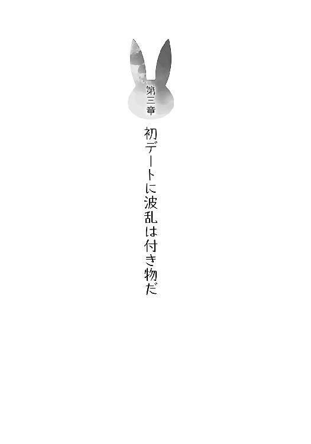
１
天気は快晴。待ちに待った日曜日は、絶好のデート日和となった。
バイトの方も、午後二時ぴったりに上がることができ、逆に待ち合わせまで少し時間があったので、咲太は一旦家に帰ることにした。
自転車を飛ばすこと約三分。
「おかえりなさい」
と出迎えてくれたかえでの頭にぽんと手を乗せてから、お風呂場へ直行する。
自転車のこぎ過ぎで汗だくになった体をシャワーで流し、念のために新しいパンツに穿き替える。その際、かえでに訝しげな視線を送られたが、
「男はあらゆる事態に備えておくべきなんだ」
と、一般論風に言ってごまかした。
「じゃ、行ってくるな、かえで」
「あ、はい、いってらっしゃい」
なすのを胸に抱いたかえでに見送られ、二時二十分に再び家を出る。今度は徒歩で藤沢駅へと向かった。
なんだか体が軽い。普通に歩いているのに、スキップでもしているかのような軽やかさだ。翼でも生えた気分。
見慣れた住宅街の景色が、今日は違って見える。割れたアスファルトの隙間から顔を出した草花が自然と目に留まった。電線に止まったすずめの鳴き声がよく聞こえた。
そして、それらが愛おしく思えてくる。やさしい気持ちになれた。
そんな浮かれに浮かれた咲太の耳に、小さな女の子の泣き声が聞こえてきたのは、家を出て三、四分後のことだった。
進行方向の前方。公園の入り口に、わんわんと泣きじゃくる女の子がいる。
「どうした？」
近づいて声をかけると、女の子は一度咲太を見て泣きやんだ。でも、またすぐに、
「うわー、ママじゃなーい！」
と言って泣き出してしまう。
「迷子か？」
「ママ、いないー」
「迷子だな」
「ママ、まいごー」
「そういう解釈もあるな」
なかなか将来が楽しみな女の子だ。
「ほら、もう泣くな」
女の子の前にしゃがみ込むと、咲太は小さな頭にぽんと手を置いた。
「お兄ちゃんがママを捜してやるから」
「ほんとう？」
「ああ」
しっかり頷いてから笑いかける。これで女の子もにっこりと笑顔になるかと思いきや、どういうわけか不思議そうな顔で首を傾げていた。
「よし、じゃあ行くか」
気を取り直して、咲太が女の子の手を握った瞬間だった。
「くたばれ、ロリコン変質者！」
そんな威勢のいい掛け声が背中から聞こえてきた。
一体、何事だろうか。そう思って振り向こうとしたのだが、それは叶わなかった。相手の顔を確認する前に、咲太のお尻に鋭い衝撃が走ったのだ。
まるで、硬いブーツの先端で、尾骶骨を蹴り上げられたかような激痛。いや、実際、その通りなのだろうが......。
「うおおおっ！」
雄叫びを上げながらアスファルトの上をのた打ち回る。その際、視界の隅に映ったのは、咲太とそう年齢の変わらない女子。恐らく、高校生。すなわち女子高生。
ふんわりしたショートボブの髪型に、短いスカート。当然、ナマ足。控えめながらメイクも決めたイマドキの女子高生だった。
「さあ、早く逃げて！」
真剣な表情で女子高生が女の子を促す。突然のことに女の子は、「え？ ええ？」と戸惑うだけだった。
「だから、早く！」
何が「だから」なのかはわからないが、女子高生は女の子の手を摑むと、どこかへと連れていこうとする。
「ロリコン変質者が立ち上がる前に！」
「誰がロリコン変質者だ」
お尻を押さえながらよろよろと咲太は立ち上がる。痛すぎて下半身に力が入らない。内股になった足はぷるぷると震えている。生まれたての小鹿のようだ。
「お兄ちゃん、ママ、捜してくれるんだよ」
「へ？」
素っ頓狂な声を女子高生が上げる。
「ロリコン変質者じゃないの？」
「僕は年上好きだ」
「やっぱり、変質者!?」
そう言いながらも、女子高生の表情には動揺が浮かんでいる。よく見ると、かわいい顔をした女子高生だった。まだ少し幼さを残した丸い輪郭。ぱっちりと開いた大きな目。軽めのメイクはやわらかい印象で好感が持てる。やりすぎな女子を学校内で見かけるので、メイクをするならこの子くらいを基準にすればいいと咲太は思った。
「僕は迷子になったその子の母親を一緒に捜そうとしてただけだ」
「いやいや、迷子はこの子でしょ？」
「ママ、まいごー」
咲太の発言を、女の子が肯定してくれた。しかも、女子高生の側を離れ、咲太のもとまで来ると、袖口をきゅっと握ってくる。形勢は一気に逆転。
さすがに、女子高生も自分の勘違いを認めたらしく、苦笑いが浮かんでいる。
「あー、お尻が痛い」
「ご、ごめんねえ。あははっ」
「ふたつにぱっくり割れたかも」
「え？ それは大変！ って、もとからふたつじゃん！」
「あ～、痛い、痛いなあ」
「わ、わかったぁ。わかりましたぁ」
投げやりな感じで女子高生が大きな声を出した......かと思えば、後ろを向いて電信柱に手をつく。
「さあ！」
気前の良さそうな掛け声と共に、ミニスカートに包まれたお尻を咲太に突き出してきた。
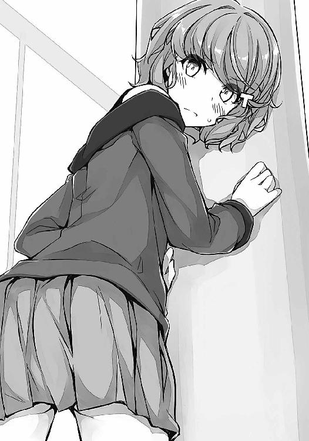
「いや、『さあ』じゃなくて」
蹴れということなのだろうが、天下の往来で女子高生の尻を蹴る趣味はない。
「いいから、早くして。あたし、友達と約束あるの！」
約束なら咲太にもある。それも重要な約束だ。今、こうしている間にもどんどんとその時間は迫っている。というか、迷子の問題もあるので、このままでは遅刻は確実。それゆえに余計なことに時間を使っている場合ではない。
こうなると、さっさと蹴ってしまった方が早そうだ。
「じゃあ、はい」
ぽんっと軽く女子高生の尻に蹴りを入れた。これで納得するだろう。そう思っていたのだが、
「もっと強く！」
と、女子高生は背中越しに訴えかけてきた。
「まじで？」
先ほどよりも強めに蹴る。ぱんっといい音が鳴った。
「もっとぉ！」
それでもまた、足りないらしい。
「よし、どうなっても知らんぞ！」
ここは覚悟を決めよう。
女の子のお願いを聞き届けてあげるのが、いい男というものだ。
咲太は半身を引いて構えると、軸足にぐっと力を溜めた。標的の丸いお尻を確認。狙いを定めて、しなりのある本気のミドルキックをお見舞いした。
どすんっという生々しい低音が響く。
一瞬遅れて、
「い、い......いたかぁー！」
と、博多弁の悲鳴が上がった。
「う～」
呻き声をもらしながら女子高生がしゃがみ込む。その両手は大切そうにお尻を押さえていた。痛すぎて続く言葉が出てこないようだ。金魚のように口をぱくぱくとさせている。
「お、お尻がふたつに割れた......」
やっと絞り出したのはそんな声。
「安心しろ。もとからふたつだ」
「あ～、ちょっと君たち」
後ろから声をかけられ、女子高生と同時に振り向く。制服を着た警察官のおじさんが立っていた。その表情には困惑が見て取れる。
「休日の真昼間から公道でド変態プレイをお楽しみのところ申し訳ないね」
「いや、ド変態はこいつだけですって」
事実なので女子高生を指差す。
「ち、違う！ 違うから！ これにはわけがあるんだって！」
妙な誤解をされて、女子高生も必死だ。
「とりあえず、そのわけとやらは交番で詳しく聞くから」
ぐっと腕を組まれてしまい、身動きが取れない。さすが警察官のおじさん。おじさんといえども、しっかりと鍛えているのかびくともしない。この街の治安は安心だ。
「僕、このあと大事な用事があるから離して！」
交番など冗談ではなかった。五分、十分なら奇跡的に可能性があるが、それ以上の時間を麻衣が待っていてくれるはずはない。なんたって、彼女は『桜島麻衣』なのだから。
「はいはい、暴れない。大人しくね。迷子のお嬢ちゃんもおいで。交番でお母さんが待ってるよ」
「ママ？ わーい！」
警察官のおじさんに引き摺られながら、迷子問題が解決したことにだけはほっと胸を撫で下ろす咲太だった。けれど、それすらも、
「最近、若者の間じゃ、痛いのが流行ってるのかい？」
という、おじさんの質問が台無しにしたのだった。
咲太たちが警察官のおじさんから解放されたのは、交番に到着して一時間半後のことだった。交番を出るときに見た時計の針は、恐ろしいことに四時を指し示していた。今すぐ誰かにタイムマシンを用意してもらいたい。
「はー、もー、最悪～」
疲れた顔で隣を歩く女子高生が不満を口にする。
「それはこっちの台詞だ、バカ」
「バカってなによ。元はと言えば、あなたが紛らわしいことをしてたからいけないんじゃん」
「誤解したお前の方がよっぽど悪いだろ」
「言い訳とか、かっこ悪い」
「言い訳じゃない。事実だ。だいたい、おじさんの話が長引いたのは古賀のせいだからな」
びくりと女子高生の肩が動く。
「......ちょっと、なんであたしの名前知ってるの？」
「古賀朋絵。かわいい名前してるんだな」
「フルネームも!?」
交番で警察官のおじさんに自分で名乗ったことを覚えていないのだろうか。通っている学校も把握済み。なんと咲太と同じ峰ヶ原高校の生徒だった。ひとつ下の一年生。一応、学校の後輩ということになる。
「僕はお前のことを何でも知ってる」
「はあ、バカじゃない？」
「出身は福岡だろ」
「どげん、知っとーとぉ!?」
「......」
「あっ」
慌てて女子高生こと古賀朋絵が口を両手で押さえる。
「さっきも『いたかー』って叫んでたぞ」
「そ、そんなの知らないし」
そっぽを向いてとぼけている。よくわからないが、知られたくない情報だったようだ。今さらごまかしたところで遅いわけだが。
「まあ、話を戻すと古賀が悪いってことだ」
「名前、教えて。そっちだけ知ってるのずるい」
「佐藤一郎だ」
真面目に教える義理もないので、わかりやすい噓を吐く。さすがに誰だって偽名だと気づくと思ったのだが、
「じゃあ、佐藤。あたしのどこが悪いって言うの？」
と、朋絵はあっさり受け入れた。どうやら、人を疑うということを知らない、純粋でいい子のようだ。今さら偽名だと言うのも面倒だったので、咲太は黙っておくことにした。
「わからないなら教えてやる。開始三十分ほどで警察官のおじさんには誤解だってことを理解してもらえたのに、古賀がスマホばかり気にして、いじって、ちゃんと話を聞いていなかったからだ」
事実、残りの一時間は人が話をしているときに『ケータイ』ばかり気にするなという内容のありがたいお説教だった。ケータイもスマホも持っていない咲太には、本当にどうでもいい内容だったのだが......。
「そうだけど......そんな理路整然と言わなくてもいいじゃん」
口を尖らせてふてくされたような態度を取る。
「少しは反省したか？」
「だって、メッセージ来てたし、しょうがないし」
「どの辺がしょうがないんだよ」
「返事、早くしないと友達じゃなくなっちゃう」
しゅんとして、朋絵が少し俯く。
「あ、それで必死に返事打ってたのか」
「じゃなかったら、怒られてるときにまでしないよぉ」
朋絵は頰を膨らませて上目遣いで睨んでくる。
「へえ～」
「なにその反応。感じ悪い」
「べつに～」
「どうせ、そんなんで友達じゃなくなるなら、そんなのは本当の友達じゃないとか思ってるんでしょ」
前に誰かに言われたことでもあるのだろうか。なぜか朋絵は声色を変えて言ってきた。
「お前がそう思ってるんじゃないの」
「う、うるさいな」
咲太は朋絵の頭に手を置くと、くしゃくしゃにしてやった。
「わっ、バカっ、セット大変なのに」
咲太の手を払いのけ、朋絵が慌てて乱れた髪を両手で直している。
「ま、がんばれよ。女子高生」
「なに？ バカにしてんの？」
「その馬鹿げたルールの中で、お前、必死に生きてんだろ？ なら、バカにはしない。バカだとは思うけど」
メールにしろ、メッセージにしろ、誰が望んで作ったルールなのかもよくわからない。誰のためのルールなのかも、よくわからない。最初は自分たちが「いい感じ」でいるために用意した決め事だったはずなのに、気が付いたら、自分たちを苦しめる縛めになっている場合もあるそんなルール。
でも、一度そのルールでやると決まってしまった以上は、仕方がない。ルールを守れなければ、みんなの輪から除外される。簡単に仲間はずれにされる。しかも、一度輪から外れたら、元の場所には戻りようがない。そんなことは咲太だってよく知っている。かえでが散々それで苦しんだからよく知っている。
消耗するだけ。それでも、そんなルールで自分たちを縛って、繫がって、居場所を作っておかないと安心できないのだ。一通一通のメールや、ひとつひとつのメッセージは「大丈夫だよね？」、「大丈夫だよ」とお互いに確認し合うためのもの。自分で自分を肯定するのは難しいから誰かに肯定してもらう。そして、それをみんなで共有する。同調する。そうやって安心できる居場所を作っている。
中学も、高校も......学校が社会のすべてで、世界そのものなんだから仕方がない。みんな、必死だから仕方がない。
そういう世の中の仕組みが、高校入学後にバイトをはじめ、大学生や社会人のスタッフと接するようになって、咲太は少しだけわかった気がした。別の場所から学校という空間を眺めることで、わかったような気がした。求めていたのは居場所だったんだと......。
「結局、バカにしてんじゃん」
「古賀はいいやつっぽいから、ま、いいんじゃないか」
「なにそれ」
「変質者から小さな女の子を助けようとしたガッツは尊敬に値する。危ないから今後は誰かを呼んだ方がいいけどな。相手が本物の変質者だったら、お前も襲われてんぞ。かわいいんだし」
「か、かわいいとか言うな！」
真っ赤になって朋絵は照れている。案外、言われ慣れてないのかもしれない。
「ま、その正義の心を忘れずに、これからもがんばってくれ」
「あ、うん。ありがと」
意外なほど素直に朋絵はお礼を言ってきた。根っこは本当にいいやつなのだろう。眩しいくらいの純粋さだ。
スマホの着信音が鳴る。咲太は持っていないから、もちろん朋絵のだ。
「あ、やばっ！ 約束あるんだった。じゃあね！」
ばたばたと朋絵が走り去っていく。短いスカートで走るものだから、ちらちらとパンツが見えていたけど、大声で指摘すると逆に注目を集めてしまいそうだったので、咲太は黙って見守ることにした。
「白か」
すっかり朋絵が見えなくなったところで、咲太は帰ろうと思って歩き出した。
三歩ほど進んで足を止める。
何か大事なことを忘れていないだろうか。
「......あ」
脳裏を過ったのは麻衣の顔。当然、やさしく微笑んでくれていたりはしない。かわいく拗ねていたりもしない。前に一度だけ本気で怒らせたときの表情が思い浮かぶ。
「やべっ」
足をもつれさせながら、咲太は猛ダッシュで待ち合わせの場所へと急いだ。
２
咲太が走り込んできたのは、毎日学校へ行くために使っている江ノ電藤沢駅。その改札口の前だった。
麻衣が指定した待ち合わせ場所。
切れた息を整えながら、右を見て、左を見る。横幅六、七メートルしかない改札口を確認するのに手間はかからなかった。
「......」
残念ながら麻衣の姿はない。
「ま、そりゃそうだよな」
あの桜島麻衣が、一時間半も待っているはずがない。
「うわー、やっちまった......」
押し寄せる後悔。けれど、あそこで迷子の女の子を前にして、素通りすることなどできなかったし、よもや、その直後に正義の女子高生に絡まれるとは思いもしなかったのだから、こればかりはどうしようもない。
ケータイもスマホも持っていない自分を、今日はさすがに恨んでしまう。あれば、一本連絡を入れることはできた。まあ、事情を話したところで、「ふ～ん、私とのデートよりも大事な用事なんだ」とか真顔で言われて、結局、今日のデートはなくなっていたのだろうが......。
こうなると問題はどうやって許してもらうかだ。恐らく、麻衣は咲太が来ないことに散々腹を立てた上で、帰るなり、ひとりでどこかへ行くなりしてしまったのだろう。その怒りがそう簡単に収まるとは思えない。
ガックリと落ち込んだ咲太の背後から、足音がひとつ近づいてきた。なんとなく知っている気がする足音。ただし、そのリズムからは激しい苛立ちを感じる。
「私を一時間三十八分も待たせるなんていい身分ね」
「......」
信じられない気持ちで振り返る。そこには私服姿の麻衣が立っていた。
「なによ、ハトが豆鉄砲を食ったような顔で」
「だって、麻衣さんは遅刻してきた男を、健気に一時間三十八分も待っているような可愛げのある女じゃない！ さては偽物だな！」
す～っと麻衣の目が細くなる。不思議と周囲の温度も二度ほど下がった気がした。
「咲太が私をどういう目で見ているのかよくわかった」
主にエロい目で見ていることがばれたのだろうか。
「『君』が抜けてますよ」
「咲太なんて咲太で十分」
麻衣は罰のつもりで言っているのだろうが、はっきり言ってご褒美にしか聞こえない。それを伝えると『咲太君』に戻ってしまいそうなので、咲太は黙っておくことにした。
「にやにやして、なに？」
「なんでもないです」
頰が緩むのを我慢しながら、改めて麻衣を見た。はじめて見る私服姿。長袖のブラウスの上に、ニット生地のかわいいフードベストを羽織っている。スカートは膝丈。裾の部分が少し外に広がった大人っぽいデザイン。加えて、膝下まであるブーツ。上品で、エレガントで、だけど、決めすぎてもいない絶妙なバランスの良さ。大人っぽい麻衣にものすごく似合っている。
「......」
ただし、ナマの部分がない。かすかに膝のあたりが見えるだけ。
「はあ......」
思わず、ため息がもれた。
「その失礼な反応はなに？」
「麻衣さん、気は確か？」
「な、なにがよ」
警戒したように麻衣が身を引く。
「デートと言ったら、ミニスカ、ナマ足！」
「殴るわよ」
ぐっと麻衣が拳を握る。
「はあ......」
「そんなに落ち込むこと？」
「楽しみにしてたのになぁ」
「遅刻しておいて図々しいわね」
「麻衣さん、制服のときいつも黒タイツだし」
「な、なによ、これだって色々考えて......」
視線を逸らし、ぼそっと何か言っている。
「ま、すげえかわいいんですけど」
「......」
ちらりと、横目で麻衣がおかわりを要求してくれる。
「麻衣さん、めちゃくちゃかわいいです」
「素直でよろしい」
「胸がドキドキします。持って帰りたいです。部屋に飾っておきたい」
「それ以上は、気持ち悪いから言わなくていいわよ」
「じゃあ、行きますかー」
それとなく流れで出発しようとする。
「待ちなさい。まだ話が終わってない」
「なにかありましたっけ？」
できれば流れてほしい話題なのですっとぼけてみる。
「下手な芝居はいいから」
「麻衣さんの前で芝居なんて恐れ多い」
「遅刻の言い訳をして、誠心誠意、私に許しを請いなさい」
なぜか麻衣は楽しそうだ。表情も生き生きとしている。
「納得できなかったら、私、帰るから」
もしかして、咲太をいじめるために、麻衣は一時間三十八分も待っていたのだろうか。そんな気がしてきた。
「ここに来る途中、住宅街の一角で迷子の子供に遭遇して」
「帰る」
「噓みたいだけど、本当なんですって！」
「バイト先から来たのに、どうして住宅街を通るのよ」
麻衣は鋭いところを突いてくる。
「一度、家に帰ったから」
「なんで？」
「時間あったし、いざというときのために、シャワーを浴びて、パンツを穿き替えるために」
「......キモ」
麻衣は素で引いている。
「ま、それは年下のかわいそうな男の子の空回りだと思って、仕方なく納得してあげる」
「ありがとうございます」
「ただし、今日は半径三十メートル以内に入らないで」
それはもうデートとは呼ばない。傍から見れば咲太はストーカーだ。
「ほら、作り話を続けなさい」
「迷子の子供と交番に行ったのは本当ですって」
「子供って女の子？」
「はい」
「私を待たせておいて、他の女と会ってたなんていい度胸ね」
「四歳児もダメ!?」
「ダメよ」
さらっと拒否された。
こうなるとバカ正直に全部話すのは危険だ。古賀朋絵というかわいい女子高生......いや、実はかなりかわいい女子高生と一緒だったことを言った日には、どんな罵声を浴びせられるかわかったものではない。
「でも、交番ならすぐそこでしょ？」
麻衣が駅の少し先を指差す。
「関わった以上は、ご両親が見つかるまで側にいようかと。女の子も泣いてたし」
「ふ～ん」
疑いの眼差しが突き刺さる。
「私、噓は嫌い」
「奇遇だなあ。僕もです」
「噓だったら、鼻でポッキー食べてもらう」
「一本？」
「ひと箱」
なまじっかギリギリでやれそうな範疇の拷問なだけに、色々状況が想像できてかなり嫌だ。
「食べ物を粗末にするのはよくないと思います」
「食べるんだから問題ないわよ」
「......」
「......」
顔を近づけて、麻衣がじ～っと見つめてきた。白状しなさいという圧力だ。吐息が頰に触れてくすぐったい。いい香りがする。
「強情ね」
「......」
今さら本当のことなど絶対に言えない。鼻でポッキーは食べたくないから。
「ま、いいわ。許さないけど、デートはしてあげる」
これは喜んでいいのだろうか。
「ありがとうございます」
咲太がほっと胸を撫で下ろした瞬間だった。
「あ、さっきのロリコン」
と、聞き覚えのある声がしたのは......。
ＪＲや小田急の駅へと繫がる連絡通路の方を見れば、つい先ほどまで一緒にいた古賀朋絵の姿があった。一緒にいる三人の女子は、「約束がある」と言っていた友達なのだろう。華やかな雰囲気のある仲の良さそうな女子四人組。クラスの中心グループといった感じ。
「そういうお前は博多の女」
咲太が反応すると、慌てた様子で朋絵が咲太に詰め寄ってくる。咲太の口を両手で塞ぐようにして、
「そ、それ言わないで！」
と、小声で凄んできた。
「博多の女？」
友達のひとりが首を捻る。
「あ、ほら、福岡のお土産知らない？ バームクーヘンに小豆羊かんが入ってるやつ。ほんとは『おんな』じゃなくて『ひと』って読むんだけどね」
「あ、食べたことあるぅ。あれ、おいしいよね」
「ってか、朋絵！」
別の友達が、ぐっと朋絵の腕を引いた。咲太と距離が離れる。
「な、なに？」
「病院送りの先輩」
耳打ちをしていても、はっきりとそう聞こえた。言われた朋絵は、「え？ 佐藤一郎じゃ」とか呟いている。
「はあ？ 朋絵なに言ってんの......てか、それに、あれ」
今度は四人揃ってちらりと麻衣に視線を送る。彼女たちには見えているようだ。
「ほら、行こ」
友達に引っ張られ、朋絵は足早に改札を通り抜けていく。
それを見届けながら、咲太は大きな失敗を犯したことに気づいていた。思わず、朋絵の声に言葉を返してしまったが、この場は知らんぷりをした方がよかった。その方が絶対によかったのだ。
ちらっと麻衣を見る。完璧な無表情がそこにはあった。
「ねえ、咲太」
「誤解です」
「朋絵ちゃんって言うんだ」
「みたいですねー」
「心配しないで、帰ったりしないから」
麻衣が腕を絡めてきた。
「まずはポッキーを買いにいかないと」
「細いやつでいい？」
「だ～め」
さすがに今はその悪戯っぽい口調を楽しんでいる余裕はなかった。絡められた腕の感触を堪能している余裕もなかった。
「そこをなんとか！」
「ダメよ、ロリコン」
こうして......麻衣との初デートは、駅前のコンビニに向かうところからはじまったのだった。
３
ぽきっとポッキーの折れる音が隣から聞こえてくる。
江ノ電の車内。海側を向いた座席に、咲太は麻衣と並んで座っていた。
またぽきっと音がする。コンビニで買ったポッキーを麻衣が一本ずつ口に運んでいるのだ。小さく開く唇がかわいらしく咲太を誘惑してくる。もちろん、麻衣にそんな気はないのだろうが、かじる前のわずかな時間、ポッキーの先端を少しだけ甘嚙みする仕草に思わず見惚れてしまう。
ただ、純粋にその光景を堪能できない。いつ、麻衣がポッキーを鼻に突っ込んでくるかわからないので、気が気ではなかった。
そして、その時は、思いのほか早くやってきた。
麻衣がポッキーを差し出して、
「あげる」
と言ってきた。
「オナカ、イッパイデス」
「太るといけないから残りは食べなさい」
「どこから？」
「普通に食べていいわよ」
ため息交じりに麻衣が横目を向けてくる。
「いただきます」
箱ごとポッキーを受け取った。
「まさか、私が本気で鼻から食べさせると思ったの？」
「完全に本気の目だったし」
「あんなの演技」
「さすが」
「ま、一本くらいは試してみようと思ってたけど」
「うわー、鬼がいる」
「全然反省してないようだから、やる？」
「すいません。噓です。やさしくて美人な麻衣様、許してください」
「なんか、誠意を感じないのよね」
退屈そうに麻衣が窓の外に視線を向ける。とは言え、まだ藤沢駅を出て三駅。海が見えたりするわけではない。そろそろ、線路は民家と民家の間をすり抜けていく区間。
夕暮れに向かう時間帯のせいか、車内はあまり混雑していない。席もまばらに空いている。近くにいる乗客の反応をそれとなく確認したが、麻衣に気づいている人はいなかった......恐らく、見えていないのだと思う。
「ねえ」
「土下座でもして謝れと？」
「違う。咲太はどうして私に構うの？ 罰として白状しなさい」
「急になんですか？」
「普通だったら、私みたいに面倒な女には関わらない」
「自覚あったんだ」
「周囲の反応を見てれば、誰だって気づくわよ」
クラスからも学校からも、麻衣は浮いた存在。誰も関わろうとしない空気のような存在だ。
「そんな風に捻くれてるから友達できないんですよ、麻衣さんは」
「捻くれてるのはお互い様」
麻衣の皮肉は聞かなかったことにする。言われなくても自覚していることだ。事あるごとに、佑真や理央から面と向かって言われていることでもある。
「咲太の場合、その上、妙に図太いし」
「そうかな？」
「物怖じしないで私に話しかけてきたのなんて、咲太くらいのものよ」
「確かに、麻衣さんの威圧感はやばいと思う。友達できないと思う」
美人というだけで声をかけづらいのに、国民的知名度の芸能人という肩書きもあるのだ。
「うるさいわね」
「麻衣さん、学校楽しいですか？」
「それ、友達もいないのにって意味なら、小学生の頃からずっとこうだったから、今さら別になんとも思わないわよ。学校を楽しいとも思わないけど」
それは強がりでもなく、ごまかしでもなく、紛れもない麻衣の本音に聞こえた。学校に馴染めていないことに何も感じていない。周囲と自分が違うことに違和感を覚えてもいない。諦めをはるか昔に通り越して、無になっているんだと咲太は感じた。
「てか、話を逸らさないの」
横から鋭い視線が注がれる。
「先に質問したのは私で、咲太はまだ答えてないわよ」
「なんでしたっけ？」
「女子アナに自分が不利になる情報を渡してまで、私にお節介を焼くのはどうして？ そうまでするには、相応の理由が必要でしょ」
先ほどよりも、麻衣は厳しく切り込んできた。
「僕は困っている人を放っておけない性質なんですよ」
「私は真面目に聞いてるの」
「ひどっ」
「咲太はお人好しだけど、天然のお人好しじゃない」
「そうかな？」
「誰にでもやさしいわけじゃない。前に七里ヶ浜の駅で私の写真を撮ろうとしていた大学生のカップルには結構酷いこと言ってたし」
「あれは、僕でなくても言うと思う」
「言い方にやさしさがなかったって言ってんの。やんわり注意すればいいじゃない」
「むかついてるのに？」
「やろうと思えばできるでしょ？ それくらい冷静じゃなきゃ、逆にあんな風に相手を追い詰める言い方はできない」
「聞けば聞くほど、僕、性格悪いな......」
「いいと思ってたの？」
わざとらしく麻衣が驚いた表情を向けてきた。
「ここに、もっと性格悪い人がいる」
「そういうのいいから、早く理由を答えなさい」
話題を逸らすことを麻衣は許してくれなかった。いつもそうだ。
「なら、真面目に言うので、真面目に聞いてください」
「どうぞ」
「美人の先輩とお近づきになれるチャンスだから張り切ってるんです」
「誰が本音を赤裸々に語れと言ったのよ」
「真面目にって言ったの麻衣さんだよね？」
「建前を答えなさいよ」
常識的に考えて、本音を聞きたがるものではないだろうか。麻衣の価値観はいまいちよくわからない。
「困ってるのに、誰にも頼れないのはしんどいから」
咲太は半分投げやりな口調で答えた。
「......」
今度は、何も言ってこない。合格ということだろうか。
「かえでが思春期症候群になったとき、誰も目の前で起きていることを信じてくれなくて......」
ポッキーを一本摘んで口に運ぶ。食べながらしゃべるとマナーにうるさい麻衣に怒られそうだったので、飲み込んでから話を続けた。
「誰もまともに話を聞いてくれないし、みんな離れていったんですよ。本当のことを言っているのに、完全に噓つき呼ばわりされて」
それも、仕方のないことだとは思う。そう、仕方がないのだ。咲太だって当事者が妹のかえでじゃなければ、信じようとはしなかったはずだ。目を背けて、耳を閉ざして......見なかったことにして、聞かなかったことにしたはずだ。
その方が楽に生きられる。そんなことは誰もが知っている。
「ひとつ聞いてもいい？」
少し躊躇いがちに、麻衣が言葉をもらした。
頷いて麻衣を促す。何を聞かれるのか、だいたい想像はできていた。
「ご両親は？」
慎重に麻衣が口を開いた。自身が母親との折り合いが悪いから、踏み込むのに余計な葛藤が生じたのだと思う。そういう風に、自分のことを相手に置き換えられるところが、咲太はいいなあと感じていた。性格はだいぶ女王様だけど、民の気持ちも理解してくれている。
「今は別々に暮らしてます」
「それはわかってる。家に上がらせてもらったときに、そう思ったし」
確かに部屋を見れば、説明は不要だろう。大人のにおいがするものがない。玄関には咲太の靴しかないし、咲太個人の部屋に入っても廊下と雰囲気が変わらない。普通、家族でもテリトリー内の空気は違うものだ。
「私が聞きたいのは......」
「わかってます」
もちろん、最初から麻衣の質問の意図はわかっていた。かえでの事件に対して、両親がどう反応したのかを聞いているのだ。
三本まとめてポッキーを口に入れた。これで箱は空っぽだ。潰してポケットの中に押し込んでおく。
「母さんは、まあ、受け止めようとして、受け止めきれなくて、おかしくなって......今もまだ入院してます。娘がいじめられてるってだけでも気に病んでたのに、わけのわからない思春期症候群まで降りかかってきたんだから無理もないっていうか。父さんはその付き添いをしてます」
このことをどう納得すればいいのか、咲太はまだよくわかっていない。自分がどうこうする前に、周りが先に変わってしまって、気づいたらこうなっていたのだから。
結果だけが残った。
何もできなかったし、何もできることなんてなかった。
「かえでは母さんに拒絶されたのがショックで、しかも、その原因が自分にあると思って余計悩んで......僕以外にはなかなか懐かないお兄ちゃんっ子になりました」
「いくつなんだっけ？」
「僕のふたつ下。中三です。あれ以来、極度の家好きになったんで、学校には行ってませんけどね」
正しくは家から出られないのだが......。靴を履いて玄関に立つと、足が一歩も外へ動かなくなる。小さな子供のように「いやいや」をして泣き出してしまう。
月に一度のペースで、カウンセラーの先生が診に来てくれているのだが、今のところ改善する気配はない。
「お母さんのこと、恨んでない？」
「そりゃ、恨みましたよ」
さらっと咲太は本音で答えた。
「親なんだから助けてくれて当たり前だろって思ったし、僕やかえでのことを信じてくれよって思いました」
けれど、離れて暮らすようになってわかったこともある。たとえば、母親は毎日家で、家族の食事を作って、洗濯をして、風呂やトイレを掃除して、色々な面倒を一手に引き受けてくれていたのだ。それを当たり前のことだと、一緒に暮らしていた頃の咲太は思っていた。
全部自分でやらなければならなくなって、気づいたことはある。変わったことはある。些細なところで言えば、トイレは座ってするようになった。
たぶん、母親だって色々と我慢していたことがあったんだと思う。家族に気づいてほしいことだってあったんだと思う。だけど、咲太の前では一言も口に出さなかった。顔にだって出さなかった。「ありがとう」のひとつも要求してこなかった。
そうした日々の感謝を返せなかったことを考えれば、恨むのも筋違いな気がする。この一年で、咲太はそう思えるようになった。
月に一度のペースでお互いの近況を報告し合っている父親に対しても同じだ。母親の看病をしながら、毎月の咲太とかえでの生活費を別に用意してくれている。咲太が必死にバイトをしたところで、今住んでいるマンションの家賃すら払えないという現実を知れば、やっぱりそこは認めていかなければならない。自分ひとりで生きているわけではないのだということを......。
「かえでの件を通してわかったんですよ。自分はまだガキで、大人だってなんでも解決してくれるわけじゃないんだっていう......そんな当たり前のことに」
「ふ～ん、すごいわね」
「うわー、すごいバカにされてるなぁ」
「してないわよ。それに気づいてないクラスメイト、たくさんいるでしょ？」
「気づく切っ掛けがなかっただけで、問題に直面すればみんな気づきますよ」
「それで、この話はどこへ向かうのかしら？」
麻衣が窓を気にしている。そろそろ海が見える頃だ。
質問の内容はきちんと覚えてる。
──咲太はどうして私に構うの？
それが話の発端だ。
「ひとりだけいたんですよ。かえでに起きた思春期症候群の話を、真面目に聞いてくれた人が......」
その人物との出会いがなければ、恐らく咲太はかえでの事件を乗り切れなかったと思う。
あのときに、思い知った。
孤独よりも恐ろしいものがこの世界にはあることを。
孤立こそが一番恐ろしいものであることを。
きっと、誰もが潜在的にそれに気づいている。だから、それを恐れるあまり、メールの即時返信ルールや、既読スルーは許さないなんて決まりが生まれるのだ。それが、結局は自分たちの首をさらに絞めつけるとも知らずに......。それこそが、孤立を生み出す原因になっているとも知らずに......。
「僕を信じてくれた人がいたんです」
その姿を思い出すと少し切ない。名前を反芻すると下唇をぐっと嚙み締めてしまう。
「それ、女でしょ」
「え？」
ずばっと指摘され、咲太はぎくりとした。麻衣の平坦な冷たい声は迫力がある。
「今、そういう顔した」
なんだか麻衣は面白くなさそうだ。
電車はいつも降りている七里ヶ浜駅のひとつ前......鎌倉高校前駅に停車する。
ドアが開いた途端、麻衣が突然立ち上がった。
「降りる」
デートの予定はこの電車の終点のはずだ。あと十五分ほど電車に揺られる必要がある。
「え？ 鎌倉は？」
確認の声をかけたときには、もう麻衣は電車の外にいた。
「あ、待って」
慌てて咲太も続いた。
数秒遅れて電車のドアが閉まる。のろのろと走り出した。その後ろ姿が見えなくなるまで見送ると、麻衣は海に視線を向けた。
この駅は、海に面して建っているのだ。しかも、少し坂を上がった場所。当然、視界を遮るものは何もない。ホームに立って電車を待っているだけで、目の前の海を独り占めできる。
映画やドラマに出てきそうなロケーション。実際、撮影にもよく使われているらしく、咲太もＴＶカメラを持った大人の集団を何度か目撃したことがある。
「咲太が一時間三十八分も遅刻したせいで、もう夕方だし」
江の島の方へと傾いた太陽は、空を赤く染めはじめていた。
「少し歩くわよ」
海を指差した麻衣は、咲太の返事を待たずに駅を出ていく。
その気ままな態度に苦笑いを浮かべながらも、咲太は楽しい気分で隣に並んだ。
駅を出た咲太と麻衣は、なかなか青にならない国道１３４号線の信号を渡ると、二十段ほど階段を下って七里ヶ浜の砂浜に出た。
江の島に背を向けて、鎌倉がある方へと歩き出す。
砂に取られた足は少し重たい。
「知ってる？ 七里ヶ浜って、七里もないの」
「一里が約四キロで、この浜は三キロにも満たないんですよね」
つまり、さばを読んでいるどころの騒ぎではない。
「つまんない」
どうやら、麻衣にとってはとっておきの情報だったらしい。
「千葉の九十九里浜も九十九里ないらしいですよ」
「つまらないこと知ってるわね」
本当につまらなそうに麻衣が言い捨てる。
「自分から持ち出した話題のくせにそれ？」
「で、どんな人だったの？」
「ん？」
あえて、わからないふりをした。
「咲太の与太話を信じたメルヘン女」
「気になります？」
「名前は？」
「気になるんだ」
「いいから言いなさい」
これ以上からかうと本気で怒らせそうだった。
「名前は牧之原翔子さん。身長は約１６０センチ。全部ひっくるめて麻衣さんより小さかったです。体重は知りません」
波の音を聞きながら、咲太はそう語り出した。
「知ってたら、その理由を問いただしているところよ」
「なんていうか、人の話をちゃんと聞いてくれて......でも、自分のペースは崩さないし、変に同情もしたりしない人でした」
「ふ～ん」
聞いてきたのは麻衣なのに、その態度は素っ気ない。
「特徴と言えば、峰ヶ原高校の制服を着てたこと」
「......」
そこで、ようやく麻衣が視線を向けてきた。
「もしかして、その人を追いかけて峰ヶ原高校を受験したわけ？」
「かえでの事件があったあとじゃ、地元は辛いんで離れることは決めてたんですよ。もっと遠くの土地にしようって話もあったんだけど、今どきネットで情報なんてすぐに伝わるし、距離はあんまり関係ないかと思って......それで、ま、行き先をここにした理由は、麻衣さんの言う通りです」
素直に白状する。ここまで言ってしまったあとで、今さら隠しようもない。
「でも、ふられちゃったんだ」
人の不幸はなんとやら。麻衣は楽しそうだ。
「結果としては同じだけど、告白はしてません」
「わざわざ同じ高校に来たのに？」
何のために峰ヶ原高校に来たんだと、麻衣の視線が責めてくる。
「会えなかったんで」
砂浜に落ちた石を拾い上げ、海へと放り投げる。そう言えば、前にスマホを投げたのもこの辺りだった気がする。
「卒業してたんだ」
「出会ったのは僕が中三。彼女は高二って言ってたからそれはないはずなんだけど」
「じゃあ、転校？」
「だったら、まだよかったかな」
「違ったって口ぶりね」
「三年の教室を全部回って、当時の三年生に話も聞いて捜したんですよ」
「そしたら？」
咲太はゆっくりと首を横に振った。
「誰も牧之原翔子なんて生徒のことを知らなかった」
「......」
麻衣はどう受け取ればいいか、迷っている様子だった。
「在校生の名簿を全部調べて、留年も疑って......ここ三年くらいの卒業アルバムも当たったんだけどなあ」
けど、やっぱり見つからなかった。
牧之原翔子という生徒が、峰ヶ原高校に在籍していた記録は何もなかったのだ。
「わけわかんないと思いますけど、僕は確かに牧之原翔子って人と出会って、その人の存在に救われたのは確かなんです」
「そう」
「本人に恩返しはできそうにないから、麻衣さんに無理やりしようとしてるのかも」
ひとりでは拭い去ることのできない不安がある。誰かが側にいるだけで、救われた気持ちになれる。それを、二年前に咲太は経験した。
「あとは、知りたいと思ってる」
「知りたい？」
「なんで、思春期症候群が起こるのか。それがわかれば......」
自然と咲太の手は、自らの胸に添えられていた。
「胸の傷、やっぱり気になる？」
「それなりに」
これから夏が近づいてくる中で、水泳の授業はなかなかに憂鬱だ。傷を消す方法があるのなら、ぜひとも消したい。
「ちゃんと解決できれば、かえでのためにもなるかもしれないし」
「そうね」
この先もずっと家から出られないというのは、もったいないと思う。毎日を、読書と猫のなすのとのじゃれ合いだけで浪費するのは、絶対にもったいない。
いつかは、この砂浜にかえでを連れてきてあげたいと咲太は思っている。そのためには、思春期症候群のことをよく知って、かえでの例に当てはまる解決策を見つけたい。それこそが、最初に咲太が麻衣に興味を持った理由......。
わざわざ言わなくても、麻衣の横顔はそんなことはお見通しだと笑っていた。
咲太はもうひとつ石を摑んで海に投げた。弧を描いた石が、ぼちゃんと海に落ちる。
「ねえ」
「......」
無言で麻衣の次の言葉を待つ。
「今でも彼女のことが好き？」
「......」
そうだとも、違うとも、即答はできなかった。笑って適当にごまかすことも咲太はしなかった。
「牧之原翔子さんのことが好き？」
麻衣の問いかけを、もう一度自分の心の中で繰り返す。
──今でも彼女のことが好き？
今日まで避けてきた問題だったのかもしれない。
──牧之原翔子さんのことが好き？
以前は、彼女のことを考えると、胸にちくりと痛みが走った。考えすぎると胸が苦しくなって、夜も眠れなくなった。
でも、あれから一年が経過した今は違う。違っていた。
本当はとっくの昔に結論なんて出ていたんだと思う。気持ちを言葉にするのを、無意識に避けていただけだ。それを、この場でなら言える気がした。
「すげえ、好きでした」
海に向かって想いを吐露する。たったそれだけで、胸のつかえが取れたみたいだった。
切っ掛けなんてなくても、時間が気持ちを思い出に変えていく。失恋の傷もかさぶたみたいにふさがって、気づかないうちにぽろっと剝がれ落ちている。そうやって、人は前に進んでいくのだ。
「どうせならもっと大きな声で叫びなさいよ」
「それをネタに、僕を一生からかう気でしょ」
「動画で記録してあげる」
麻衣がスマホを構える。
「ほら、さっさと言いなさい」
心なしか、声が尖っているように思えるのは気のせいだろうか。
「なんかめちゃくちゃ怒ってません？」
「はあ？ 私が？ なんで？」
明らかにむっとしている。苛々している。刺々しい視線と感情が、ぐさぐさと咲太を突き刺しているではないか。
「聞いてるのはこっちなんだけど......」
「デートの最中に、他の女が好きだなんて告白されて、上機嫌になる人なんている？」
「『好きだった』だから。そこ重要！」
「ふ～ん」
少しも納得した様子はない。これは機嫌を取るのに時間がかかりそうだ。そんなことを咲太が思っていると、
「う～み～」
という能天気な声が聞こえてきた。
見れば、砂浜に続く階段に、一組の男女の姿があった。
男の方はくせ毛のもじゃもじゃ頭。首に大きなヘッドフォンをかけている。
女の方は小柄で眼鏡。はしゃいで砂浜を駆け出した彼氏の背中を、むすっとした表情で見ている。靴のかかとが砂に沈んで歩きづらそうだ。
ふたりとも年齢は咲太たちよりも少し上な感じ。大学生だろうか。
砂に苦戦していた彼女のもとへ、彼氏が引き返してきた。かと思ったら、
「バ、バカなことしないで」
と、抵抗する彼女をひょいっと抱え上げる。そのままお姫様抱っこ状態で、波打ち際まで連れていく。
「もう、信じられない」
彼氏の腕から下ろされた彼女の頰は赤い。一番近くにいた咲太の視線を、俯いた感じでそれとなく気にしている。
「どういう神経してるのよ」
機嫌を損ねた彼女をよそに、彼氏は押し寄せる波を前に、「うおっ、波っ！」とか言って大はしゃぎだ。彼女の話を全然聞いていない。変わった組み合わせのカップルだ。
「寒いし、私、もう行くから」
そう言って回れ右をした彼女を、彼氏がすかさず背中から抱き締めている。
思わず、咲太は「おっ」と、声を上げてしまった。
でも、幸い、イチャイチャする大学生のカップルには聞かれずに済んだらしい。
「お前、すげえあったかいなぁ」
「......」
俯いた彼女は、何かぶつぶつと文句を言っていたようだが、意外と素直になすがままにされていた。彼氏の腕に口元を埋める仕草がとてもかわいらしい。
それとなく麻衣を見る。
「寒くない」
先に釘を刺されてしまい、作戦は失敗。
「いや～、寒いなー」
海に向かって呟くと、麻衣からは呆れたような視線が返ってきた。
大学生のカップルは、手を繫いで波打ち際を遠ざかっていく。
映画かドラマのワンシーンを見ているようだ。
「いいなー、あれ」
「そうね」
「ん？」
「な、なんでもない」
ぽろっと本音を口にしてしまったのか、麻衣は慌ててそっぽを向いていた。
「手、繫いであげましょうか？」
「なんで上からなのよ」
そう言いながらも、咲太の出した手に、麻衣は素直に手を重ねてきた。でも、それは手を繫ぐためではなかったらしい。
麻衣の手が離れると、咲太の手には麻衣のスマホが残った。赤いウサギ耳のカバーがついたスマホだ。
「くれるの？」
「あげない」
「じゃあ......」
と質問の言葉を続けようとした咲太の視界に、スマホの画面が入る。
表示されていたのは一通のメール。
読んでもいいのかを目で尋ねると、麻衣は少し緊張したような面持ちで頷いた。
──五月二十五日（日）、午後五時に七里ヶ浜の砂浜に来て
今日がその当日。あと五分で午後五時になろうとしている。
なぜ麻衣がメールを見せてきたのかわからなかった。
合点がいったのは、宛先欄が目に入ったとき。
『マネージャー』と記されている。
つまり、麻衣が母親に宛てたメール。さらに、すでに送信されたメールだということをスマホの画面は教えてくれた。送信日はデートの約束をしたあの日。麻衣が芸能界に復帰すると教えてくれたあの日。咲太と別れたあとで送ったようだ。
もうすぐ約束の午後五時になる。
「会うんですか？」
スマホを返しながら、あえて咲太は確認した。
「会いたくない」
「なら、会わなきゃいいのに」
麻衣が中学三年生のときに出した写真集の内容で揉めて、母親と絶縁状態なのは知っている。別の事務所への移籍がすでに決まっているのだし、今さら母親と直接話をする必要はないのではないだろうか。
「あ、もしかして、芸能事務所の契約問題的なものが残ってるとか？」
「あの人の事務所との契約は、活動休止と同時に切ってあるから大丈夫よ」
となると、あとは心の問題くらいしか思い当たらない。一種のけじめというか......。
波打ち際を見つめていた麻衣は、どこか浮かない顔をしている。会うと決めたとはいえ、会いたくないという気持ちが見て取れた。
「『やりたくないことはやらない』っていうのが僕の持論」
誰にともなくそう告げる。
「それ、続きがあるんじゃないの？」
「ま、『やらなきゃならないことはやるしかない』っていうのとセットだけど」
海に向かって、咲太は思い切り伸びをした。
避けて通っていいことはある。
避けて通ってはいけないこともある。
世の中には、そのふたつがあるのだ。
避けて通っていいことまでやる必要はない。でも、避けて通ってはいけないことから目を背けていては、前に進めない。
そして、この場合、麻衣にとって母親との対話は、後者の方なのだと麻衣は思っている。
「大丈夫ですか？」
あえて直球で咲太は聞いた。
「自分で決めたことだから......それに、もう来たみたいだしね」
麻衣が江の島の方から近づいてくる小さな人影に気づいた。
「時間にはぴったりな人だから」
まだ距離が遠くて、咲太には相手を識別できそうにない。それでも麻衣が確信しているのは、やっぱり母娘だからだろうか。
「向こう行ってて」
野良犬を追い払うように、麻衣がしっしっと手首を振る。
「せっかくだし、挨拶しようかな」
「......」
真顔で睨まれて、咲太は降参とばかりに両手を上げた。
「終わったらデートの続きをしてあげるから、少し離れて待ってなさい」
「はーい」
波打ち際から遠ざかり、砂浜に打ち上げられた流木に腰掛ける。
遠くに見えていた人影は徐々に大きくなってきて、咲太の目にもその人物の姿がはっきりしてきた。
麻衣に似た気の強そうな美人。正しくは、麻衣が母親に似ているのだろうが......。
すらっとして背が高く、まだ若々しい印象。少なくとも、高校三年生の娘がいる母親には見えなかった。その姿を目の当たりにして、咲太は前にクラスメイトが「二十歳のときに産んだ子供らしいよ」と噂していたのを思い出した。
その話が本当ならまだ三十代。咲太から見ておばさんには変わりないが、『お母さん』という雰囲気はまるでない。明るい色のスーツが余計にそう感じさせてくれる。
立ち止まった麻衣のもとへ、母親が一歩ずつ近づいていく。あと十歩くらいの距離。
麻衣が何か声をかけたのがわかった。「久しぶり」とでも言ったのだろうか。波と風の音にかき消されてしまい、ここまでは声が聞こえてこない。
母親はわずかに速度を落としただけで、足を止めようとはしない。麻衣に言葉を返した様子もなかった。
また麻衣が何か言っている。身を乗り出して必死に語りかけていた。
「......」
おかしいと思ったのはそのときだった。
母親の視線が定まらない。左右を広く見回す仕草は、まるで待ち合わせの相手を捜しているかのように咲太には思えた。
しかも、麻衣を目の前にしても立ち止まる気配がないのだ。
「......噓だろ」
嫌な予感がした。
心の中で「やめてくれ」と咲太が叫んだ瞬間だった。
母親は麻衣の真横を通り過ぎていく。
まるで麻衣のことが見えていないかのように......。
母を呼ぶ娘の声が聞こえなかったかのように......。
あまりにあっさりと通り過ぎた。
嚙み合わないふたりの間に何が起きているのかは瞬時に把握した。胸に締め付けるような痛みが走る。
愕然とした思いと、恐怖が体に流れ込んでくるのを咲太は感じていた。
すかさず麻衣は母親の正面に回り込む。身振り手振りを交えながら、「私が見えないの？」と訴えかけている。
その声は、咲太のところまで聞こえた。
けれど、麻衣の母親は再び麻衣を素通りする。置き去りにされた麻衣の両手がだらりと垂れ下がった。
その瞬間、咲太の足は前に出ていた。一直線に麻衣のもとへ向かう。麻衣の母親へと近づいていく。
残り十メートルくらいになったところで、母親が接近してくる咲太に気づいた。
残り五メートルほどで何かを確信したのか、
「あなたなの？」
と、不機嫌な感情をぶつけてきた。その様子が麻衣によく似ていて、咲太は面食らってしまった。
「私をこんなところに呼び出した理由はなに？ あなた誰？ 見たところ高校生くらいだけど面識ないわよね？」
立て続けにまくし立ててくる。
「梓川咲太と言います。高校生です。あそこの」
国道１３４号線の上にある峰ヶ原高校の校舎を視線で示した。
「そう。それで、その梓川咲太さんが何の用？ 私、忙しいのよ」
「いや、用事があるのは僕じゃないです」
母親の背後に立った麻衣から視線を感じた。
少し悩んだような素振りを見せたが、結局はゆっくりと頷いた。たぶん、麻衣はこの事態を想定していたのだ。そして、この最悪な状況に備えて、咲太をここへ連れてきた。デートをエサにして......。
「なら、どなたの用事？」
少し変な質問だと思った。
「麻衣さんですよ。わかってますよね？」
メールを受け取ったからこそ、母親はここへやってきた。今、麻衣のことが見えなくてもその事実は変わらないはず。
「......」
じっと麻衣の母親が咲太を値踏みしてくる。
「誰が呼び出したのか、もう一度言ってくれる？」
「麻衣さんです」
「そう」
「はい」
母親は風でなびく髪を手で押さえると、
「誰よそれ」
と言ってきた。
「っ!?」
麻衣の目が驚愕に見開かれる。瞳の奥には激しい動揺が見て取れた。それも当然だ。実の母親に「誰よそれ」と言われたのだ。
「あんたの娘だろ！」
感情だけで咲太は反応していた。絶縁状態とは言え、母親の反応は酷過ぎる。
「私に麻衣なんて娘はいないわ。冗談はよして」
「冗談はどっちだ！」
煮えたぎる咲太の激情とは裏腹に、母親の態度は冷えていく一方だ。
「ねえ、なんなのこれ？ あなた、ウチの事務所に入りたいとかそういうの？」
「そんなわけあるか。なに言って......」
もう一度母親と目を合わせた瞬間、咲太は言葉を詰まらせた。その目が、かわいそうに咲太を見ていたことに気づいたから......。先ほどの「誰よそれ」は、正真正銘、『桜島麻衣』が誰なのか......それが、わかっていないからこそ、出てきた言葉なのだと理解してしまった......。
母親の瞳には、ひとかけらの噓も混ざってはいなかった。
「そうだ。メール！ 今日、ここで会う約束を麻衣さんがメールで送ってますよね？」
「それを見せれば、このわけのわからない茶番の幕は下りるのかしら？」
ハンドバッグから母親がスマホを取り出して、画面を咲太に向けてきた。
「......なんでよ」
その声は隣から覗き込んできた麻衣が発したもの。
もちろん、麻衣が見えていない母親には聞こえていない。
メールの文面は先ほど麻衣に見せてもらったものと同じだった。
──五月二十五日（日）、午後五時に七里ヶ浜の砂浜に来て
差出人の欄には確かに『麻衣』と書かれていて、どこにも不思議な点はない。それなのに母親は、
「差出人が不明なの。でも、手帳にはわざわざ予定として入れて、しかも、無理に時間を空けてねじ込んだのは覚えてるんだけど......なんなのかしら、これ」
聞きたいのはこっちの方だ。確かに『麻衣』と書いてあるのに、母親にはその二文字が見えていないらしい。
今の話でわかったことと言えば、少なくともメールを受け取った三日前の段階では、差出人が実の娘の麻衣であると認識していたであろうこと。だからこそ、無理をして予定を空け、ここへ来る時間を作った。
けれど、当日を迎える前のどこかで、母親は麻衣のことを忘れた。見えないだけでなく、声が聞こえないだけでなく......完全に忘れてしまった。
信じられないが、母親の態度はそうでなければ説明がつかない。
「そんなバカなことがあるか」
思ったことが無意識に口を出ていた。自分で聞いてもぞっとするほどに、声は虚しく乾いている。
「そんなバカなことがあってたまるか」
二度目は母親に対して言っていた。
「面白い売り込みだけど、さすがに非常識すぎるわよ。もう少し社会というものを勉強してから出直してきなさい」
踵を返すと、麻衣の母親は来た道を引き返していく。
「母親なのに！」
「......」
麻衣の母親は振り向かない。歩みも止めない。
「なんで娘を忘れられるんだ！」
「......もういい」
麻衣の小さな声。
「なんで！」
「もういいから......」
「まだ話は終わってない！」
咲太は母親の背中にありったけの感情をぶつけ続けた。
「......お願い、もうやめて」
今にも泣き出しそうな声に、全身がぞくりとした。麻衣を余計に傷付けているのが自分だと気づき、咲太は押し黙った。
「すいません」
「......」
「ほんとすいません」
「......ううん、いいの」
「......」
一体、麻衣の身に何が起きているのだろうか。
今の今までは、姿が人から見えなくなっていて、声が聞こえなくなっているだけだと咲太は思っていた。そう思い込んでいた。麻衣自身もそうだったはずだ。
ここにきて、大きな勘違いをしていたのかもしれないという現実に直面した。
咲太と麻衣は、何もわかっていなかったのかもしれない。
見えなくて、聞こえなくて......母親の記憶から、存在そのものが綺麗さっぱり消えていたのだから......。
「......」
考えれば考えるほど、悪い予感しかしてこない。
「咲太」
不安そうに麻衣の瞳が揺れている。
それを見て、麻衣も同じ疑念に捉われているのだと咲太は気づいた。
──母親だけでなく、他の人の記憶からも消えているのかもしれない
いつからなのかはわからない。見えなくなったときには、そうなっていたのかもしれない。そうじゃないのかもしれない。
ただ、もし本当に他の人の記憶からも消えてしまっているのだとしたら......。
その疑念が確信に変わるのに、たいして時間はかからなかった。
４
登下校で使っている七里ヶ浜駅まで歩いた咲太と麻衣は、早々に帰りの電車に乗った。特にそうしようとやり取りがあったわけではなくて、自然とふたりの足は帰り道へと向いたのだ。
途中、咲太は観光客のおじさんやおばさん、地元の小学生やお年寄りに声をかけた。もちろん、「桜島麻衣」について尋ねるためだ。十数名に同じ質問をして、返ってきたのもまた同じ答えだった。
──知らない
知っていると言った人はひとりもいなかった。麻衣のことが見える人も皆無だった。
それでもまだ、咲太は心のどこかで期待していた。偶然知らない人に連続で声をかけてしまっただけかもしれないと思いたかった。けれど、そのわずかな希望もすぐに途絶えることになる。
藤沢駅に到着後、咲太は公衆電話から女子アナの南条文香に連絡を入れた。前にもらった名刺を財布に入れっぱなしにしておいたのは正解だった。
「はい」
少し他人行儀な声で電話は繫がった。
「梓川咲太です」
「あら」
急に明るさが込められる。トーンが確実に一段階は上がっていた。
「君からラブコールをもらえるなんて、今日は特別な日になりそうね」
「ラブは一切ありませんよ」
「お姉さんとの危ない関係に興味はないの？ 火遊び大歓迎なんだけどな」
「おばさんの間違いでしょ」
「で、どうしたの？」
都合の悪い話は聞かない主義らしい。文香はあっさり話題を変えてきた。
「桜島麻衣さんの件です」
「なぁに、突然」
文香の反応に、咲太は「おっ」と思った。
手応えを感じていた。
けれど、その期待はあとに続いた文香の言葉によって、脆くも崩れ去る。
「それ、誰のこと？」
「......」
「もしもし？」
「桜島麻衣という人を知りませんか？」
もう一度聞き直す。
「知らないけど、誰？」
「じゃあ、その......写真の件は」
咲太が取引に差し出した胸の傷の写真。少なくとも、それはまだ文香の手元にあるはずだ。そして、それを公表しないように、文香は麻衣と約束している。麻衣の芸能界復帰について独占的に報道する権利と引き換えに......。
「あれは出さないって約束でしょ？ 覚えてるわよ。ちゃんと守る」
「約束って誰と？」
「咲太君に決まってるじゃない。どうしたの？ ......大丈夫？」
心配が半分、様子がおかしい咲太に対する興味が半分という感じだった。これ以上は、話を続けない方がいいと咲太は思った。藪蛇になりかねない。
「大丈夫です。すいません。写真のこと心配でつい、変なこと言っちゃいました」
「信用ないな～」
「お忙しいところお邪魔しました。失礼します」
冷静でいられるうちに、咲太は電話を切った。
受話器を戻す。その手は妙に重たかった。
ゆっくりと振り向き、後ろで待っていた麻衣に首を振る。
最初から期待はしていなかったのだろう。麻衣は「そう」と短い感想を口にしただけで、表情には何も出さなかった。
「今日はありがと。じゃ」
淡々と別れの挨拶を告げて、麻衣が後ろを向く。躊躇うこともなければ、迷うこともなく、麻衣は帰り道に向けて真っ直ぐ歩き出した。
いつも通りの凜とした足取りで遠ざかっていく。
その背中を見ていると、咲太の胸は軋んだ。
このまま、二度と会えなくなるんじゃないかという焦燥に駆られた。
すると、体は勝手に動いていた。
「麻衣さん、待った」
追いかけて麻衣の手首を摑む。
立ち止まってはくれても、麻衣は振り向かない。少し先の地面を見据えている。
「行こう」
「......」
麻衣がわずかに顔を上げた。
「行くってどこへ」
「まだ麻衣さんのことを覚えている人が、どこかにいるかもしれない」
「もう咲太以外の人は忘れてしまっているみたいな言い草ね」
麻衣が乾いた笑い声を上げた。
「......」
否定はしなかった。できなかった。そう考えてしまうだけの状況が揃っている。そして、それは麻衣自身も同じように考えたからこそ、今の発言が飛び出したのだろう。
それでも、信じたかった。ここではないどこか遠くの街に行けば、みんなが麻衣のことを知っていて、見ることができて、「あれ、桜島麻衣じゃない？」と指を差されることを信じたかった。今はまだ信じていたかった。
「確かめに行こう」
「確かめてどうするの？ 咲太以外に見えないことがわかって、咲太以外に忘れられていることがわかって、何になるのよ！」
「少なくとも、その間、ずっと僕が側にいられる」
「っ!?」
不安でないはずがない。不安で仕方がないはずで、不安に押し潰されそうなはずなのだ。何が起きているのかもよくわからなくて、どうしてこうなったのかもわからない。明日がどうなるかもわからないのに、誰も待っていないひとりぼっちの家に帰るのは、絶対にこわいはずなのだ。
その証拠に、俯いた麻衣の肩は小さく震えている。
「というか、僕がまだ麻衣さんと一緒にいたいってことなんだけど」
「......生意気」
「せっかくのデートだし」
「年下のくせに生意気」
「ごめん」
「手、痛いから離して」
力が入っていたことに気づいて、ぱっと手を離す。
「ごめん」
「謝ったくらいじゃ許さない」
「ごめん」
短い言葉の応酬は一旦そこで途切れた。
それから、一分近い沈黙を挟んで、
「......いいわよ」
と、麻衣がぽつりと呟いた。
「ん？」
「まだ私を帰したくないって言うなら、デートの続きをしてあげる」
顔を上げた麻衣は、悪戯っぽく咲太の鼻を指でつんっと押した。
いつの間にか、麻衣の震えは止まっていた。

１
藤沢駅から東海道線の下り電車に乗って一時間弱。西へ約五十キロ。咲太と麻衣を乗せたオレンジと緑のラインが引かれたシルバーの車両は、神奈川県を飛び出して、温泉地として有名な静岡県の熱海に到着していた。
時刻は午後七時。
とにかく今は知る必要がある。
麻衣に何が起きているのか......。
誰に見えて、誰が覚えているのかを。
麻衣を中心に発現しているだけだと思っていた思春期症候群が、一体どれだけの規模で麻衣を苦しめようとしているのかを知る必要があった。
少なくとも、ここへ来るまでの途中、茅ヶ崎駅と小田原駅のホームに降りてみたのだが、誰も麻衣のことが見えてはいなかった。
咲太が数人に声をかけて麻衣のことを聞いても、「はあ？」とか、「誰それ」とか、「知らない」とか、「最近の子はわからないわねえ」とか、そんな反応しか返ってこなかった。それは、到着して早々に熱海駅で聞いたのと代わり映えのしない答え......。
本当に、誰もが『桜島麻衣』のことを忘れている。というか、最初から知らなかったという態度だった。
そうした人々の様子を、麻衣は無表情で見ていた。驚きも、悲しみも、恐怖も吞み込んで、波ひとつ立たない水面のように平然としていた。
熱海駅のホームに立った咲太は、発車時刻を知らせる電光掲示板を見上げた。
次の駅に行くには、同じ東海道本線を使うにしても列車を乗り換える必要がある。乗ってきた電車は熱海が終点だったのだ。
七時十一分に島田行きの電車が来るとわかった。それが何県のどの辺の駅なのかはさっぱりわかっていなかったが......路線図を見て、とりあえず静岡をさらに西へ向かうことだけ確認できれば、それで十分だった。
発車は六分後。わずかだが時間がある。
「妹に電話してきます」
麻衣にそれだけ言って、咲太は売店の脇にある公衆電話に駆け寄った。小銭を用意して受話器を持ち上げる。番号をプッシュすると、呼び出し音が鳴りはじめた。
しばらくして、留守番電話に切り替わる。
「かえで、僕だ」
かえでは咲太以外からの電話には絶対に出ないので、いつもこうして最初は留守電に話しかけている。
「もしもし、かえでです」
「よかった、起きてたか」
「まだ七時ですよ」
顔を見なくても、頰を膨らませているのが想像できた。
「どうしたんですか？」
「悪い、今日、帰れない」
「え？」
「遠くまで行く用事ができた」
「な、なんですか、用事って」
「それは......」
一瞬、言葉に詰まる。でも、すぐに咲太はかえでにも聞いておくべきだと思い、
「かえで、前に家に来た桜島麻衣ってお姉さんのこと覚えてるか？」
と、受話器に告げた。
「知りません、そんな人」
あまりにあっさりと否定の言葉が返ってくる。
「......」
すぐに返す言葉が出てこない。軽く下唇を嚙んで、心が静まるのを待った。
「誰なんですか、その人」
焼きもちを焼くように、かえでが「むー」と唸っている。
咲太はそれをどこか上の空で聞いていた。自分のよく知る人間に、こういった形で現実を突きつけられるのはやはりきつい。南条文香のときもそうだったが、見ず知らずの人に「知らない」と言われるよりも強烈だった。
自分と共有しているはずの記憶が消えていると実感するからだ。その瞬間だけは、咲太も当事者になっている。現実感がまるで違った。
「知らないならいいんだ。今日の夕飯は、キッチンの戸棚にあるカップ麵で我慢してくれ。好きなやつ食べていいから。なすのにもご飯をあげてな。あと、ちゃんと歯を磨いてから寝るんだぞ。また、電話する。じゃ、おやすみ」
「あ、え？ お兄ちゃん！」
かえでの悲鳴の途中で、十円玉が切れてぶつんと電話は切れた。
電車も発車時刻を迎えようとしている。
「行こう、麻衣さん」
「そうね」
咲太と麻衣は二番線のホームに停車していた島田行きの電車に乗り込んだ。
２
熱海を出た電車は太平洋側を通って、進路をさらに西へと取った。途中、島田駅と豊橋駅で別の列車へと乗り換える。静岡県を出て愛知県へ、愛知県から岐阜県へと向けて、数百キロの距離を移動していく。
その間、咲太は知らない土地の人々に麻衣のことを尋ねたが、やはり誰ひとりとして、『桜島麻衣』を知っている人はいなかったし、麻衣が見えている人もなかった。
そして、今、ふたりは大垣行きの電車に揺られていた。
恐らく、今日、麻衣のことを確認しに行けるのはそこまで。到着する頃には、日付も跨いでいることはわかっている。一駅進むごとに乗客が減っていっていた。
車輪とレールの軋む音。レールのつなぎ目で生じる震動。人の気配が消えていく代わりに、それらが次第に子守唄のように聞こえてくる。
四人掛けのボックスシートが空いたところで、咲太と麻衣はそこに並んで座った。
「岐阜県の中では、岐阜市に次いで人口が多いんだって」
スマホを見ていた麻衣が急にそんなことを言う。
「何の話？」
同じ車両に、他の乗客は殆どいない。三人ほどが離れた座席に座っているだけ。気分的には麻衣とふたりっきりの状況と大差ない。
「大垣の話」
「ああ」
おかげで、小さな話し声も大きく聞こえる。
「あと、地下水が豊富だって書いてある」
「水がきれいなとこは大歓迎」
「......」
「......」
ふたりが口を閉ざすと、電車の走る音が間を埋めていく。当然、外は真っ暗で車窓を楽しむことはできない。それでも麻衣は窓の下の小さなテーブルに肘を突いて、知らない土地の景色に目を向けていた。
お互い何も言わずに十分くらいは経過したと思う。
「ねえ、咲太」
「なんですか？」
「私のこと見えてる？」
ガラスに映った麻衣の瞳は、横を向いた咲太の顔を捉えていた。
「見えてますよ」
「声、聞こえてる？」
「ばっちりと」
「私のこと覚えてる？」
「桜島麻衣。神奈川県立峰ヶ原高等学校の三年生。子役として芸能界にデビューして、まあ、色々と大活躍」
「なによ、色々って」
「芸能界なんて場所で幼少期から過ごしてきたせいか、性格は歪んでいて素直じゃない」
「どこがよ」
「不安なくせに、それを隠しているところ」
そう言いながら、咲太は思い切って麻衣の手を握った。
麻衣が少し驚いたように眉を上げ、握られた手に視線を落とす。
「私、握っていいなんて言ってない」
「僕は握りたい」
「......」
「ちょっとくらいご褒美くれてもいいと思うなあ」
「......仕方ないわね」
視線を窓の外に戻した麻衣の指が、咲太の指と指の間に滑り込んでくる。
恋人つなぎ。
くすぐったくて、ドキッとした。
「今だけ特別よ」
そう言った麻衣の横顔は、少し照れくさそうだった。同時に、面食らった咲太を見て、楽しんでいるようでもあった。
やがて、車内アナウンスで次が終点の大垣だと知らされる。
咲太と麻衣は、電車が到着するまで、握った手を離さなかった。
大垣駅のホームに降り立ったのは、とっくに日付も変わった零時四十分頃。
駅員に麻衣のことを聞き、「いや、知りませんね」と言われてから改札を出た。
なんとなく南口へ出て、バスロータリーの辺りまで歩いたところで立ち止まる。何もない駅だった場合、どうしようかと思っていたが、市の中心地らしく駅ビルや商業施設が並んでいた。これなら今夜の宿くらいどうにかなりそうだ。
問題はどこで一泊過ごすか。咲太ひとりなら漫画喫茶をホテル代わりにすればいいのだが、麻衣を連れていくのは忍びないし、咲太に釘を刺すつもりだったのか、電車を降りたときに、「お風呂入りたい」と麻衣が言ってきた。
咲太も気持ちは同じだが。
デート中も七里ヶ浜の潮風を散々浴びたので、シャワーで流したかった。少しべとつくし、服が潮くさい気がする。
色々と考えはしたものの、咲太は無難なところで駅前のビジネスホテルを頼ることにした。
部屋が空いているかを尋ねると、フロントのおじさんには怪しい目を向けられた。殆ど手ぶらの高校生が深夜に泊めてほしいと言ってきたのだから当然の反応だ。
それでも無事にチェックインをパス。変な疑いが拡大しないよう、先に一泊分の料金は支払っておいた。
麻衣は姿が見えないのでチェックインのしようがない。一緒の部屋でもいいかお伺いを立てようとした咲太だったが、その必要はなかった。麻衣はさっさとエレベーターホールに向かっている。
一階で停止していたエレベーターに乗り込み六階へ上がる。
部屋は廊下の突き当たり。６０１号室だ。
カードキーの使い方がいまいちわからずに首を捻っていると、麻衣の手が伸びてきてドアを開けてくれた。
「一度差して抜けばいいのよ」
練習のつもりで咲太もやってみた。なんかこう、手応えがなくてすっきりしない。開けた感じがしない。でも、ドアは麻衣の言う通り、きちんと開いた。
部屋はシングル。ベッドがひとつ。申し訳程度の鏡台兼テーブル。そのための椅子があるくらい。あとは、19インチのＴＶと小さい冷蔵庫、それとポットが置いてある。
はっきり言って狭い。部屋の七割をベッドが占拠している。
「狭っ」
「こんなものでしょ」
麻衣はベッドにすとんと腰掛ける。リモコンでＴＶをつけて、ブーツを脱ぎ出した。足をぶらぶらとさせてチャンネルを一通り回したら、さっさと消してしまう。
座った態勢からばたんとベッドに倒れた。さすがに疲れているのだろう。殆ど移動しかしていないが、その移動で咲太も疲れ切っている。気だるい疲労感が全身に伸し掛かっていた。
「お風呂入る」
麻衣がむくりと起き上がる。
「どうぞどうぞ」
「覗かないでよ」
「大丈夫です。僕はシャワーの音だけで、ご飯三杯はいけるくちなんで」
「......」
麻衣が無言で、びしっとドアの方を指差した。出て行けという合図だ。
「ここは、シャワーの音だけ聞かせて、年下の男子を悶えさせるのが、余裕のある大人の女性の嗜みだと思うけどなあ」
「わ、わかってるわよ、もちろん」
はじめからそうするつもりだったと言わんばかりに、麻衣が鼻を鳴らした。
「その代わり、ひとりで変なことはじめないでよ？」
「変なこと？」
わかっていてすっとぼける。
「へ、変なことは変なことよ。バカ、知らない！」
ふんっと顔を背けて、麻衣がバスルームに向かう。ばたんと強くドアが閉まった。鍵もちゃんとかけているのが音で伝わってくる。
「今の、すげえかわいかったな......」
やがて、シャワーの音が部屋に響き出した。
咲太はそれを聞きながら、部屋に備え付けられた固定電話を確認した。きちんと外線にもかけられるようだ。
受話器を持って、唯一暗記している友人のケータイ番号を押した。
三回目のコールが途中で途切れると、聞き覚えのある声が聞こえてくる。
「何時だと思ってるんだよ」
眠たそうな佑真の第一声。
「一時十六分だな」
時刻はベッドの時計が教えてくれた。
「わかってるよ、そんなこと」
「寝てたか」
「部活とバイトで疲れた俺は、熟睡してた」
「緊急事態なんだ。助けてくれ」
「なにすりゃいいの？」
「まず質問なんだが、桜島先輩のこと覚えてるか？」
どうせ無理だろうという気持ちがあった。今日、何十......下手をすれば百名近くに麻衣のことを尋ねたが、咲太の聞きたい返事はもらえなかったのだから。
「は？ 当たり前だろ」
「そっか、知らないよな」
反射的な相槌。
「いや、知ってるだろ」
まだ寝ぼけた佑真の声が、ゆっくりと脳を揺さぶってくる。
今、佑真はなんと言っただろうか。
「国見！」
「うおっ、急に大声出すなって」
「お前、桜島先輩のことわかるのか？ 桜島麻衣先輩だぞ」
「だから、わかるに決まってんだろ」
理由はわからない。さっぱりわからないが、意外な形で、咲太は捜していた人間をひとり見つけることができた。その喜びと驚きと戸惑いに、心臓は痛いくらいに脈打っている。
「用事はそんだけ？ 寝るぞ、俺」
「待った。双葉のケータイ番号を教えてくれ」
「ま、いいけどさ」
だいぶ目が覚めてきたらしく、佑真はぶつぶつと散々文句を言いながら、双葉理央の番号を読み上げた。それを、咲太はテーブルの上にあったメモ用紙に綴る。
「咲太、今からかけるんだよな？」
「だから聞いたんだよ」
「非常識だって、双葉に怒られると思うぞ」
「安心しろ。僕もそう思ってる」
「ああ、安心した。今度昼飯くらいおごれよ。双葉も一緒にさ」
「わかった。おやすみ」
「おう、おやすみ......」
佑真との電話が切れた。
続けて、咲太は理央に電話をかける。すぐに繫がり、「梓川だけど」と名乗った。
「何時だと思ってるわけ？」
意外とはっきりした理央の不機嫌な声。もしかしたら、まだ起きていたのかもしれない。
「一時十九分だ」
「二十一分。その時計遅れてるよ」
「あ、そうなのか」
ビジネスなホテルなのだから、正しくセットしておいてほしい。
「今、いいか？ ま、よくなくても相談に乗ってもらいたい」
「まだ厄介なことに足も首も突っ込んでるんだ」
「別に厄介ってほどじゃない」
「後ろで聞こえるシャワーは桜島先輩でしょ？」
「......よくわかったな」
鋭すぎる指摘に驚きつつも、咲太は強烈な違和感を覚えていた。
「こんな時間に梓川のかわいい妹はシャワーを浴びないだろうし。それに、家からの電話じゃないのは表示された番号を見れば明らか」
理央の推理を聞いているうちに、咲太は違和感の正体に気づいた。
「双葉も、桜島先輩のこと覚えてるんだな？ 知ってるんだな？」
確認の言葉を投げかける。
「あの有名人を知らないわけがない。梓川はバカなの？」
「そのバカなことが起きてるから電話したんだ。こんなバカな時間に」
理央が一度「ふう」と息を吐く。
「わかった。バカな梓川のそのバカな話とやらを聞いてあげるよ」
約二十分をかけて、咲太は麻衣に起きている現象のすべてを理央に説明した。憶測は抜きにして、見たことをありのままに伝える。理央は時折確認の言葉を挟んだが、咲太の話を全部聞き終えるまでは、あくまで聞き手に回ってくれた。
「......というわけだ」
話し終えると、理央はしばし口を噤んだ。やがて、
「なるほど」
とだけ口にする。そして、少し考え込むような吐息をもらしたあとで、
「まさか、そこまで梓川と桜島先輩の関係が進んでいたとは驚きだね」
と言ってきた。
「おい、僕の話の何を聞いてた」
「聞きたくもない梓川の恋愛話」
「そっちの件で相談をした覚えはない」
「今のはのろけにしか聞こえない。こんな時間に非常識なやつ」
「のろけてもいない」
「なら自慢？」
「もってのほかだな」
「そうは言って、突拍子もなさすぎる」
理央がいかにも面倒くさそうに言ってきた。
「ま、それはそうなんだけど......よく考えてみろ。僕とあの『桜島麻衣』が一緒にいる事実を前にしたら、人が見えなくなったり、記憶から消えたりしても不思議はないだろう」
「あ、それもそっか」
「......お前ね」
今のは冗談のつもりで言ったのだが、理央は素直に納得していた。
「とは言っても、前にも話したことあるけど、私は思春期症候群の存在については否定的なんだよ」
「知ってる。理屈に合わないんだろ？」
「そ」
それでも咲太をほら吹き呼ばわりしないのは、かえでに起きた現象と傷のこと、加えて咲太の胸に刻まれた爪痕を見せたことがあるからだ。そのときに理央は、「理屈には合わないけど、梓川の言っていることを信じた方が、色々と辻褄は合う」と言っていた。
当然だ。咲太は何ひとつ噓を言ってはいないのだから。地元を離れ、峰ヶ原高校にやってきた背景には、かえでの思春期症候群が絡んでいる。それがなければ、普通に地元の高校に行っていただろうし、牧之原翔子に出会うこともなく、峰ヶ原高校の存在を知る機会すらなかったはずなのだから。
「それで、私は何を期待されてんの？」
「なんでこんなことが起きているのかを考えてほしい。解決する手段を見つけてほしい」
「無茶苦茶だね、梓川は」
「必死だからな。無茶苦茶にもなる」
「......」
「あれ？ 双葉？ 切れた？」
「前に国見が言ってたよ」
「は？」
どうしてここで佑真が出てくるのだろうか。
「『ありがとう』と『ごめん』と『助けてくれ』を言えるのが、梓川のいいとこだってさ」
「国見と双葉にしか言わないぞ」
咲太の照れ隠しは、鼻で笑い飛ばされてしまった。
「わかった。考えるだけ考える。期待はしないで」
「いや、する」
「あのさぁ......」
「ありがと、ほんと助かる」
正直、咲太も不安なのだ。先がまったく見えない。この恐怖は、かえでに起きた思春期症候群のとき以来。何と戦えばいいのかすら、今はまだわかっていない。それがこわい。
いずれは、咲太も麻衣が見えなくなってしまうのかもしれない。声が聞こえなくなってしまうのかもしれない。麻衣のことを忘れてしまうのかもしれない。なによりも、それがこわかった。
「明日、学校は？」
「今、大垣ってところだから朝は無理だろうな。けど、なんで？」
理央が意味もなく明日の予定を聞いてくるとは思えない。
「ざっと考えた限りで、私と梓川と国見の共通項なんて学校くらいしかない」
「なるほど」
「となれば、学校に原因があるのかもしれない。そう思ったわけ」
「......それ、当たってるかも」
ふと咲太はあることを思い出していた。今日......とは言っても、日付は昨日だが、デートの待ち合わせ場所でのこと。迷子の女の子と一緒に出会った女子高生......古賀朋絵。
駅で再び鉢合わせたとき、朋絵には麻衣が見えていた。その友達にも麻衣が見えていた。
「こんなとこまで来たのは無駄足だったか......」
そう思いながら、理央に朋絵とその友達のことを追加で伝えた。
「少なくとも現状を把握する情報になってるんだから、無駄ってことはないよ。おかげで、峰ヶ原高校に原因があるかもしれないって思えてるんだしね」
「そっか......なら、よかった。明日は、昼になるかもしれないけど、学校には行く。夜中に悪かった」
「まったくだよ」
理央があくびを嚙み殺しながら電話を切る。咲太も受話器を置いた。
意味もなく立ちっぱなしだったことに気づいて、すとんとベッドに腰掛ける。
いつの間にか、シャワーの音は聞こえなくなっていた。理央との電話に集中していたせいか気づかなかったらしい。
「うわー、もったいないことした」
そんな後悔を口にしていると、バスルームのドアが少しだけ開いた。その隙間から、タオルを頭に巻いた麻衣が、顔だけをひょこっと出してくる。ちらりと見えた湯上がりの肩は桃色に火照り、湯気が立っていた。
「下着、どうしよう」
「は？」
「服は一緒でもいいけど、靴下と下着は嫌」
「僕が洗濯しましょうか？」
「死んだ方がまし」
「麻衣さんの下着だったら、汚れてても気にしないのに」
「よ、汚れてない！」
「むしろ、その方が価値あるのに」
「変態思考から離れなさい」
頭に巻いたタオルを取ると、麻衣が咲太に投げてきた。顔面に直撃する。避けるのを忘れてしまったのは、しっとりと濡れた麻衣の髪に誘惑されたからだ。
けれど、避けないで正解だった。シャンプーの香りなのだろうけど、タオルからは甘いにおいが漂っていたから。
「今、麻衣さん、ノーパン、ノーブラ？」
「バスタオルは巻いてる」
「おお」
「変な想像して盛り上がるな」
「妄想だからいいよね」
「どうして咲太はこうエッチなのかしら」
「美人の先輩とホテルにいて、興奮するなって方が無理」
「私のせいだって言いたいの？」
「控えめに見積もっても、半分は確実にそうだと思うな」
言いながら、咲太は立ち上がった。
ポケットの財布を確かめる。
「下着、コンビニで売ってるやつでいいなら買ってきます。僕も穿き替えたいし」
「いいの？」
「お金ならまだあるんで」
なけなしのお金が入った財布を麻衣に見せる。藤沢駅を発つ前に、コンビニでバイト代を全部下ろした。五万円とちょっとではあるが、一枚五百円のコンビニパンツを買うくらいの余裕はまだある。
「そうじゃなくて......男の子ってそういうの恥ずかしいんでしょ？」
「ん？ あ、そうかも。でも、慣れてるから」
「慣れてる？」
意味がわからなかったのか、麻衣はきょとんとした表情を見せた。
「妹の生理用品買っているうちに感覚が麻痺しました。今じゃ、女性店員の反応を楽しむ余裕まであります」
かえでは家からは出ない家好き少女なので、洋服や下着なども咲太が買っているのだ。
「迷惑な客ね」
「じゃ、行ってきます」
「待って、私も行く」
首を引っ込めると、麻衣はバスルームのドアを閉めた。鍵がかかる音。とことん警戒されているというか、まったく信用されていないようだ。
「任せてくれていいのに」
「すごいの買ってきそうだし」
「行くのコンビニですよ？」
シンプルなやつしか置いてないはずだ。
「だいたい、男の子の選んだ下着を身に付けるなんて、いやらしいじゃない」
狭いバスルームで服を着ているためか、言葉の節々に「んっ」と吐息が混ざっている。それがとても色っぽい。
少しすると、バスルームから響いてくるのはドライヤーの騒音に変わった。
結局、十分以上も待たされて、麻衣はようやく出てきた。
「ほら、行くわよ」
「はーい」
フロントを避けて、裏の出口から咲太は麻衣とホテルを出た。高校生のひとり旅はさすがに目立つ。チェックインの際に向けられた疑惑の視線は減らしておくに越したことはない。
この場合、麻衣の姿が見えないのが救いだ。男女のペアだったら、余計な憶測も増して、警察に相談とかされたかもしれない。まあ、見えていたら、そもそもふたりでこんなところまでやってくることもなかったのだが......。
左右の通りを確認する。駅から離れる方向に約五十メートル。緑色の看板を掲げたコンビニの明かりが見えた。
自然とふたりの足がそちらを向く。
人通りのない夜の道を、しばらく無言で歩いていると、
「なんか不思議」
と、麻衣が呟いた。
後ろに手を組んで、寝静まった街並みを眺めて歩く麻衣の横顔は、どこか楽しげに見えた。
「ん？」
「こんな風に知らない街に今いること」
わざと踵を鳴らすようにして、麻衣は足を進めていた。兵隊さんの行進のようだ。
「ドラマや映画の撮影で、色々な場所に行ったことあるんじゃ？」
「あれは、行ったんじゃなくて、連れて行かれただけよ」
「あー、それわかるな」
家族旅行で大垣よりも遠い沖縄に行ったことがある。中学の修学旅行ではここより少し先の京都まで行った。小学校のときは日光へ。学校の遠足で訪れた場所は他にたくさんあるけど、どれも自分で行ったという感覚はない。
麻衣の言うように、連れて行ってもらったのだ。
だから、麻衣が感じているように、咲太も楽しいのかもしれない。藤沢駅で東海道線に飛び乗った瞬間、味わったことのない高揚感を覚えたのかもしれない。
行き先もはっきりとは決めず、とにかく遠くへ行ける電車を選んだ。麻衣が見える人を探すために。麻衣を覚えている人を見つけるために......。
自分でここまで来た。当然、自分で帰らないといけない。その緊張感が楽しいのだ。
今、咲太と麻衣はちょっとした冒険をしている。思春期症候群を抜きにしても、非日常の中にいる。そういうはじめての楽しさ。
「撮影のときは、それ以外の時間、ずっとホテルだったしね。知らない街なのに、そこに住んでる人はみんな私のことを知ってたから、出歩く気にはなれなかった」
「自慢ですか」
「違うってわかっててそういうこと言うのは構ってほしいから？」
お見通しだと麻衣の目が笑っている。
「ばれたか」
咲太の照れ隠しは、麻衣に「甘えん坊さん」と鼻で笑い飛ばされた。
「でも、一番不思議なのは、知らない街を一緒に歩くのが、年下の男の子だっていうことよね」
「僕だって、あの桜島麻衣とこんな遠い街に来るとは思ってませんでした」
「光栄でしょ」
「一生、忘れません」
はっきりとした意思を持って、咲太はあえてその言葉を口にした。避けて通ることはできない。現実として、麻衣は人々の記憶から消えている。
「......」
麻衣は何も言わない。
だから、咲太はもう一度念を押した。
「絶対、忘れない」
「......もし、忘れたら？」
「鼻からポッキーを食べる」
「食べ物で遊ばないの」
「考案したの麻衣さんじゃん」
口元に笑みを浮かべるだけで、麻衣はそれ以上乗ってはこなかった。
「......ねえ、咲太」
「なに？」
「......ほんとう？」
「......」
「本当に忘れない」
揺らぐ瞳が咲太を試すように語りかけてくる。
「麻衣さんのバニーガール姿は、ばっちりと脳に焼き付いてます」
ふうっと、麻衣が息を吐く。
「あの衣装、まだ持ってるでしょ」
完全に決めつけた口調。事実なので構わないが......。
「もちろん」
「変なことに使ってるんだ」
「まだ使ってないって」
「帰ったら捨てなさいよ」
「えー」
「えー、じゃなくて」
「麻衣さんがあと一回着てからでもよくない？」
「真顔で何を言ってるんだか」
麻衣は心底呆れた様子だ。
それでも、諦めずに見つめていると、
「今日のお礼もあるし......一回だけよ」
と、わずかに照れながらも折れてくれた。
「ありがとうございます」
「年下の男の子の性欲を受け止めてあげるくらい、別にどうってことない」
台詞とは裏腹に、麻衣は顔を背けている。暗くてよくわからないが、顔は赤くなっていたのかもしれない。
「ま、今日はその前に下着を選ばないと」
「絶対に選ばせないからね」
議論は平行線のまま、ふたりはコンビニにたどり着いた。
コンビニに入ると、「いらっしゃいませー」という男性店員の気だるげな挨拶が飛んできた。店内に他の客の姿はない。もうひとりの店員は、ここぞとばかりにお菓子の棚の陳列を整えている。
目的の生活用品は、入り口付近の棚に並んでいた。買い物かごを持って、麻衣とふたりでその前に立つ。
靴下にＴシャツ、タオルにストッキング、もちろん、お目当てのパンツやキャミソールなども揃っている。
普段じっくり見る機会がないので知らなかったが、思っていたよりも充実のラインナップだ。一品ずつが手に取りやすいように、プラスチックケースの中で小さく折りたたまれていた。
女性用の下着は、パンツとキャミソールのふたつ。サイズはＳとＭがあって、色は黒とピンクの二種類から選ぶことができる。
麻衣は迷う素振りもなく、黒のパンツと同じく黒のキャミソールに手を伸ばして、買い物かごに落とした。最後に靴下も追加する。
「ピンクがいいなあ」
「別に咲太に見せるわけじゃないんだから、どっちでもいいでしょ」
「うわー、すげえ見たい」
「バカ言ってるとバカになるわよ」
あくびを嚙み殺しながら、麻衣はさっさとドリンクコーナーに行ってしまう。
食い下がっても仕方がないので、咲太は自分用のボクサーパンツとＴシャツ、靴下をかごに入れて、麻衣を追いかけた。
「ま、黒もありだけどね」
「なにか言った？」
「いいえー」
ホテルに戻ると、まずは着替えと一緒に買ってきたおにぎりとサンドウィッチを無言でお腹に収めた。途中で食事はしたけど、食べたのはもう四時間ほど前だったのでお腹が空いていたのだ。
短い食事を済ませると、咲太はシャワーを浴びた。そして、出てきたところで、
「朝一番で帰ろう」
と麻衣に告げた。
少し驚いた様子を麻衣が見せる。でも、納得したように、
「妹さんが心配するものね」
と言ってきた。
「まあ、それもあるんだけど、見つけたんですよ。麻衣さんのことを覚えている人間を」
「......本当に？」
「峰ヶ原高校に通う、僕の友達です」
「いつの間にそんな」
「麻衣さんがシャワー浴びているときに、電話して」
部屋に備え付けられた固定電話を視線で示す。
「真夜中に非常識ね。友達なくすわよ」
「謝ったんで大丈夫でしょ」
「すごい自信」
「同じことをふたりからされても、僕は許すと思うんで」
「だといいけど......でも、そっか。まだ私のことを覚えている人は他にいるんだ」
「もしかしたら、原因は学校にあるのかもしれない」
確証はない。けれど、別の糸口もない。今はそこに望みをかけて行動するしかなかった。
「わかった。じゃあ、もう寝ましょう」
「え～っと、僕はどこで寝ればいいでしょうか」
ベッドに陣取った麻衣にお伺いを立てる。パジャマ替わりに宿泊用のケープをまとった麻衣が上目遣いに視線をよこした。
「床？ お風呂？ ホテルの人に怒られると思うので、廊下だけは勘弁してください」
じっと咲太を見つめたあとで、麻衣の視線がシングルのベッドに落ちる。
しばし考え込んだあとで、
「なにもしないって誓える？」
と聞いてきた。
「誓えます」
びしっと即答する。
「噓つき」
一ミリも信用されていなかった。
「ま、でも、ほいほいとホテルに連れ込まれた私も悪いんだし」
「僕がだましたみたいに言わないでほしいな」
「隣に寝るだけなら許してあげる」
「ほんとに？」
「廊下で寝たいの？」
「麻衣さんと寝たいです」
状況が状況だけに、別の意味にも聞こえてしまう。
「......」
事実、麻衣の瞳が警戒色を発している。
「麻衣さんの隣で眠りたいです」
慌てて咲太は言い直した。
「......ほら」
麻衣がベッドを半分空けてくれた。そのスペースに咲太は体を滑り込ませる。先ほどまで麻衣が座っていた場所だけあたたかかった。
「......」
「......」
大人しく眠ろうしていると、
「ねえ、咲太」
と、麻衣が話しかけてきた。
「なんでしょうか」
「狭い」
無理もない。シングルのベッドにふたりはさすがに窮屈だ。寝返りも打てそうにない。
「僕に出て行けと？」
横を向くと、同じく体を捻った麻衣と目が合った。目と鼻の先に麻衣の顔がある。薄明りの中でも、ぴんと立ったまつ毛の数を数えられそうな距離......。
「何か話して」
「何かって？」
「楽しい話」
「ハードル高いなぁ。僕を困らせて楽しいデスカ？」
片言の日本語でお茶を濁した。
「どうかしら」
表情ひとつ変えずに麻衣がそんなこと言う。
「楽しくないのにその態度って、酷くないデスカ？」
「咲太は私にいじめられて楽しんでるじゃない」
「それをわかった上で、僕をもてあそぶとか、麻衣さん根っからの女王様だね」
「ドＭ体質の咲太に、私は仕方がなくご褒美をあげているだけよ」
「こんな美人の先輩にいじめられて悦ばない男はいないと思うけどな」
「それ、褒めてるの？」
「べた褒めです」
「ふ～ん」
そこで会話が途切れる。
ふたりの声がしなくなると、空調のブーンという震動と、バスルームの換気扇の音が室内を支配していく。外を走る車の騒音もない。隣の部屋から物音だってしない。
咲太と麻衣だけ。
狭いシングルの部屋の中で、自分と麻衣の気配だけを咲太は感じていた。
咲太は麻衣から視線を逸らそうとはしなかった。
麻衣も咲太から視線を逸らすことはなかった。
「......」
「......」
長い沈黙がふたりの間を通り過ぎていく。
繰り返す瞬き。かすかに鼓膜を刺激する麻衣の吐息の音。
何の前触れもなく、麻衣の唇がゆっくりと動いた。
「ねえ、キスしよっか」
驚きはあった。けれど、動揺はしなかった。
「麻衣さん、欲求不満？」
「バーカ」
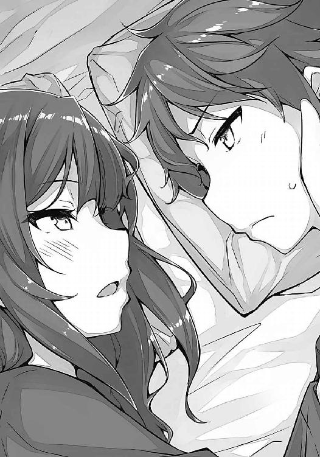
茶化した咲太を、麻衣は怒らなかった。戸惑うわけでもなかった。恥ずかしがるわけでもなく、ただおかしそうに笑っていた。
「もう寝よ。おやすみ」
ぐるりと体を捻って咲太に背中を向ける。
髪がしなやかに流れて、白い首筋が見えた。そのまま見ていたら抱き締めてしまいそうだったので、咲太は反対側を向いて、麻衣と背中合わせになった。
「ねえ、咲太」
「寝るんじゃないんですか？」
「今、私が震えながら『消えたくない』って言って、泣き出したらどうする？」
「背中から抱き締めて、『大丈夫だよ』って、耳元で囁こうかな」
「じゃあ、絶対に言わない」
「あれ、ご不満？」
「どさくさ紛れに胸とか触られそうだし」
「お尻は？」
「ダメに決まってるでしょ」
面倒くさそうに軽くあしらわれてしまった。
「......芸能界への復帰も決めたのに、消えてる場合じゃないのよ」
続いた言葉は、囁くような小さな声音だった。
「そうですね」
「ドラマに出て、映画もまたやりたいし......。舞台でお芝居もしたい。すごいって思える監督や共演者、スタッフさんたちと、いいお仕事をして、『あ～、生きてる』って感じたい」
「あとは、ハリウッド進出とかね」
「ふふっ、それもいいわね」
「今のうちにサインもらっておこうかな」
「今でも十分に価値があるわよ。私のサイン」
「あ、それもそっか」
「ほんと......消えてる場合じゃない」
「......」
「せっかく、年下の生意気な男の子とも知り合って、学校に行くのも楽しくなってきたのに......」
「僕は絶対忘れない」
背中合わせのまま、咲太はそっと声をかける。
「......」
返事はなかった。
「絶対に麻衣さんを忘れない」
「絶対なんてあるの？」
その質問を咲太はあえて無視した。
「だから、キスなんていつだってできますよ。今じゃなくて......急がなくても......僕じゃなくても。ハリウッド進出だって、麻衣さんなら余裕だと思う。他のなんだってできる。僕はそう思う」
「......」
少しの沈黙のあとで、
「......そうね」
と麻衣は答えた。
「残念。さっきのが、咲太が私のファーストキスを奪える最初で最後のチャンスだったのに」
「それ、先に言ってくれたらしたのに」
「もうダメ」
喉の奥で麻衣がくすくすと笑っている。
でも、すぐに収まると、
「......ありがと」
と言ってきた。
「私を諦めないでいてくれて、ありがと」
「......」
咲太はもう寝たふりをして答えなかった。これ以上、話していたら、やっぱり抱き締めてしまいそうだったから。
やがて、穏やかな麻衣の寝息が聞こえてきた。
咲太はそれを感じながら眠ろうとした。けれど、麻衣を隣に感じて、眠れるはずがなかった。
３
結局、咲太は朝まで一睡もできず、外が明るくなるまでの数時間を、隣で眠る麻衣のかわいらしい寝息を聞きながら過ごすことになった。
当然、変な気分にもなる。けど、思い切って顔を覗き込んだりしても、麻衣に起きる気配はなくて、逆にひとりで盛り上がっている自分が妙に子供に思えた。意識しているのは自分だけだと思うと虚しくなってくる。
ならば、さっさと眠ってしまいたいところだったのだが、隣に麻衣が寝ていることに加え、長距離移動の慣れない疲労感に体が驚いているらしくて、まったく眠くならなかった。芯の方が熱を持って疼き、一晩中咲太の邪魔をしてきたのだ。
そうして、無駄に時間だけが流れていき、カーテンの向こう側が明るくなってくる。
六時半を過ぎた頃、麻衣が目を覚ましたので、「おはよう」と朝の挨拶を交わした。それから、チェックアウトの準備に入る。とは言っても、殆ど手ぶらなため、咲太の準備などあってないようなものだ。
麻衣はそう簡単にはいかないらしく、まずはお風呂に入ると言い出した。
たっぷり三十分以上。
やっと出てきたかと思えば、他にも色々と準備があるからと言われ、無理やり部屋を追い出された。理不尽この上ない。
適当に時間を潰すために、咲太は昨日と同じコンビニに朝ごはんを買いに行った。なるべくゆっくりと歩いて......。
戻ったところで、クリームパンを一個ずつ食べ、ようやくチェックアウトをした。八時をゆうに回っていた。
大垣駅へと歩いて向かい、やってきた電車に乗り込む。これから数百キロの移動。ただ、昨日とは違い、名古屋からは新幹線を使ったので、随分早く咲太と麻衣は神奈川県は藤沢市まで帰ってくることができた。
マンションに帰り着いたのは、まだ午前中。さすがは夢の超特急。超速い。
一旦それぞれの家に戻り、三十分後にマンションの前に集合する。
「締りのない顔ね」
先に制服に着替えて下で待っていた麻衣は、あくびを嚙み殺す咲太の顔を見るなりそう言ってきた。
「麻衣さんは、今日も美人ですね」
「ネクタイ、曲がってる。持ってて」
咲太に鞄を押し付けた麻衣の手が襟元に伸びてきて、ネクタイを真っ直ぐに整えてくれる。
「まさか、こんなに早く麻衣さんと新婚プレイができるとは思いませんでした。ありがとうございます」
「バカは顔だけにしなさい」
咲太の手から鞄を奪うと、麻衣はひとりで歩き出してしまう。
「あ、待って」
早足で追いつき、隣に並ぶ。
見慣れたはずの街並みが、少しだけ懐かしく感じる。一週間くらい家を空けていたような気分が胸の中には居座っていた。
離れていたのは、昨日一日だけだというのに。
デートの約束時間に遅れたのだって、まだ昨日の出来事なのだ。それがすでに思い出に変わりつつある。
そんなことを考えていると、
「ふあ～」
と、あくびがもれた。さすがに徹夜のダメージは大きい。ここに来て急速に眠たくなってきた。
「なあに？ 寝不足？」
麻衣が、咲太の目を覗き込んでくる。たぶん、充血している。
「誰のせいだと思ってるんですか」
「私のせいだって言いたいの？」
「昨日、麻衣さんが寝かせてくれないから」
「咲太が勝手に興奮するからじゃない」
「どっちかと言うと、緊張してたんだけどな」
もう一度あくびをしながら本心を答えていた。
「咲太にも可愛げはあるのね」
「麻衣さんは神経図太すぎ。よく熟睡できましたね」
「子供の頃から撮影であちこち行ってたし、休憩時間に楽屋で寝てることもあったから。それに......」
途中で言葉を止めた麻衣は、悪戯を思いついた子供のような顔をしている。
「咲太が隣に寝てるくらい、なんともないもの」
「いいことを聞いたので、次の機会には色々と悪戯をしようと思います」
「実際、何かする度胸なんてないくせに」
咲太と麻衣が学校に到着したのは昼休み。
殆どの生徒が昼食を終えたあとのまったりタイム。一部の生徒がバスケットコートで遊んでいる賑やかな声が、中庭の方からは聞こえてきていた。
そんないつも通りの学校の雰囲気が、久しぶりという気がした。春休みとか、冬休み明けに学校に来たという気分。
昇降口で上履きに履き替えたところで、
「校内を見てくる」
と麻衣が言い出した。
「僕は、双葉のところ行ってきます。あ～、双葉っていうのは、麻衣さんのことを覚えてた友達で......」
「双葉ってことは女子よね？ 意外」
立ち去ろうとしていた麻衣の足が止まる。
「双葉は名字です」
実際、女子で間違ってはいないが......。
「そう。またあとでね」
廊下の奥へと歩き出した麻衣の背中を、咲太は何気なく見つめていた。その麻衣の脇を、集めたノートの束を抱えた女子生徒や、授業で使うスライドを持った地理のおじさん教師、あとは「バスケ部の先輩が超やばい」とか言って盛り上がる女子のグループが通り過ぎていく。
誰も麻衣を気にしない。視線を向けたりもしていなかった。
それを咲太は不思議に思わなかった。
この光景はいつものことだ。
学校内で麻衣はそういう立場に置かれている。
腫れもの扱いが終着駅にたどり着いたかのような姿。見て見ぬふりを通り越して、それこそ空気のような存在に前からなっていた。
麻衣を無視して成立しているこの雰囲気は、何かによく似ていた。
考えるまでもなく、麻衣のことが見えなくなった人たちの反応だ。それと同じ態度を、峰ヶ原高校の生徒たちは、以前からしていたのだ。それこそ、咲太が入学するよりも前から......。
そんな生徒たちの間を、麻衣が通り抜けていく。
その様子は、思春期症候群がもたらした光景と、やはりどこまでも酷似していた。
「......」
断片でしかなかった理解が、ひとつに繫がりそうな予感がする。
原因の正体が、ぼんやりと見えてきた気がした。
学校に原因が存在するかもしれないという理央の意見に、咲太の感覚が共感を覚えている。
「梓川」
声をかけられて咲太が振り向くと、白衣のポケットに両手を突っ込んだ理央が後ろに立っていた。
咲太の顔を見るなり、理央があくびをする。つられて咲太もあくびが出た。
「悪い知らせだよ」
いきなり理央にそう言われて、咲太は身構えた。
「私以外、桜島先輩のことを忘れているかもしれない」
「......っ!?」
眉をしかめる。確かに悪い知らせだった。
「少なくとも国見は覚えていなかった」
「本当か？」
理央が噓を言う理由はない。この状況で言っていい類の冗談ではないし、理央がそんな冗談を口にする性格でないことを咲太はよく知っている。
それでも、確認の言葉を咲太は反射的にもらしていた。噓であってほしかったからだと思う。
「桜島先輩の名前を出したら、国見は『誰だっけ、それ？』って困ってたよ。他の生徒がどうかはまだ確認してないけど......」
ならば、別の生徒に麻衣のことを聞こうと思って、咲太は周囲を見回した。けれど、その必要性はすぐになくなった。
麻衣が走って昇降口まで戻ってきたのだ。息を弾ませ、慌てた様子で......。表情は青白く怯えている。
呼吸を整えたあとで、麻衣は真っ直ぐに咲太を見つめると、
「まだ私が見える？」
と聞いてきた。
「はい。ちゃんと見えてます」
深く頷きながら答える。麻衣の表情から緊迫感が取り除かれていく。
「よかった......」
ふうっと吐き出された吐息は、安堵に包まれていた。
でも、どうしてだろうか。
どうして、咲太と理央にだけ見えて、他の生徒には見えないのだろうか。麻衣を忘れてしまっているのだろうか。
少なくとも昨日の段階で、咲太と理央、佑真......それと、古賀朋絵とその友人たちには麻衣が見えていたはずだ。
「そうだ。古賀朋絵！」
咲太はひとりで駆け出すと、一年生の教室へと向かった。
一階の教室をひとつずつ見て回る。朋絵の姿を見つけたのは四つ目の教室。一年四組。窓際の机をくっつけて、昨日見かけた友達と一緒にまだお弁当を広げていた。
ずかずかと教室の中へと入る。
先に友達が気づいて「あっ」と声を上げた。四人全員の目線が咲太を捉える。
「昨日の......」
朋絵が咲太を見て、ぽつりと口にした。
それを見て、咲太は教卓の前で足を止めると、質問を投げかけた。
「桜島麻衣先輩を知ってるか？」
古賀朋絵を含む四人の一年生は、顔を見合わせてこそこそと内緒話をはじめた。
「なにこれ、朋絵、どういうこと？」
「わ、わかんないよ」
「てか、さくら......まい？」
「誰？」
とかやっている。
「昨日、江ノ電藤沢駅の改札で、見ただろ」
朋絵たち四人が再び顔を見合わせる。各々、首を横に振っていた。
「どうして、忘れてんだ。芸能人の桜島先輩だぞ？」
咲太が一歩前に出る。
「よく考えてくれ。ほら、三年のすげえ美人で......そういう人がいただろ！」
さらに近づくと、朋絵は表情を強張らせていた。
「思い出してくれ！」
席に座った朋絵の肩に両手を置いた。
「わ、わかんないよ！」
怯えた様子で、朋絵は目に涙を溜めている。
「頼むよ！」
「いたっ」
手に力が入っていたことに気づく。
「咲太、やめなさい」
制止の声は耳元で聞こえた。咲太の手首を、麻衣の手が摑んでいる。
ゆっくりと、咲太は朋絵の肩から手を離した。
「悪い。どうかしてた。ごめん」
「う、うん......」
「ほんとごめん。邪魔したな」
再度、謝罪を口にして、咲太は重たい足取りで教室を出た。
「梓川」
遅れて追ってきた理央が、廊下の向こうからこっちに来いと手招きをしてくる。
「なんだよ」
理央が立ち止まったので、咲太は仕方なく麻衣を残して近づいていった。
「ひとつだけ心当たりがある」
声を潜めて、咲太にだけ聞こえるように理央は言ってきた。
ただ、その目は続きを言うべきか迷っているように咲太には見えた。
「言ってくれ」
「なあ、梓川......昨晩は寝たか？」
理央の話はそんな質問からはじまった。
その日の放課後、咲太は藤沢駅まで麻衣と一緒に帰り、駅で別れた。
こんなときだけど、咲太にはバイトのシフトがあって、休むわけにもいかなかった。麻衣からも、「そういうのはちゃんとしなさい」と言われた。
夜の九時まで眠たい目を擦りながら労働に励み、家に帰る途中、コンビニに寄った。
陳列棚を確認しながら、店内をぐるりと一周。
目的の栄養ドリンクは、レジ前の棚にゼリー飲料なんかと一緒に並んでいた。
一本二百円くらいのものもあれば、大盛りの牛丼が食べられそうな値段のやつもある。それどころか、二千円以上もする商品まで発見した。一体、それぞれに何が違って、どんなものが入っているのだろうか。
とりあえず、三本ほど手に取って、眠気覚ましのミント系ガムやタブレットと一緒にレジへ持って行った。
全部で二千円弱の出費。大垣までの往復分やビジネスホテルの宿泊代と、昨日から財布は軽くなる一方だ。もはや殆ど中身は残っていない。
とは言え、けちっている場合ではないのだ。
脳裏を過ったのは理央の言葉。
──なあ、梓川......昨晩は寝たか？
その質問に対して、
「一睡もしてない」
と咲太は答えた。そう答えることを理央はわかっていたようだった。
「私も一睡もしてない」
「......」
その意味がわからず、続きの説明を咲太は待った。
「ただの結果でしかないけど、理由はそこにあると思う。私は桜島先輩と一緒にいたわけじゃないし」
「......そうだな」
「前にした観測理論の話は覚えてる？」
「シュレーディンガーの猫」
「正直、バカげていると思ってたけど......」
そう言った理央の瞳は、少し離れたところに立ち尽くす麻衣の姿を映していた。どんな顔をするべきなのか、何か声をかけるべきなのか、理央はそれがわからずにいる様子だった。困惑が色濃く出ている。
「こうして目の当たりにすると、寒気が走るよ」
「思春期症候群に？」
「違う。そうなる前から、あの人がこの学校の中で空気のように扱われていたことに」
「そうだな」
「私自身も空気を読んで、さもこの状況が正しいことのように受け入れてた。何の疑問も抱くことなく」
「逆に、疑問に思わないからできるんだろ。何かまずいことをしているっていう自覚があれば、案外その通りには動けないんじゃないか？」
よくないことをしているとわかっていて、かっこ悪いと理解していて、情けないと知っていて、ダサいと把握していて......その上で、胸を張って、「クラスメイトを無視しています」なんて言えるやつはそうそういないと思う。どうかしている。
かえでに対するいじめが発覚した際、リーダー格の女の子がまさにそれだった。「何がいけないんですか？」と、けろっとしていた。
麻衣の件に関して言えば、原因は恐らく麻衣自身にもある。彼女は空気であろうとした瞬間があるし、周囲がそう反応したことを受け入れていたのだから。
消えたいと願い、空気のように振る舞ってもいた。演じていた。
「でも、だからこそ、糸口はこの学校の空気にあるように思える」
咲太の思考を読み取ったかのように、理央がぽつりともらす。
「桜島先輩にとって、この学校こそが猫を入れた箱なんだよ」
「......」
誰も麻衣を見ていない。見ようとしていない。麻衣は誰にも観測されていなくて、存在が定まっていなくて......だから、消えていく。しかも、いなくなったのではなく、いなかったことにされていく。誰にも認識してもらえなければ、この世に存在していないのと同じだから......。
悪寒が走った。
理央の言葉の意味を、体が理解したのだ。
要するに、現象の原因は学校であり、全校生徒の意識にある。それも、もはや無意識にやっている麻衣への無関心。心にも留めていない。そういう感情とすら言えないような感情が、思春期症候群を引き起こしているのではないかと、理央は言っているのだ。
そんな人の無意識を、どうやって変化させればいいというのだろうか。問題があることに気づいてすらいない。問題を問題だと思ってもいない。そうした生徒が、峰ヶ原高校には約千人もいるというのに。
彼らの麻衣への無関心を、関心に変える方法などあるのだろうか。
「......」
あまりにも巨大な暗闇が、目の前にあるような気がした。
それが悪寒の正体。原因の正体。咲太が倒さなければならない、敵と呼ぶべき存在の本当の姿。目には見えないけど、確かにそこに存在している『空気』。戦うなんてバカバカしいと咲太が思っている『空気』だ。
「でも、学校の空気が発端だって言うなら、なんで、学校と接点のない人たちまで、麻衣さんのことが見えなくなったりするんだよ」
「桜島先輩が、学校内の空気を外に持ち出したのかもしれない」
最初に咲太が湘南台の図書館で会ったときや、麻衣がひとりで江の島の水族館に行った頃ならそういう可能性も否定はできないと思う。麻衣は空気であろうとしていたし、咲太自身も原因は麻衣にあるように感じていたから。
けど、今に限ってそれはない。
麻衣はもう消えたいなどと考えてはいない。それは絶対だと言い切れる。芸能界への復帰を決めたし、昨晩はふざけてはいたけど、
──今、私が震えながら『消えたくない』って言って、泣き出したらどうする？
と、咲太に聞いてくれた。
──せっかく、年下の生意気な男の子とも知り合って、学校に行くのも楽しくなってきたのに......
とも言ってくれた。
あれは紛れもない、麻衣の本心だった。
「違ったとしても、空気なんて簡単に伝染する」
つまらなそうに理央が言う。
「みんな勝手に空気を読む時代だし、情報は一瞬で地球の裏側にだって届く。そういうとても便利な時代だよ」
否定の言葉を口にしようと思えばいくらでもできた。理央だって、今の説明が穴だらけだということくらい自覚しているだろう。それでも、確かに今はそういう時代だと納得できる部分があった。そういう......便利であると同時に、嫌な時代なんだと......。
「......」
だから、咲太は理央に言葉を返すことができなかった。そもそも、この段に至っては、現象が拡大した理由を論じることに、咲太は意味を感じなかった。目の前にある現実。それがすべてだ。
「話を戻すけど......」
咲太の沈黙を見て、理央は慎重に最後の説明を付け足してきた。
「認識と観測がキーになっているのであれば、人の意識が働かない睡眠が、記憶をなくす切っ掛けになっているという考え方は、私なりには納得できるんだよ」
起きているときは、その人のことを考えることができる。見ることができる。けれど、寝ている間は相手を意識することができない。相手を認識する力が弱まっているとでも言えばいいのだろうか。その結果、意識が途切れたタイミングで、空気化の現象に吞み込まれてしまう。
「......」
昨晩のことを思い出すと、肝が冷えた。もし、あのときに眠っていれば、今の咲太は麻衣のことを忘れてしまっていたかもしれないのだから......。
眠気覚ましのガムを嚙みながら家に帰ると、咲太は生まれてはじめて栄養ドリンクを飲んだ。ジュースとは明らかに違った奇妙な甘み。少し薬っぽい風味が漂う飲み物だった。
決して不味くはない。飲みやすいは飲みやすい。ただ、気分的に味わう気にはなれなかった。
あまり期待していなかった効果の方は、はっきりと体感できるレベルで現れた。目が冴えて意識がすっきりしてくる。
「お兄ちゃん、何を飲んだんですか？」
キッチンに置いた瓶を見て、かえでが首を傾げている。そろそろ夜の十一時。普段であれば、かえでは寝ている時間なので、だいぶ眠そうだ。目がとろんとしてきている。それでも、なかなか部屋に戻ろうとしないのは、昨日、咲太が家を空けたことを気にしているからだと思う。
かえで曰く、
「昨日のぶんを取り戻すまで今日は寝ません」
とのことだった。
そんなわけで、しばらくはかえでのおしゃべりに付き合った。主に最近読んだ本の話題。
最初こそ、「今日は朝まで寝ません」と意気込んでいたかえでだったが、蓋を開けてみれば十二時前には、猫のなすのと一緒にソファで寝てしまった。
お姫様抱っこで持ち上げて、かえでの部屋に運び込む。無数の本に囲まれた室内。足元には本棚に入りきらない小説が、あちこちに積まれている。足の踏み場を見つけながらベッドに近づき、咲太はかえでを寝かせた。
「おやすみ」
毛布を掛けて電気を消した。ドアを静かに閉めて外に出る。
咲太はミントタブレットを大量に口に放り込んでから、自室に戻った。口とか鼻がすーすーする。
意識がはっきりしているうちに、やっておかなければならないことがある。
机の前に座って、ノートを開いた。別に勉強をしようというわけではない。明日からは中間試験なので、多少はやっておいた方がいいのだが、成績など二の次だ。
今は最悪の事態に備えておく必要があった。
シャーペンの頭をカチカチと二度押して、咲太はノートに綴りはじめた。
この三週間......麻衣と出会ってから今日までの日々の記憶を......。
一晩中、書き続けた。
──五月六日
野生のバニーガールと出会った。
その正体は、峰ヶ原高校の三年の先輩。あの有名人。『桜島麻衣』だ。
これが切っ掛けで、これが出会い。忘れられるわけがない。
忘れても絶対に思い出せ。しっかりやれよ。未来の僕。
４
三日間の日程ではじまった中間試験の初日は、散々な結果だった。
昨晩はまったく勉強をしていなかった上に、徹夜も二日連続となると、集中力など皆無に等しい。ちゃんと考えようとしても、問題文を読んでいる途中で思考は停止して、頭は真っ白になってしまう。試験用紙を見ているだけ。目に入っているだけという状態。
試験後、咲太は隣の教室を覗いて、双葉理央の姿を捜した。教室でも白衣を着ているので、簡単に見つけられる。
理央も咲太に気づいたらしく、帰り支度をして廊下に出てきた。
「お前、覚えてるか？」
緊張しながら、そう聞いた。
「は？ なんのこと？」
訝しげな理央の視線。
「いや、いいんだ」
「そ、私、実験室行くから」
「じゃあな」
軽く手をあげて送り出すと、理央は白衣の裾を揺らしながら遠ざかっていく。突然、振り向いて「冗談だよ」と言ってくれることを期待したがダメだった。そのまま、理央は階段へと消えた。
「お前の仮説は正しかったわけか」
理央は理央自身が麻衣を忘れることで、そのことを証明したのだ。
これで、残されたのは咲太ひとり。
麻衣を覚えていて、麻衣の声が聞こえて、麻衣を見ることができるのは、咲太ひとりだけ。
「すげえ、燃える展開だな」
今はこの逆境を、無理やりでも闘志に変えるしかなかった。
翌日の五月二十八日。中間試験の二日目も、出来栄えの方は芳しくなかった。でも、そんなことをいちいち気にはしていられない。
眠い。とにかく眠かった。
瞬きをするたびに、睡魔の誘惑に負けそうになる。そのまま、目を閉じていたくなる。
デートをした日曜日から一度も寝ていない。今日は水曜日。徹夜は四日目に突入している。
限界なんてとっくに過ぎていた。
ずっと吐き気がしている。実際、二度ほど吐いた。以降、喉に何かが引っかかっているような違和感がある。
体調は最悪。脈がおかしい。不規則な上、常にどくんどくんと高鳴っている。そのくせ、血色は悪くて、朝の電車が一緒になった佑真からは、「ゾンビみたいになってんぞ」と、真顔で心配された。
唯一の救いは、試験中ということでバイトのシフトを外しておいたこと。こんな状態で働くのはさすがに無理だ。
とにかくまぶたが重い。目が開かない。太陽の光がしんどい。太ももをつねる程度では、まったく目が覚めなくなっていた。シャーペンを突き刺すくらいしないと、刺激として受け取れなくなっている。
「なんか疲れてるけど？」
帰りがけ、麻衣にそう声をかけられた。
麻衣は、咲太にしか見えなくなってしまってからも、毎日学校に来ている。「他にすることないし」と麻衣は言っていたが、胸の内は穏やかではなかったと思う。日中、ひとりで家にいるのは不安だろうし、心のどこかでは、「今日学校に行けば、元に戻っているかもしれない」という期待だってあったはずだ。
「試験中は、いつもこんな感じですよ。一夜漬けばっかなんで」
「普段からきちんと勉強していないからそういう目に遭うのよ」
「先生みたいなこと言わないでほしいな」
「咲太がどうしてもって言うなら......」
「ん？」
「勉強、見てあげてもいいわよ」
「麻衣さんと一緒の部屋にいたら、エロいことしか考えられなくなるんで、やめときます」
「......」
咲太が断るとは思ってなかったのか、麻衣は露骨に驚いた様子だった。
「そ、そう......なら、いいんだけど」
「じゃ、また明日」
マンションの前で麻衣とは別れる。
エレベーターに乗り込むと、咲太は安堵のため息をもらした。今のところ、麻衣に寝ていないことを話してはいない。話せば、ずっと寝ないなんていう無茶はやめるように言われるに決まっている。
余計な心配はさせたくなかったし、咲太が勝手に決めてやっていることで、麻衣に責任など感じてほしくはなかった。
帰宅後、咲太はリビングで物理の本を開いた。大垣から戻ったその日のうちに、理央から借りておいたものだ。解決策のヒントでも見つかればと思っている。
量子論を嚙み砕いて説明している入門編的な内容。けれど、それすらも難易度は高くて、頭に入ってこない。中間試験の勉強をそっちのけで、一昨日から読んでいるのだが、ページをめくる手は重たかった。
徹夜続きのまぶたに、物理の本は相性が悪い。強烈な睡眠薬と同じだ。消えそうな意識を気合で繫ぎとめて、なんとか説明文を目で追っていく。
麻衣を助けたい。その一心で咲太は動いていた。
一時間ほどしたところで、同じくリビングで読書をしていたかえでがお腹を鳴らした。何も言わずにソファから立ち上がり、咲太は夕食の準備をして、かえでと一緒に食べることにした。
「お兄ちゃん、顔色悪いです。大丈夫ですか？」
テーブルの真向かいでかえでが何かを言っている。それが視界には収まっているのに、咲太は返事を忘れた。
「......」
「お兄ちゃん？」
「あー、ん？」
眠すぎて思考が停止している。
「大丈夫ですか？」
「今、試験中だから」
言い訳になっているのか自信を持てない。
「無理はしないでください」
「うん、そうだな」
とは言え、無理だろうとなんだろうと、咲太は眠るわけにはいかないのだ。
寝たら麻衣を忘れてしまう。
必ずそうなると決まっているわけではないけど、その可能性は極めて高い。
そうである以上、やっぱり咲太は眠ってはいけないのだ。
「ごちそうさま」
「ごちそうさまでした」
かえでとの夕食が終わると、咲太は散歩がてらコンビニへと出かけた。
食後に座っているのは危ない。立っていても寝そうなくらいなのだ。現に、今日は通学中の江ノ電の車内で、吊り革を握ったまま寝るところだった。がくっと膝が折れて、前に座ったスーツのおじさんに膝蹴りをかましたおかげで、辛うじて目を覚ましたが、あれは本当に危なかった。
コンビニでは栄養ドリンクを買った。大盛りの牛丼クラスの値段がする商品。繰り返し飲み続けたせいか、効果は回数を重ねるごとに落ちてきている。そのくせ、反動は大きくて、二、三時間後に猛烈に眠くなる。それでも、飲まないよりは全然よかった。
財布をズボンの後ろポケットに差しながら店を出る。
外の風が頰を撫でる。その途端、咲太の足はつんのめるようにして止まった。
正面に人がいたのだ。
体は悪戯がばれたときのような焦りを感じている。
じんわりと嫌な汗をかいた。
「何を買ったの？」
そう聞いてきたのは、仁王立ちした私服姿の麻衣だった。
回らない頭で必死に言い訳を探したが、何も思い浮かばない。極度の睡眠不足が、頭をバカにしていた。
「あー、えー」
近づいてきた麻衣の手が、コンビニのレジ袋を奪っていく。中身を確認すると、
「やっぱり、寝てないんだ」
と核心を突いてきた。
「......」
ばれていないと思っていたのは、咲太の勘違いだったらしい。今の咲太の体調が悪いことなど、一目見ればわかるはず。佑真はおろか、かえでにも指摘されたくらいだ。麻衣が気づいてない方がおかしかった。
「隠し通せてるとでも思ってた？」
「だったら、いいなとは思ってた」
「バカ。そんなのいつまでも続くわけがないでしょ」
「だとしてもこれしか思いつかなかったんですよ」
ふてくされた子供のような口調になってしまう。
長続きしないことなど百も承知だ。人間、寝ないで生きていけるわけがない。だいたい、こんなことをしても、何の解決にもならない。無駄かもしれないってことはわかっていても、その無駄かもしれないことをするしか咲太には道がなかった。
麻衣を苦しめているわけのわからない現象。それを解決する手段はまだ見つかっていない。解決する方法があるのかどうかも定かじゃない。
それでも、探さなければならない。見つけられるまで咲太は寝るわけにはいかないのだ。
たとえ見つけられなくても、簡単に諦めて眠るつもりはなかった。
一日でも長く麻衣を覚えていたい。一分でも長く麻衣の側にいたい。一秒でも長く、麻衣の孤独な時間を減らしたいと咲太は思っていた。殆ど働かない徹夜続きの頭では、そんなことしか考えられなくなっていた。
「青い顔をして、ほんとバカなんだから」
「今回は、僕もそう思う」
「ほら、帰るわよ」
咲太にレジ袋を突き返して、さっさと麻衣が住んでいるマンションの方へと歩き出す。何も考えずに、咲太はただついていくことにした。
家に戻ってきたのは午後八時過ぎ。
かえではお風呂タイムらしく、洗面所に行くとご機嫌な歌声がドア越しに聞こえた。歌っているのは、家電量販店のＣＭソング。短い歌なので、何度もループしている。
自室へ入ろうとした咲太だったが、ドア口で一度立ち止まった。
部屋の真ん中に、折り畳み式のテーブルを勝手にセットして、座布団の上に座っている麻衣がいたからだ。
「こんな時間に男子の部屋に上がったら、何をされてもいいって言ってるのと同じなんでしたよね？」
「八時はセーフ」
「ならそれはいいとしても、なんで麻衣さん家までついてきてんの？」
「付き合ってあげる」
「やった、愛の告白だ」
「違うわよ。わかってるでしょ。今夜も寝かせないって言ってるの」
「やば、興奮してきた」
「咲太が寝そうになったら、引っ叩いて起こしてあげる」
「うわー、ハードな夜になりそう」
なにやら麻衣は楽しそうだ。一体、何発くらい引っ叩くつもりなのだろうか。変な趣味に目覚めなければいいが......。
「ほら、座りなさい」
麻衣が床の絨毯にぽんと手を置く。
ひとまず、その場所まで移動した。
「教科書とノートは？」
「そんなのどうすんの？」
「明日まで中間試験なんだから勉強よ。見てあげる」
「えー、いいよ」
今勉強なんかしても頭に入りっこない。眠気が増すだけだ。
「てか、麻衣さんって勉強できる人？」
「一年生の最初は仕事で学校に行ってなかったからあれだけど、二年生になってからは、成績表に八より小さい数字はないわよ」
峰ヶ原高校の成績は十段階。一が最低で、十が最高の評価。つまり、八より小さい数字がないというのは、とても優秀ということだ。
「意外とガリ勉なんだ」
「ヒマな時間に勉強をしてただけ」
「ヒマだったら普通は遊ぶのに」
「いいから、やりなさい。私のことが咲太のすべてじゃないでしょ」
「今は、そのつもりだよ」
そうでなければ、寝ないなどという体当たり作戦を決行したりはしない。
「仮に私のことが解決したとして、このままだと咲太の手元に残るのは、惨憺たる結果の答案用紙だけになるのよ」
「眠くなるから正論はやめてください」
「いいから、勉強はしなさい」
「やる気が出ません」
「私が家庭教師をしてあげるのに？」
「バニーガールの格好をしてくれたら、やる気が出るかも」
「咲太って誰にでもそうなわけ？」
「こんなこと、麻衣さんにしか言わない」
「全然うれしくない」
あくびが出る。目の端に滲んだ涙が痛いほどに沁みた。
「だいたい、バニーガールの格好なんてしたら、咲太の脳内はエッチなことばっかりになって、勉強にならないじゃない」
「それは盲点だった」
殆ど頭は回っていない。思いつきが口から出ているだけになっている。
「じゃあ、そうね......テストで百点が取れたらご褒美をあげる」
麻衣からの魅力的な提案に、少し体が前のめりになった。
「それって、なんでもしてくれるってやつ？」
「はいはい、してあげる」
どうせ無理だと踏んでいるのか、麻衣はあっさりオッケーしてくれた。
「明日は、数Ⅱと現国か」
まずは時間割を確認。わずかにだが目が覚めてきた。
「数Ⅱなら百点取れるかも」
「え？ 咲太って頭いいの？」
狼狽した声を麻衣が出す。
「普通。理系科目はそこそこいけるけど」
だからこそ、ここは現国を捨てて、数Ⅱ一本で勝負をすべきだ。元々、答えの表現に多少の曖昧さが含まれる現国は、微妙な減点が発生するので百点を狙いにくい。逆に、数Ⅱの場合、答えは明確に存在するし、それを導くための途中式さえきちんと書けば、妙な減点を食らわずに満点を叩き出せる。
早速、数Ⅱの教科書を開いた。
でも、それを麻衣の手が奪っていく。
「なんで、勉強しろって言った麻衣さんが僕の邪魔をするかな」
「なんでもって言っても、本当になんでもしてあげるわけじゃないからね」
口を尖らせて、もじもじしていた。
「そんな無茶は言わないって」
「本当でしょうね」
「『一緒にお風呂』で我慢する」
「アウトよ、それ」
「えー」
「あ、当たり前でしょ！」
「水着の着用ありでも？」
「お風呂で水着って、どうしてそういうマニアックなことを思いつくわけ？」
軽蔑の眼差しが、ぐさぐさと咲太に突き刺さる。これはこれでいい刺激だ。
「なら、バニーガールの衣装で膝枕をしてもらおう」
「これなら大丈夫って顔をして、何を言ってるんだか」
今のは結構本気だったのだが、麻衣は取り合ってくれない。
「こないだできなかった鎌倉デートをするっていうのは？」
急に大人しい提案にしたせいか、麻衣はきょとんとしていた。
「いいけど......本当にそれでいいの？」
「麻衣さんはもっと過激なやつをご所望かぁ」
「そんなこと言ってない」
麻衣の指が頰に触れたかと思うと、思い切りつねってくる。
「あ～、目が覚めるな～」
「......ほんと、年下のくせに生意気なんだから」
それから二時間ほど、咲太は麻衣に付き添われて勉強をすることになった。
ただし、自信のある数Ⅱは却下され、現国の方をみっちりとやらされるはめに......。
「『咲太の未来をホショウしてくれる人は誰もいない』の『ホショウ』と、『咲太の老後には何のホショウもない』の『ホショウ』をそれぞれ漢字にしなさい」
「先生、問題文に悪意を感じます」
「いいから書いて」
とんとんと麻衣が咲太の前に置かれたノートを指で小突く。
とりあえず、『保障』と『保証』のふたつを書いた。
「『咲太の未来をホショウしてくれる人は誰もいない』の『ホショウ』はどっち？」
「それは......」
区別がついていなかったので、それとなく『保障』の方へ指を動かしつつ、咲太は麻衣の様子を窺った。視線と表情の変化から、どっちが正解かを読み取ろうと思ったのだ。
けれど、そのズルはあっさり麻衣に見破られてしまう。
ばっちり目が合うと、とてもやさしい笑みを浮かべてきた。ちゃんと目も笑っているからなおのこと恐ろしい。
「『姑息なカンニングをする咲太の安全はホショウできない』の『ホショウ』でもいいわよ」
「すいません。ヒントをください」
「『証』の方は請け負うって意味で、『障』の方は守るっていうような意味」
「ということは、『麻衣さんの幸せな未来は僕が保証します』は『保証』で、『ふたりの将来には充実した保障がある』は『保障』ってこと？」
「勝手に問題文を変えないの」
丸めた教科書で軽く頭を叩かれた。
「そういうとこ、かわいくない」
どうやら答えは正しかったようだ。同じ問題が出れば、たぶん、ちゃんと答えられると思う。今のふてくされたような麻衣の表情と一緒に、しっかり記憶した。
その後も、麻衣は似たような問題をいくつも出題してきて、咲太はゲーム感覚で漢字の勉強に勤しむことができた。
とは言え、さすがにいつかは集中力も切れる。
同音異義語の問題が一段落したところで、
「お茶淹れてきます」
と言って、咲太は立ち上がった。
「コーヒーでいいですか？ インスタントだけど」
「うん」
麻衣はぱらぱらと漢字問題集をめくっている。次に咲太に出す問題を物色中らしい。
咲太は部屋に麻衣を残し、キッチンにやってくると、ポットでお湯を沸かした。
待っている間に、かえでの部屋の様子に目をやる。電気は消えているのでもう寝たようだ。
インスタントコーヒーを入れたマグカップをふたつ持って自室へと戻る。
ひとつを麻衣の前に置くと、
「お砂糖とミルクは？」
と、聞かれた。
眠気覚ましが目的の咲太は、ブラックでいただくつもりだったのですっかり忘れていた。
「今、持ってきます」
再び部屋を出てスティックシュガーとミルク、スプーンを用意する。
戻ると、麻衣は相変わらず漢字問題集を眺めていた。
「麻衣さん、これ」
「ありがと」
受け取った砂糖とミルクを麻衣がマグカップに落とす。スプーンでゆっくりとかき回していた。
そのひとつひとつの女の子らしい仕草を堪能しつつ、咲太はコーヒーに口を付けた。黒くて苦い液体が胃の中に落ちていく。その熱さが、ほっとした気持ちにしてくれる。
「妹さんは？」
「もう寝たみたいです」
一時間ほど前に一度咲太の部屋にやってきたのだが、咲太が勉強しているのだとわかると、「がんばってください」とだけ言って出て行ったのだ。
「麻衣さんは一人っ子？」
なんとなくそう思い込んでいた。
「妹がいる」
マグカップを麻衣は両手で口元に持っていく。
「あ、そうなの？」
「あの母親と離婚した父親がいて......その父親が再婚してから生まれた子だから、半分だけだけど」
「かわいいですか？」
「私ほどじゃない」
当たり前だと言わんばかりに、麻衣は即答した。
「うわー、大人げねー」
そんな話をしていると、なんだか頭が急にぼんやりしてきた。
少しくらくらする。まぶたもやたらと重い。
「自分の方がかわいいって自覚があるくせに、別の誰かのことを『かわいい～』とか言ってる女が、咲太は好きなの？」
「それ、嫌いなタイプ」
「でしょ？」
「だからって、妹さんまで......」
意識的に止めたわけではないのに、言葉が最後まで続かない。
だんだんと感覚が体から遠のいていく。
まずいと思っても止められない。
体を支えるために、テーブルの縁を摑んだ。
もう目は半分も開いていない。
「よかった。ちゃんと効いたみたいね」
顔を上げると、麻衣の複雑な表情が狭い視界の中に入った。やさしい眼差しで咲太を見ている。でも、その奥には確かな不安が宿り、目尻には心細さが滲んでいた。
「麻衣さん......なにを......」
細くて綺麗な麻衣の指が何かを握っている。
小さな瓶。ラベルには睡眠導入剤と書いてある。
「なんで......」
声に力が入らない。
「咲太はよくがんばったわ」
「僕はまだ......」
体を起こそうにも力が抜けていく。
「私のためにがんばってくれた」
「......違う」
「だから、もう十分。もういいから」
麻衣の手が伸びてきて、そっと咲太の頰を撫でる。あたたかくて、心地よい感覚。くすぐったくて、ぞくぞくもした。けれど、その感触も体から遠のいていってしまう。
「よく......ない......」
ちゃんとしゃべれている自覚はなかった。
「元々、私はひとりだったんだから大丈夫よ。咲太に忘れられるくらいなんでもない」
麻衣の輪郭がぼやけていく。なおも、麻衣の手は頰に添えられたままだ。指先が耳の下をなぞっていく。
「それでも、今日までありがとう」
お礼を言われるようなことはまだ何もしていない。
「それと、ごめんね」
謝ってもらうようなことだってなにひとつとしてない。
「もうゆっくり休んで......」
やさしい声に導かれて、咲太はついに目を閉じた。意識は一瞬にして、心地よい眠りへと落ちていく。
「おやすみ、咲太」
深く深くへと沈んでいった......。
大丈夫。
今はまだ辛くて悲しい気持ちがあるかもしれないけど......
朝になれば、その気持ちも私の記憶ごと全部忘れていると思うから。
何も心配しないで、ゆっくり眠って。
この三週間、とても楽しかった。
さよなら、咲太。
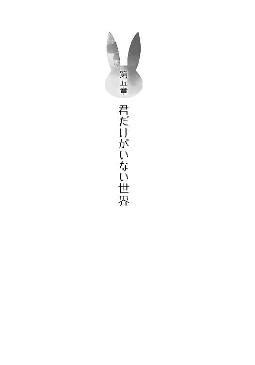
１
体が揺れている。
ゆさゆさと誰かに揺すられている。
「......ちゃん」
遠くの方から声が聞こえた。
「......です」
次第に近くなってくる。
「......お兄ちゃん」
聞き覚えのある声。
「お兄ちゃん、朝です」
真っ暗だった世界に、白い光が差していく。
「......ん？」
意識が覚醒すると共に、咲太はゆっくりと目を開いた。
寝ぼけてぼやけた視界の中には、ベッドに身を乗り出して覗き込んでくるかえでの顔があった。中途半端に開いたカーテンの隙間から差し込む光が目に痛い。
「今日まで試験ですよね？ 遅刻します」
さらに、ゆさゆさとかえでが体を揺すってくる。
「ああ、うん、そうだ。中間......ふあ～」
あくびを嚙み殺しながら、咲太は上半身を起こした。
全身がだるい。風邪の引きはじめのような感じ。ぼんやりと熱を持っている。けれど、具合が悪いと言うよりは、とても疲れているだけ......と表現した方が正しい気がした。
二度寝したい気持ちを押し殺して、咲太は疲労感に抗いながらベッドを抜け出した。中間試験があるのに欠席や遅刻はまずい。追試になれば何かと面倒だ。
時計は七時四十五分を示している。学校までは、まず藤沢駅まで徒歩で十分。そこから電車に揺られること約十五分。七里ヶ浜駅で下車してから教室までは五分といったところだ。だいたい三十分はかかる。
八時には家を出ないといけないので、あまり時間はなかった。
「助かったよ、かえで。起こしてくれて、ありがと」
「お兄ちゃんを起こすことは、かえでの生き甲斐ですから」
かわいらしくにっこりと微笑んでいるが、素直に褒める気にはなれない。
「かえではもっと他に人生の潤いを見つけた方がいいぞ」
「お兄ちゃんのお背中を流すとかですか？」
「僕以外のことでだ」
「いやです」
真顔で拒否されてしまう。
「兄としては、妹の将来が心配だよ」
そんなことを言いながら、咲太は着替えるためにクローゼットを開けた。
制服のＹシャツをハンガーから外す。その際、手が滑ってしまい、Ｙシャツは下にあった紙袋の上にかぶさるように落ちた。
「なんだっけ、これ」
Ｙシャツを拾いながら、紙袋の中身を覗き込む。
横からかえでも顔を突き出してきた。
ふたりの視線が中にあるものを同時に捉える。
「......」
「......」
短い沈黙が部屋を満たした。
「お兄ちゃん、こ、これはなんですか？」
紙袋の中身を指差し、かえでは動揺して声を震わせている。
それは咲太も聞きたかった。
お尻のところに白いボンボンがついた黒のレオタード。同じく黒のストッキングにハイヒール。さらには蝶ネクタイ。白のカフス。そして、それらをまとめる象徴的なウサ耳のヘアバンドが紙袋からは出てきたのだ。
どこからどう見てもバニーガールの衣装。
「かえでに着せようと思ったのかな」
可能性はそれくらいしかない。
「え？」
驚いて硬直したかえでの頭に、とりあえずヘアバンドだけ装着してみた。
「うん、悪くない」
「き、着ません！ こういうセクシー路線の服は、かえでにはまだ早いです！」
危機を察知したかえでは、そそくさと部屋から逃げ出していく。
朝から、嫌がる妹を追い回す趣味もないので、咲太は衣装を紙袋に戻した。元々置かれていたクローゼットの中にしまっておく。
「ストレス溜まってんのか、僕は」
Ｙシャツの袖に腕を突っ込んでボタンを閉じる。制服のズボンを穿いて、ネクタイは適当に締めた。少し曲がっている。
「......」
いつもは気にせずに出かけている。けど、どういうわけか、今日は直そうという気になった。解いてから締め直す。今度は真っ直ぐ。
ブレザーを羽織る前に、鞄に教科書を放り込む。机の上に置かれたノートが目に留まり、咲太は手に取ってみた。
「これ、なんだっけ」
ぱらっとページをめくる。つらつらと文章が書かれていた。
現国のノートかと思ったが、よく見ると違うとわかる。
冒頭に注意書きの文言がまずあって、中身は日記のような内容になっていた。
──この先に記されていることは、正直、信じられないようなことだと思うけど、全部本当のことなので、必ず最後まで読むように。必ずだ！
──五月六日
野生のバニーガールと出会った。
その正体は、峰ヶ原高校の三年の先輩。あの有名人。『 』だ。
これが切っ掛けで、これが出会い。忘れられるわけがない。
忘れても絶対に思い出せ。しっかりやれよ。未来の僕。
これは反応に困る。
「僕の黒歴史というやつか」
多感な思春期。色々な気の迷いから変な妄想を膨らませることもあるのだろう。なんでこんなものを書いたのかは覚えていないが、筆跡は確かに咲太のもの。自分の字だということは疑いの余地がない。となれば、やはり咲太が書いたものなのだ。
しかし、見れば見るほどに痛々しい。
その後も、空想の彼女らしき人物についての記述が延々と続いている。ページにしてノート一冊分。駅のホームで話したこと。江ノ電の中で交わした言葉。デートをしたり、一緒に大垣という街にも行ったことにもなっている。
数日前、確かに咲太は大垣に行ったが、それはあの日突然、「ここではないどこかへ行きたくなった」から、電車に飛び乗ったのであって、残念ながらひとり旅だった。
「......」
ただ、気になるのは所々にある空欄。誰かの名前を当てはめればしっくりくるような文章の途中に、ぽっかりと穴が開いている。四文字か、五文字分だろうか。
「彼女ができたら、埋めろってことか？」
ますます痛々しい。これは、間違っても他人の目に触れるようなことがあってはならない。早めに処分した方がよさそうだ。
はっきり言って、人生の汚点と言っていいレベルの代物。
時折、自分自身に語りかけるような文章が混ざっていて、それがなおのこと痛々しかった。全身が恥ずかしさで痒くなる。
時計が八時を知らせる時報をぴぴっと鳴らし、咲太は急いでいたことを思い出した。
ノートをゴミ箱に放り込み、ブレザーを羽織って鞄を摑むと、
「いってきます」
と、かえでに告げて、咲太は学校へと向かった。
２
駅まで約十分の道を、咲太は少し急いで歩いた。
住宅街を通り抜け、橋を一本渡って大通りへ出る。いくつか信号に捕まりながら、駅近くの繁華街へと足を踏み入れた。パチンコ店や家電量販店の建物を脇に眺めているうちに、駅の看板が見えてくる。
朝の藤沢駅はいつも通りの雰囲気だった。この時間帯は、通勤通学のサラリーマンと学生たちが、いくつかの流れを作っている。駅から出てオフィスに向かう人。乗り換え電車のホームに向かう人。咲太は連絡通路を通って、江ノ電の藤沢駅へと急ぐ人の一員だ。
咲太が改札口を抜けたとき、普段使っている出発時刻の電車はまだホームにいた。息を整えながら、一番前の車両に乗り込む。
奥側のドア脇に立つと、近づいてきた人物に声をかけられた。
「よっ」
軽く手を挙げて挨拶をしてきたのは国見佑真だ。
「おう」
電車が走り出すと、吊り革に両手で摑まった佑真が、咲太の顔をまじまじと観察してきた。
「今日はだいぶ顔色いいな」
「ん？」
「昨日までゾンビみたいな顔してたろ？ 咲太って試験前に一夜漬けとかするタイプだったっけ？」
「いや、諦めてさっさと寝るタイプ」
「だよな」
昨日も割と早く寝たはずだ。夜の九時だか、十時ぐらいまでしか記憶がない。テスト前だというのに、普段より早く寝ている。
何気なく電車内に目を向けると、峰ヶ原高校の制服を何人も見つけることができた。中間試験の結果を一点でも上げるために、教科書を開いている生徒がたくさんいる。
佑真も鞄から数学の教科書を引っ張り出すと、公式のおさらいをしていた。
ちょいちょい佑真の勉強の邪魔をしているうちに、電車は腰越駅を過ぎて、窓の外には海が広がった。
すると、誰かに見られているような感覚に捉われる。
「......」
気になって、咲太はそれとなく振り向いた。
「どした？」
咲太の行動を不思議に思ったのか、佑真が怪訝そうな顔を向けてくる。
「いや、視線を感じたっていうか」
言っている途中で、ひとつ隣のドアの前に立った女子生徒と目が合った。まだ初々しさの漂う峰ヶ原高校の新しい制服。古賀朋絵だ。
「ん、あの子？ 一年生だろ？」
朋絵が露骨に視線を逸らしたので、佑真もわかったらしい。
「国見も知ってるのか？」
「よくバスケ部の練習を、隣にいる友達と一緒に見に来てるよ」
朋絵の横には、見覚えのある一年生が確かにいた。
「あのふたり、結構かわいいって部員の中じゃ、評判いいんだよね」
「なるほど、つまりお前を見てたのか」
勘違いした自分が猛烈に情けなくて恥ずかしい。
「いや、それはないと思うけど」
佑真は教科書に意識を戻している。
「なんで？」
「練習見に来るお目当ては、三年の先輩っぽいし」
「ふ～ん」
「それよか、クラスメイトの名前もちゃんと憶えてない咲太が、一年のこと知ってるとか珍しいな？ なんかあったわけ？」
「ちょっとな」
「お、意味深。教えろよ」
勉強を放棄した佑真が、にやけながら肩をぶつけてくる。
「単に尻を蹴り合った仲というだけで、何もない」
あれはこの前の日曜日。迷子の女の子をめぐり、おかしな誤解が生じて、おかしな展開に発展してしまったのだ。
「尻を蹴り合っただけで、十分異様な関係だろ......」
「そういうこともあるって」
「今んとこ、俺の人生にはないんだけど......咲太はどこへ行こうとしてるわけ？」
「ここではないどこか、かな」
「なんだそりゃ」
話は終わりだという合図のつもりで、咲太は窓の外に視線を戻した。
何かが心に引っかかっている。
古賀朋絵との出会いに関してはいい。けれど、そこへたどり着くまでの経緯を、咲太はなぜだか思い出せていなかった。
七里ヶ浜駅に電車が到着すると、峰ヶ原高校の制服を着た生徒たちが、ぞろぞろと小さなホームに降りていく。
咲太もその一部だ。
潮の香りを感じながら、校門までの短い道を佑真と並んで歩いた。
周囲からは、「試験、やべえ」とか、「全然勉強してない」とか、「え～、私も～」とか、「ああいうやつに限って、やってんだよな」とか、友人同士のおしゃべりが聞こえてくる。
全校生徒にとって、試験という共通の問題が立ちはだかってはいるが、それを除けばいつも通りの通学風景だ。
日常の景色。
毎日のように繰り返されている似たようなやり取り。
特別楽しいことはないけど、嫌になるほど面倒なこともない。
みんながそれなりにやっている。
そんな『普通』が咲太の目の前にはあった。
ふたり組の一年生が咲太と佑真を小走りで追い抜いていく。古賀朋絵とその友達の女子。試験が終わったあとの打ち上げについて、カラオケがどうとか相談している様子だった。
「咲太は？ 試験後予定あんの？」
「バイト。国見は？」
「部活。大会も近いしな」
「そうか、それはよかった」
「ん？ なにが？」
「デートとか言われたらむかつくだろ」
「それは週末のお楽しみ」
「国見って、ほんとやなやつだよなあ」
「それを口に出す咲太もな」
「思ってるだけのやつよりはいいだろ」
軽口を叩き合っているうちに、咲太と佑真は昇降口にたどり着いていた。
下駄箱から上履きを出して履き替え、二年の教室がある二階へと上がる。
クラスが違う佑真とは廊下で別れて、咲太はひとり二年一組の教室に入った。
窓際の一番前の席に座る。
今日の試験は一時間目が数Ⅱで、二時間目が現国。
焦った様子で最後の悪あがきをするクラスメイトもいれば、入念にノートを見直して試験に備えるクラスメイトもいる。中には諦めて寝ているやつも。斜め後ろの席に座った上里沙希に至っては、朝からポッキーをぱくついている。試験に備えて脳に糖分を回しているのだろうか。
なぜだかむず痒くなってきた鼻を気にしながら、咲太は一応教科書を出した。
「風邪でも引いたかな」
ポケットティッシュで鼻をかみつつ、高次方程式の例題を目で追う。
なんとなくいい点を取らないといけないような気がしていた。
一通り例題を眺め終わったところで、急に手元が暗くなった。
誰かが正面に立ったせいだ。
顔を上げなくても相手の名前はわかる。制服のスカートよりも長い白衣の裾が、教科書を見ながらでも、ちらついて見えていた。
「双葉の方から僕に会いにくるなんて珍しいな」
「これ」
どこか面倒くさそうに理央が差し出してきたのは洋式の封筒。
「ラブなレター？」
「違うよ」
「だよな」
理央の想い人が誰かを咲太は知っている。
とりあえず、受け取って咲太は中を覗いた。当然というか、手紙が入っている。読んでもいいのか、一応目で理央に確認した。
「......」
無言で理央が頷くのを待ってから、咲太は手紙を開いてざっと目を通した。
──これは、観測理論の荒唐無稽で空想科学的な拡大解釈だけど、あらゆる物質は誰かに観測されることで、この世界に物質としての形が確定すると仮定する。その場合、『 』の消滅が、全校生徒の無自覚な無視に起因するのであれば、それを上回る存在理由を梓川が作り出せれば『 』を助けることは可能かもしれない。要は、見たくないものに蓋をして、『 』を形が確定する前の確率であり波の状態......すなわち、存在が定義づけられる前の空気のような姿に戻して、最初から存在していなかったことにした全校生徒の無意識を、梓川の愛が上回ればいいという話だよ
所々に奇妙な空白のある怪しい手紙。内容はさっぱり理解不能。ただ、理央が咲太に宛てたものだということだけは間違いなさそうだ。
「......」
理央に目で説明を求める。
「私にもわかんない。数Ⅱの教科書に挟まってて、昨晩気づいた」
「なんだそりゃ」
すると、理央はもう一通、同じ封筒を咲太の机の上に置いた。
「これも、一緒に挟まってた」
わけなどわからないままに、咲太は二通目の手紙に目を通す。
書かれていたのは短い一文。
──何も考えずに、手紙を梓川に渡せ
理央が理央自身に宛てたと思われる文面。
似たようなものを咲太は今朝自室で見たことを思い出していた。あの妄想ノート。
何かが頭に引っかかった。その何かは思い出せない。もやもやとした気分だけが体中に広がっていく。
「とにかく渡したよ」
理央はそれだけ言うと、教室を出て行こうとする。
「あ、おい」
呼び止めた声とチャイムが重なり、この場は一旦諦めるしかなかった。
担任の教師が教室に入ってきて、ＨＲがはじまった。
「今日で、中間試験も終わりだが、終わったからと言ってあまりはめを外さないようにな」
気の早い担任の忠告を聞きながら、咲太は理央から受け取った手紙に今一度目を通した。
──これは、観測理論の荒唐無稽で空想科学的な拡大解釈だけど、あらゆる物質は誰かに観測されることで、この世界に物質としての形が確定すると仮定する。その場合、『 』の消滅が、全校生徒の無自覚な無視に起因するのであれば、それを上回る存在理由を梓川が作り出せれば『 』を助けることは可能かもしれない。要は、見たくないものに蓋をして、『 』を形が確定する前の確率であり波の状態......すなわち、存在が定義づけられる前の空気のような姿に戻して、最初から存在していなかったことにした全校生徒の無意識を、梓川の愛が上回ればいいという話だよ
「......愛ねえ」
けれど、やっぱり意味などわからなかった。
３
一時間目の数Ⅱの試験は、まあまあの手応えがあった。
解答欄はすべて埋めたし、丁寧に途中式も書いた。なんとなくそうしないといけないような気がしたのだ。
普段は面倒でやらない見直しもしたので、高得点が期待できると思う。
二時間目は現国の試験。
チャイムを合図に、クラスメイトたちが一斉に問題と答案用紙をめくる。続けて、カリカリとシャーペンを走らせる音が教室に響いた。
クラスと出席番号、それと名前を記入する。それから、咲太は問題に目を向けた。まずは長文。出題文を先に確認してから、本文に目を通していく。
二十分ほどかけて最初の砦を攻略。
次も同じく長文問題。こちらは教科書には載っていないやつだ。
時間がかかりそうだったので、咲太は先に一番後ろにある漢字の書き取りをやっつけることにした。
紛らわしい同音異義語。
一、彼のホショウ人になる
二、国の安全をホショウする
カタカナを漢字にしなければならない。
咲太は迷うことなく、一の解答欄に『保証』と書き、二の解答欄を『保障』で埋めた。
「......」
書き終えた段階で、咲太の持つシャーペンは迷いを感じて止まった。
試験問題とは別の疑問が脳内に生じていたのだ。
今の問いがあっさりわかったのは、昨日勉強をしたから。
けれど、そのときの状況がよく思い出せない。
すっきりとしない違和感が頭から体に伝わっていく。次第に不快感へと変わった。思い出せそうで思い出せない。そういう気持ちの悪さ。喉元まで出てきているのに、その先が続かない。
考えれば考えるほど、落ち着かない気持ちが強くなっていた。内側から何かを訴えかけてくる感情があることに気づく。
「......なんだこれ」
本当になんなのだろうか。この感覚は......。
胸の中にうれしい気持ちがあった。
悲しい想いも見つけた。
楽しい気分もあった。
それなのに、強烈な切なさも込み上げてくる。
いくつもの感情たちが、咲太の心を搔き乱しては消えていった。そして、また帰ってくる。寄せては返す波のように、咲太を揺さぶり続けた。
すると、突然答案用紙の上にぼたりと何かが落ちた。
鼻水でも垂らしたのかと思ったが違っていた。
それは咲太の目から落ちたもの。
涙。
慌てて顔を上げた。試験中にいきなり泣き出すとかどうかしている。
鼻をすすって堪えようとした瞬間、誰かの声が脳裏を過った。
──『咲太の未来をホショウしてくれる人は誰もいない』の『ホショウ』はどっち？
知っている声。
──『姑息なカンニングをする咲太の安全はホショウできない』の『ホショウ』でもいいわよ
頭の中でもやもやが徐々に晴れていく。
──『証』の方は請け負うって意味で、『障』の方は守るっていうような意味
そう教えられた通り、きちんと解答欄を埋めることができた。
咲太の指からシャーペンが転がり落ちる。
今は、試験など受けている場合じゃないと思った。
その感情に体が反応して、咲太は勢いよく立ち上がる。完全に無自覚だった。
「うおっ」
後ろの席のクラスメイトが身を引いて驚いている。隣の女子は、「きゃっ」と悲鳴を上げていた。
クラスの全員が試験の手を止めて、咲太を見ていた。
教室の後ろにいた試験監督の教師も困惑の表情を咲太に向けている。
「おい、梓川、どうした？」
「大の方です」
咲太がそう言うと、教室内は失笑に包まれた。
「こら、お前ら、集中してやれ」
監督教師の注意が逸れているうちに、咲太は堂々と歩いて廊下に出た。
トイレの前を通り過ぎて階段を下りる。
昇降口まで行くのは面倒だったので、一階の廊下の窓から咲太は外に足を下ろした。
大事なことを思い出していた。
大切な人の記憶がよみがえっていた。
彼女のために、やらなければならないことがある。
「あ～あ、ほんと最悪だ......」
自然と本音がもれていた。
目の前に広がっているのは峰ヶ原高校のグラウンド。その中心へと、咲太は一歩ずつ確かめるように歩みを進めていく。
「......我ながら、バカげたことを思いついたもんだよな」
切っ掛けは理央がくれた手紙。
最後の一文だ。
──全校生徒の無意識を、梓川の愛が上回ればいいという話だよ
今からやろうとしていることが、正解かどうかは、やってみなければわからない。
はっきり言って分の悪い戦いになるだろう。なんたって、これから咲太が相手にするのは『空気』なのだ。
押しても引いても、叩いても手応えなんて何もないあの『空気』。学校を取り巻く『空気』だ。そんなものと戦うなんて、まっぴらごめんだと今でも思っている。
その『空気』を作っている側に、自分が関係者だという自覚はまったくない。
当事者意識のない生徒たちに対して、どれだけ熱弁をふるったところで、心に響きはしないだろう。
どうせ、必死な姿を笑われるだけだ。
熱くなっているのを冷やかされるだけだ。
「空気読めよ」と、自分の言葉ですらないテンプレの感想で片付けられるだけだ。
そういう世の中だし、咲太もそういう世の中の一部であることは自覚している。
右に倣えの生き方は楽でいい。いいこと、悪いことの判断を全部自分でするのはカロリーを使うし、自分の意見を持つと、否定されたときに傷つくことになる。その点、『みんな』と一緒であれば、安心、安全でいられる。見たくもないものを見ずにいられる。考えたくもないことを、考えずにいられる。全部他人事で済ませられる。
世の中なんてその程度に薄情だ。
無自覚に人を孤立させ、孤立した人間に背を向けられるくらい薄情にできている。空気を守って、自分を守るために、見て見ぬふりだって平気でできる。それで誰かが傷ついても知らん顔だ。
それを暗黙の了解にして、何の痛みも感じずに他人を傷付けられるくらいに、世の中は薄情なのだ。
でも、『みんながそうしているからそうしよう』なんていう他人事気分で、誰かを苦しめていいなんて理屈はない。『みんながそうしているから、それが正しい』とも限らない。だいたい、『みんな』とは誰だ。
あの日、湘南台の図書館で彼女と出会わなければ、咲太も正体不明の『みんな』の一部であり続けた。咲太も彼女を苦しめた原因の一部だった。
それに気づいた以上、けじめはつけなければならない。
たとえ、敵が学校そのものであっても。
全校生徒が相手であっても。
一番戦いたくない『空気』であったとしても、咲太は目を背けるわけにはいかないのだ。
今を維持することよりも大切なものを見つけてしまったから。
彼女と過ごした時間はとにかく楽しかった。
いつも、咲太を年下扱いでからかってきた彼女。でも、お色気ネタで自爆して、顔を真っ赤にしていた彼女。その失敗を隠そうとして、意地になって強がっていた彼女。
咲太が思い通りにならないと子供のようにふてくされていた彼女だ。
わがままで、女王様で、気分屋で、そのくせ、意外とウブだったひとつ上の先輩。足を踏まれたり、頰をつねられたり、引っ叩かれたこともあった。
そんな彼女に振り回される日々は最高だった。時々、反撃して、拗ねたような顔で、「生意気」と言われるのは、うれしくて楽しくて、とにかくたまらなかった。
咲太をこんな気持ちにしてくれるのは彼女しかいない。
この世界でたったひとりだけの特別な存在。
その喜びを知った今、彼女なしでは生きていても張り合いがない。
だからこそ、どんな手段を使っても、あの楽しかった時間を取り戻す。
これはそのために必要な行動。
牧之原翔子のときのように、何も言えないままお別れなんて、二度とごめんだった。
あんな想いはしたくない。
「もう、空気なんて読んでやるか、バカバカしい」
グラウンドの真ん中に来ると、咲太はゆっくりと校舎の方へと振り向いた。
真正面から三階建ての建物と対峙する。
全校生徒は約千人。
大きさも数も、圧倒的に向こうが上。しかも、なにをしたところで、スルーされたらおしまいだ。
作戦なんて何もない。
ただ、腹だけは決まっていた。
ぐだぐだと面倒くさいことを考えるのはもうやめだ。
思ったままにやればいい。
感じたままにやればいい。
散々並べ立てた理由や言い訳なんてくそくらえだった。
咲太はぐっと両足を踏ん張る。
息を大きく吸い込んで、下腹に力を溜めた。
それから、ありったけの大声で、
「お前ら、よく聞けーっ！」
と、戦いの狼煙を上げた。
「二年一組のっ！」
試験中の静かな学校に、咲太の声が反響していく。
「出席番号一番っ！」
喉が震えて早くも痛い。だが、やめるつもりはなかった。
最初に反応したのは、職員室の窓。三名ほどの教師が続けて顔を出した。戻ってこいと、手でジェスチャーをしていたが、咲太は無視して続けた。
「梓川咲太はっ！」
試験中の校舎が次第にざわめきに包まれていく。
「三年一組のっ！」
誰かが「グラウンドだ」と言った気がした。
すると、教室の窓が次々に開き、多くの生徒が視線を向けてくる。
「桜島麻衣先輩のことがっ！」
名前を口に出すと、全身に鳥肌が立った。体中の毛穴から感情が噴き出していく。バラバラだったピースが、一瞬にしてひとつにまとまっていく心地よさがあった。麻衣に対する想いを、この瞬間に咲太は確かなものにしていた。
一度、大きく息を吐く。全部を絞り出して、それから、一気に吸い込んだ。校舎を見ると、教室の窓という窓に、生徒たちが群がっていて、グラウンドの咲太に注目していた。
約千人の視線を一心に浴びながら、咲太は気持ちを爆発させた。
「桜島麻衣先輩のことが、好きだ！」
想いのすべてを校舎に叩き付ける。
「麻衣さん、好きだあー！」
喉が張り裂けんばかりに......この街に住む全員に、もっと遠くの人たちにも聞こえるようにと願いながら、咲太は大切な想いを告白した。
無視なんかできないように。
見て見ぬふりなどさせないように。
ありったけの想いを吐き出した。
息が続かなくなって、げほっげほっと無様に咳き込む。
最初に訪れたのは、困惑の気配を漂わせた長い沈黙。
次に疑問の声が囁かれるようになり、ざわざわした空気になった。
全校生徒の視線が、グラウンドの中央にいる咲太へと向けられている。一個に集合した視線は、巨大なハンマーとなって、咲太の全身に押し付けられていた。ただし、強烈な一撃ではなく、生殺しの中途半端な威力。ぐりぐりと、じわじわとなぶられる嫌な感じだ。
今すぐに逃げ出したい。校門から出て帰りたい。
渾身の告白も空振りに終わっている。
「あ～、くそ！ やっぱり、こうなるのか。これじゃ、恥のかき損だな。ったく、なんだよ」
次から次へと悪態の言葉を継ぐ。
「これだから、空気なんかと戦いたくなかったんだ」
視線を浴びながら、咲太は頭をがりがりと搔き毟った。
「ほんと、最悪だな、この展開は......」
やめて帰ろうかという考えが頭を過り、校門を視界に収める。
「......」
けれども、そこから足は一歩たりとも外へは動かなかった。
「ここまでやったんだ。麻衣さんにご褒美をもらわないと割に合わないだろ」
咲太は半ばやけになって校舎と向き合うと、再び大きな声で叫んだ。
「手ぇ繫いで、七里ヶ浜の砂浜を一緒に歩きたい！」
考えなんて何もない。
「バニーガールの格好だってもう一度見たい！」
感情に任せて、想いを綴るだけだ。
「ぎゅって抱き締めてみたいし！ キスだってしたいんだ！」
自分でも何を言っているのか、わけがわからなくなっていた。
「要するにさあ！ 麻衣さん、大好きだあああー！」
叫び声が大空へと広がっていく。全校生徒と全職員に注目をされて、この上なく最悪な気分ではあったけど、この瞬間だけは爽快な気持ちに咲太はなっていた。
やがて、周囲はしんと静まり返った。
まるで、示し合わせたかのような静寂。固唾を吞むとはこのことを言うのだと咲太は感じた。
理由はわからない。
校舎の窓から、知らない生徒が咲太を指差している。
その意味もよくわからなかった。バカにされているのだろうと最初は思った。
違うかもしれないと疑ったのは、その指が咲太よりも少し後ろを示しているのだと気づいたとき......。
グラウンドの砂を踏む音と共に、背中に気配を感じた。
咲太がはっとして息を吞んだ瞬間、あの声が鼓膜を刺激する。
「そんなに大きな声で言わなくても聞こえてる」
耳に届いたのは、懐かしくすら思える声音。ずっと聞いていたいと思うようになった彼女の声だ。
咲太は慌てて振り返る。
潮風が足元を通り抜けていった。
制服のスカートの裾がふわりと揺れる。
いつも通りの黒タイツが見えた。肩幅くらいに開かれた足。片手は腰で、もう一方の手は風で乱れた髪を直している。大人びた目元。なのに、少し怒ったような表情はどこか子供っぽさを含んでいる。
咲太の足元から、感情の波が一気に駆け上がってきた。
十メートルほど離れた場所に、麻衣が立っていたのだ。
「近所迷惑でしょ」
「どうせだから、世界中の人に知ってもらおうと思って」
「日本語だと、わからないじゃない」
「あ、それもそっか」
「バカなんだから......」
麻衣が何かを我慢するように俯く。
「賢いふりをしているやつよりはいいでしょ」
「ほんと、バカ......」
細い肩が震えている。
「こんなことして目立ったら、また変な噂が立つわよ」
「麻衣さんと噂されるなら大歓迎」
「そうじゃなくて......バカ......バカ......」
「......」
「バカ咲太！」
勢いよく顔を上げた麻衣の瞳から、大粒の涙がぼたぼたと落ちた。
スローモーションで、最初の一歩が踏み出される。
麻衣が咲太のもとへと駆け寄ってくる。
抱き留めようと思って、咲太は両手を広げた。
残り三歩。二歩、一歩......その直後、グラウンドには「ばちんっ」という乾いた音が響き渡った。高い空へと気持ちよく広がっていく。
面食らった咲太は一瞬呆然としてしまった。
少し遅れて頰に熱い痛みが走る。
今さらのように、麻衣に引っ叩かれたのだと理解した。
「え？ なんで？」
素の疑問が口を出る。
「噓つき！」
麻衣は目の端にたくさんの涙を溜め込んで、今にも不安が爆発しそうな表情で咲太を睨み付けていた。
「絶対に忘れないって言ったじゃない！」
やっと麻衣の言動のわけを理解した。確かに咲太には責められる理由がある。麻衣の言う通り、噓つきだ。
「ごめん」
震える麻衣の体を咲太はそっと抱き寄せた。
少し遠慮しながら腕に力を込める。麻衣は肩に顔を埋めてきた。
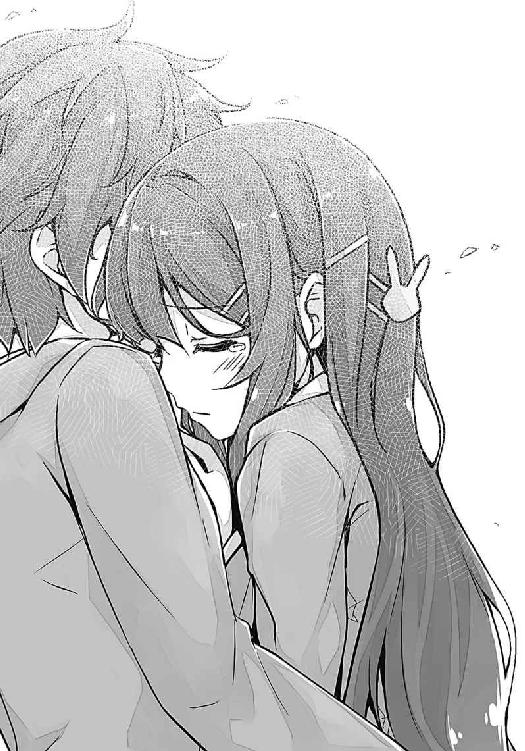
「許さない......」
くぐもった声。
「ごめん」
「絶対に許さない......」
鼻をすすりながら、麻衣は顔を肩にこすり付けてくる。
「じゃあ、許してくれるまで離さない」
「だったら、一生許さない」
未だに声は涙に濡れていた。
「えー」
「なによ、嫌なの？」
少し泣きやむように、麻衣がぐっと感情を吞み込む。
「美人の先輩にそんな風に言われて、嫌な男なんて......って、いたっ！ 麻衣さん、足踏んでる！」
「私にここまで言わせておいて、一般論で逃げようだなんていい度胸ね」
「あの、足」
「踏まれてうれしいんでしょ？」
「ごめん、ごめんなさい。反省しているので許してください」
踵でがっつり踏まれていたので本気で痛い。
「他に言うことは？」
「泣くほどこわかったんなら、睡眠導入剤なんて盛らなきゃよかったのに」
「この涙は咲太を困らせるための演技よ」
「じゃあ、徹夜続きの僕を気遣ってくれて、ありがとうございました」
「どういたしまして。でも、今、私が聞きたいのはそんな感謝の言葉じゃない」
麻衣の踵が再び咲太の足に乗る。
「ほんとは、わかってるくせに」
その足に、徐々に体重が載せられていく。
咲太は観念して、望まれた言葉を口に出した。
「好きです」
「ほんとに？」
「噓です。大好きです」
「......」
短い沈黙のあとで、麻衣が咲太から体を離す。涙はもう止まっていた。薄っすらと跡が残っているだけだ。
「ねえ、咲太」
「なに？」
「今の、一ヵ月後にもう一度言って」
「なんで？」
意図が摑めずに素直に聞き返した。
「ここで返事をすると、勢いと雰囲気で押し切られた感じがする」
「僕としてはこの場の勢いでキスくらいまでしたいんだけど」
「今、ドキドキしてるのも、こういう状況だからかもしれないし」
照れたようにそっぽを向いて、麻衣はそんなことを言う。赤くなった横顔は、たまらなくかわいらしかった。
「麻衣さん、意外と冷静だね」
吊り橋効果はごめんということのようだ。
「咲太もちゃんと考えなさいって言ってるのよ」
「なにを？」
もはや、麻衣への気持ちに対して、考えることなど何もないと思う。
「私、年上なのよ」
「むしろ、大歓迎」
「私は年下の男の子が相手じゃ躊躇うの」
「僕が頼りないから？」
「それは......そうでもないけど」
口をすぼめて小声で何か言っていた。
「年下と付き合うなんて、私がたぶらかしたみたいでいやらしいじゃない」
「それはその通りだから仕方ないと思うな」
「たぶらかしてはいない」
「いつも誘惑されてたと思うけどなあ」
ざっと思い出しただけでも、うれしいスキンシップはいくつもあった。頰をつねられたり、足を踏まれたりしたのを合わせたら、かなりの回数になるはずだ。
「と、とにかくわかった？」
「わかんない」
「駄々をこねないで」
「じゃあ、一ヵ月も待てないから毎日言ってもいい？」
少し驚きながらも、麻衣はまんざらでもなさそうに頰を緩めた。
「いいけど、ちゃんと一ヵ月続けなさいよ。できなかったら、気が変わったんだと見なすから」
そう言って、咲太の鼻を指で押すと、麻衣は悪戯っぽい笑みを浮かべる。独り占めしたい麻衣の笑顔。今だけは仕方がないので、咲太はみんなにも見せてあげることにした。
そんなふたりの様子を、峰ヶ原高校の全校生徒と全職員たちは、啞然としたり、呆然としたりしながら見守っている。どう反応すればいいのかわからず、周囲の反応を窺って、判断待ちをしている空気が伝わってきていた。
「みんな、ほんと空気を読むのが好きよね」
校舎を見ながら、麻衣が皮肉っぽく笑う。そのあとで、大きく息を吸い込むと、
「咲太が同級生を病院送りにしたっていう噂！ あれ、デタラメだから！」
と、突然大声で言ってのけた。
一瞬の静寂。
振り向いた麻衣は何やら得意げだ。
「みんなに言ってほしかったんでしょ？」
そう言えば、前に江ノ電の車内でそんな話をした。
少し遅れて、全校生徒の驚きがグラウンドまで押し寄せてくる。どよめきが学校を包み込んでいた。興味の目が咲太と麻衣に集中している。
「......なんか、思ってたのと反応が違うわね」
それはそうだろう。彼らは麻衣の告げた事実に驚きを示しているわけじゃない。
「麻衣さんが、僕を下の名前で呼び捨てにしたから、みんなびっくりしてるんだと思うな」
今、この瞬間ばかりは、空気を読むのをやめて、目の前のスキャンダルに食らいついているのだ。欲求に忠実になっているのだ。これぞ、思春期。
「麻衣さんのせいで、すげえ、注目されてる」
「なによ、たった千人の視線が気になるなんて、咲太は自意識過剰」
さすが、国民的知名度を誇った芸能人は言うことが違う。
「そりゃ、麻衣さんにとっては、三、四桁足りないかもしれないけどさ」
やがて、騒ぎを収拾するために、咲太の担任教師と教頭、それにジャージ姿の体育教師の三人がグラウンドに出てきた。
「職員室で説教とか憂鬱だな......」
「いいじゃない」
「どこが？」
「私も一緒に怒られてあげるから」
「ま、それなら悪くないか」
少なくともその間、麻衣と一緒にいられるのだ。
隣に麻衣がいることを実感しながら、咲太は校舎の方へと歩き出した。
麻衣と並んで......。
こうして、世界は桜島麻衣を取り戻したのだった。
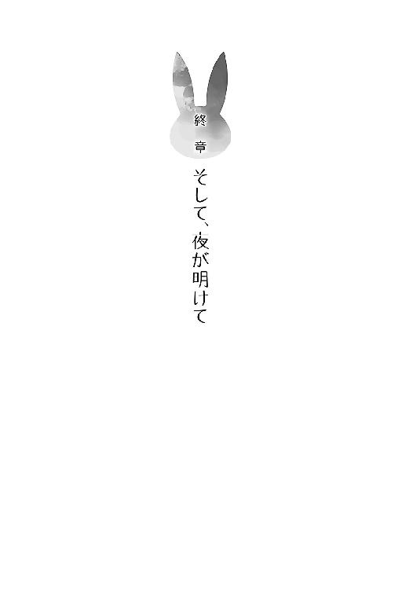
思春期症候群に巻き込まれた五月とは違い、六月になってからは、穏やかな日々を咲太は過ごしていた。
約束通り毎日麻衣に告白をするという平穏な日常。
もちろん、グラウンドの真ん中で愛を叫んだ影響はあったのだが......。
これまでの『病院送り』という看板に替わって、『イタイやつ』や『あれが噂の咲太』というレッテルを、咲太は全校生徒から貼られてしまったのだ。廊下を歩くだけで、忍び笑いが聞こえてくる始末。学校の居心地はますます悪くなった。
けれど、麻衣を取り戻すことができたのだから、「別にいいや」と咲太は開き直っていた。正直、そうでも思わないとやっていられない。
佑真からは、
「やっぱ、咲太の心臓って鉄で出来てんだな！」
と、腹を抱えて爆笑され、一緒にいた理央からは、
「私だったら、恥ずかしくて死んでる。さすが梓川、青春ブタ野郎だね」
と真顔で言われた。
「それ、どういう意味だよ」
「『病院送り』の噂が学校中に流れたとき、『空気と戦うなんてバカバカしい』とか言ってたの忘れた？」
「あ～、咲太言ってたな。それ、俺も聞いた」
確かに言った覚えはある。今だってその考えは変わっていない。
「自分のためには本気になれなかったくせに、美人の先輩のためになら、どんな恥もかけるなんてやつが、青春ブタ野郎じゃなくてなんなのよ」
そんなにはっきりと言われてしまってはぐうの音も出ない。
「......」
理央の言う通りで、自分を取り巻く空気を変えようと思ったことはないのに、麻衣のためにと思ったら、ついつい熱くなっていた。グラウンドの真ん中で愛を叫んでいた。
「一生、咲太をからかうネタができたな」
「僕はじいさんになっても、そのことを言われんのか」
それならそれで、そんな人生も悪くない......と思うことにしよう。
「なあ、双葉」
「なに？」
「結局、双葉の仮説が正しかったってことでいいのか？」
「さあね。思春期の不安定な精神や、強烈な思い込みが見せるまやかし......そういうのが、思春期症候群だって言うなら、科学的な検証なんて当てにならないよ」
後日、物理実験室を訪ねた咲太に、理央は身も蓋もなくそう答えただけだった。
「ま、そりゃそうなんだけどさ」
理央の考えは、いい線をいっていたのではないかと思う。
空気のように振る舞っていた麻衣がいて、空気のように麻衣を扱っていた全校生徒がいた。無意識で行われていたのであれば、それはもう本物の空気であることと差なんてない。『ような』でもなくて、事実上そうであれば、それは現実となんら変わらないのだ。
そして、そうした状況は、他の学校でも起こっているのだろうと咲太は感じた。人がたくさん集まれば、何かしらの空気が必ず生まれるのだから......。
麻衣の場合は、学校内に蔓延した暗黙の了解が、思春期症候群として外の世界にまで広がっただけの話。ただ、それだけの話。
理央の言うように、これ以上は考えても仕方のないことだ。
「ま、でも、私たちの世界なんて、告白ひとつでがらっと変わってしまうくらいに、単純なのかもね。梓川が証明したようにさ」
物理実験室を出て行こうとしたところで、理央は実験の準備をしながら、投げやりにそんなことを言っていた。
色々と話は聞いたけれど、不思議とそれが一番の真理に聞こえた。
「そうかもな」
少なくとも、咲太を取り巻く日常の世界は、告白ひとつで彩りを変えたのだ。
麻衣は麻衣で、取り戻した日常の中で、確実に前へと歩き出していた。
手始めに芸能界への復帰を宣言。
その記者会見の様子は、さすが『桜島麻衣』という大々的なものだった。復帰に当たっては、一応、母親と会って話をしたようだったが、帰ってくるなり咲太のバイト先に顔を出し、散々咲太に八つ当たりをしてきたので、綺麗に仲直りとはいかなかったようだ。
それでも、顔を合わせてケンカができれば、十分に健全な母娘に思えたし、ちゃんと母親が麻衣を思い出してくれていたことに、咲太はほっとしたりもした。
そうこうしながら、日々は流れていく。
あれから約一ヵ月になる六月二十七日。金曜日。
妹のかえでに起こされた咲太は、ＴＶから流れてくる朝のニュースを聞きながら、学校に行く支度を整えた。
「やってくれました。日本代表！」
どうやら、昨日、サッカーの日本代表は見事に勝利を収めたようだ。
「おはようございます。今日は六月二十七日。金曜日。早速、サッカーの話題からいきたいと思います！」
どの国と対戦したのかは知らないが、ニュースキャスターの興奮した声で、快挙を成し遂げたらしいということだけは伝わってくる。
映し出されたダイジェストは、前半終了間際のフリーキック。キーパーの逆をついたボールは、見事、相手のゴールに突き刺さっていた。
それを見届けてから、
「んじゃ、いってくるな」
と、かえでに言って、咲太はいつものように家を出た。
藤沢駅までは徒歩。そこから江ノ電に揺られること約十五分。七里ヶ浜駅で下車して同じ制服を来た生徒たちの流れの一部となって校門をくぐる。
面白いことなんて何も起こらない。でも、おかしなことも起こらない。そうした普通の日々に今は感謝したい気分だった。
その日の昼休み、咲太は三階の空き教室で、麻衣と昼食を取っていた。他の生徒は誰もいない。教室には咲太と麻衣のふたりだけ。
海の見える窓際の机を挟んでお弁当を広げる。
うれしいことに、今日のお昼は麻衣お手製のお弁当だ。
これは、昨日のちょっとしたやり取りの結果だったりする。
「麻衣さんって、料理できんの？」
「できるわよ。一人暮らしも長いし」
「えー、ほんとかな」
「なによ、信じないわけ？」
「だって、お昼いつもパンだし」
「そんなに言うなら、明日、お弁当作ってきてあげるわよ」
とか、そんなことがあったのだ。
開いたお弁当箱の中身は実に彩り豊かだった。鶏の竜田揚げ、卵焼き、ポテトサラダにはプチトマトが添えられ、ヒジキと豆の煮ものまで付いている。
麻衣の視線を感じながらひとつひとつ味わった。おいしい。少し薄味だけど、やさしい味付けで本当においしかった。
「さあ、昨日の無礼を私に詫びて、誠心誠意許しを請いなさい」
勝ち誇った麻衣の笑み。咲太の反応から、勝ちを確信したようだ。
「すいませんでした。僕が悪かったです。生意気でした。ごめんなさい」
ここは素直に頭を下げる。正直、こんなことはなんでもない。麻衣の手料理を味わえた時点で咲太としては完全勝利していたのだから。
「わかればいいのよ」
実力を示せた麻衣は満足げだ。まさにウィンウィンの関係。
「あの、麻衣さん」
顔を上げ、じっと麻衣を見つめた。
「なによ」
「好きです。付き合ってください」
「......」
麻衣はあっさりと視線を逸らすと、自分のお弁当の卵焼きを箸で口に運んだ。
「......」
もぐもぐと咀嚼している。
「......」
ごくんと飲み込むのを待っても返事はない。
「え？ 無視？」
「なんか、ときめかない」
退屈そうに麻衣がため息を落とす。
「一ヵ月もの間、同じこと言われてると何も感じなくなる」
「言わせておいて酷いな」
「『一ヵ月後にもう一度言って』とは言ったけど、咲太が毎日言いたいなんて言うからでしょ」
「それはそうだけど」
「あ、そうだ。七月から放送されるドラマに出演が決まったの」
「うわー、話題まで変えるか、普通」
果たして、ここまで雑な扱いをされた告白がこれまでにあっただろうか......。
麻衣は気にせずに鞄から黄色い表紙の台本を取り出している。六話と文字が見えた。
「深夜枠で、中盤の一話にだけ登場する役なんだけどね」
それは主演を張りまくってきた麻衣にとっては、物足りない小さな仕事なのかもしれない。けれど、仕事が決まったことを素直に喜んでいるのは、麻衣の表情を見ればわかるし、こんなに楽しそうに話しかけてくるのを、咲太ははじめて見た気がした。
だが、それと告白をスルーされた今の気分は関係ない。
「あ～あ、僕の人生なんなんだろ」
ぼんやりと海を見る。梅雨の時期に訪れた短い晴れ間。砂浜を歩くと気持ちよさそうだった。
「なに？ 私の復帰がうれしくないの？」
「とってもうれしいなー」
「キスシーンもあるんだから」
「......今なんて？」
聞き捨てならない単語が聞こえた気がする。
「キスシーンがあるの」
「断ってください」
「いいじゃない。はじめてってわけでもないし」
「......」
気のせいだろうか。またしても聞き捨てならない言葉を麻衣は発した気がする。
「ちょっと待った、麻衣さん」
「なによ」
「前に処女だって言ってたよね？」
「そういうの気にしないんでしょ」
「いやいや、キスはダメ」
「どういう基準なのかわかんないけど、相手が咲太でもダメなの？」
「......」
今度に関しては、何を言われたのか一瞬わからなかった。
「え？」
驚きが遅れて声になる。
「私のファーストキス、咲太にあげたのに。覚えてないなんて最低」
「え？ いや......は？」
考えてみたけど、やっぱりわからない。わからないけど、麻衣が噓を言っているようには思えない。唯一心当たりがあるのは、咲太が麻衣のことを忘れていた空白の時間。
「あ、まさか......」
「おとぎ話のようにはいかないわね。キスをすれば咲太が私のことを思い出してくれると思ったんだけどなぁ」
がっかりした表情をされると非常に辛い。
「必ず思い出すので、詳しい時間と場所を教えてください」
「いやよ」
「ヒントだけでも」
「絶対に教えない」
「そこをなんとか」
両手を合わせて麻衣を拝む。
「じゃあ、もう一回する？」
思いもよらない提案が麻衣から飛んできた。上目遣いで咲太を誘ってくる。これまで散々からかわれてきているので、これも罠かもしれないと思ったが、それで引き下がれるほど可愛げのある誘惑ではなかった。
「ぜひ」
「じゃあ、目、閉じて」
「ん？ 今？」
てっきり、ファーストキスのシチュエーションを再現するのかと思ったが違ったらしい。
「嫌なの？」
「いえ、いただきます」
目を閉じて、そのときを待つ。心臓がばくばく鳴っている。さすがに緊張してきた。
「いくわね」
少し恥ずかしそうな麻衣の声。頰に吐息がかかり、すぐ側に麻衣の体温を感じた。机を挟んで、麻衣が身を乗り出してきたのが肌に伝わってくる。
約一秒後、唇はふわっとした感触に包まれた。意外と麻衣の唇は冷たい。あと、出汁の味がする。先ほど食べた卵焼きと同じ味......というか、これは卵焼きの感触だ。
目を開けると、箸でつまんだ卵焼きを咲太の唇に押し当てた麻衣が、必死に笑いを堪えていた。
「本当にされると思ったんだ」
意地悪な笑み。
返事をせずに、咲太は卵焼きにぱくりと食いついた。箸ごと頰張る。
「麻衣さんと間接キスができて、とてもうれしいなぁ」
わざとらしく棒読みの芝居をする。麻衣が意識しやすいように......。
「......」
案の定、麻衣の目線が箸の先端を気にしている。まだ机の上のお弁当箱には半分近く中身が残っているので、それをどうするか悩んでいるようだった。
「ま、麻衣さんは大人だし、年下の僕と間接キスするくらいなんともないんだろうけど」
先回りして逃げ道は封じておく。
「そ、そうね」
わずかに躊躇したものの、一度強がってしまった手前、麻衣は咲太にあ～んをした箸でお弁当を口に運ぶ。そのまま無言を通して、麻衣はお弁当箱を空にした。その間、顔はほんのりと赤みが差していて、とても目の保養になった。
「言っておくけど、私じゃないから」
麻衣がお弁当箱をナプキンで包んでいく。
「ん？」
「キスシーンがあるのは、主演の子」
安堵と共に、咲太の中で不満が顔をもたげた。
「麻衣さん、性格悪すぎ」
「でも、咲太はそんな私のことが大好きなんでしょ？」
「さすがにこのままだと愛が冷めそう」
「な、なんでよ！」
狼狽した麻衣の声は、いつもより甲高い。
「だって、麻衣さん全然その気なさそうだし......ときめかないとか言われると、絶望的な気分になる」
「......ダメとは言ってない」
麻衣は拗ねたように唇を尖らせて、ドラマの台本を開いていた。
「じゃあ、いいの？」
「それは、その......」
赤くなった顔を、麻衣が台本で隠している。
「いいの？」
さらに確認の言葉をかけると、台本の陰から目元だけを覗かせていた。
「......」
恥ずかしそうに、ちらりと咲太を見てくる。それから、消えそうな声で、
「......うん、いいよ」
と、麻衣は頷いてくれたのだった。
その日、そのあとのことを咲太はよく覚えていない。麻衣との交際スタートに、すっかり気分は舞い上がり、浮かれに浮かれまくっていたのだ。
翌日の朝になっても、幸せ気分が収まる気配はなかった。
学校に行く支度をしながら、鼻歌交じりにＴＶをつける。流れてきたニュース番組に、何気なく目を向けると、
「やってくれました。日本代表！」
という、興奮した様子のメインキャスターの声が聞こえてきた。
「......」
不思議に思って画面を注視する。聞き覚えのある言い回しに思えたのだ。
「おはようございます。今日は六月二十七日。金曜日。早速、サッカーの話題からいきたいと思います！」
今、男性キャスターはなんと言っただろうか。
六月二十七日。
確かにそう言った。
流れ出すサッカーの試合のダイジェスト。それに咲太は見覚えがあった。前半終了間際、日本代表の選手が放ったフリーキックが、ゴールに吸い込まれていく。
慌てて部屋に戻って、目覚ましに使っているデジタル時計を見る。日付も表示されているのだ。
「......なんだこれ」
いつも使っている目覚まし時計も、六月二十七日を示していた。
──この日、梓川咲太が目覚めたのは、昨日の朝だった
あとがき
幸せの絶頂の最中に巻き起こったおかしな事態。
これは、新たな思春期症候群なのか。
はたまた、咲太が夢を見ているだけなのか。見ていただけなのか。
それとも......。
──果たして、咲太の運命やいかに
次回、シリーズ第二巻『青春ブタ野郎は○×△□の夢を見ない』を、楽しみにお待ちいただけましたら幸いです。
○×△□の部分は現在未定です。いじらずに『２』で落ち着くかもしれません。
夏が終わる前に、お届けできればと思っていますが、果たして発売日やいかに。
というわけで、鴨志田一です。
はじめましての方は、はじめまして。
お久しぶりですの方は、ご無沙汰しております。
先月もお会いしている方は、引き続きよろしくお願いいたします。
意外と足を運ばないのが、身近な観光エリア。
今回、物語の舞台として選んだのは、そんな感覚が当てはまる地域です。人生の殆どを神奈川県で過ごしているため、いつでも行けると思うと、逆に赴く切っ掛けがなかったりするものなのです。
電撃文庫編集部の方が、家から遠いくらいですからね。
そんな海が見える街を舞台とした物語は、ここがスタート地点です。この先も、お付き合いいただけましたら、大変うれしく思います。
イラストの溝口ケージさん、担当編集の荒木さん、前作『さくら荘のペットな彼女』から引き続きですが、本作もよろしくお願いいたします。
それでは、二巻でもお会いできることを信じて。
鴨志田一
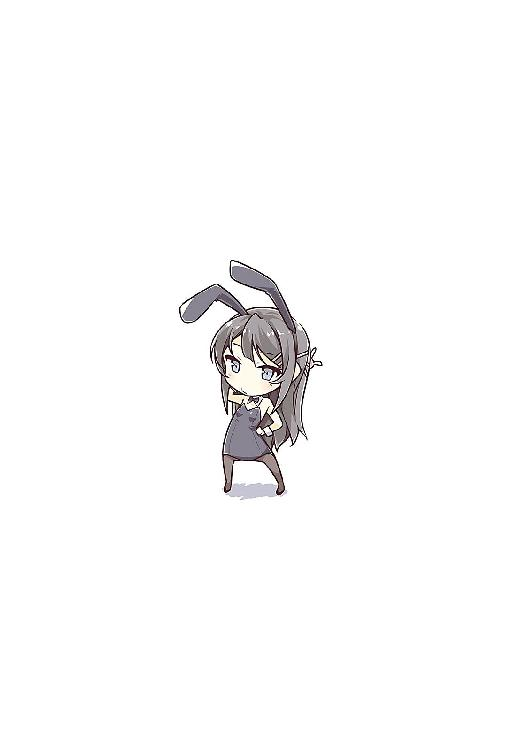
鴨志田一
１９７８年４月11日誕生。神奈川県出身の左利き。
海は広くて、大きいね。というわけで海です。
本作の舞台となっている七里ヶ浜の海です。
主人公の通う学校から見えている海でもあります。
江ノ電に乗って、何度か足を運びました。
今後も通います。いいですね、江ノ電。癒されます。
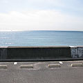
溝口ケージ
久しぶりにがっつりとキャラデザ作業やりました。
新作です！ 嬉しい！ 楽しい！
ってことで今回から（今回も？）よろしくお願いしナス。
本書に対するご意見、ご感想をお寄せください。
電撃文庫公式ホームページ 読者アンケートフォーム
http://dengekibunko.dengeki.com/
※メニューの「読者アンケート」よりお進みください。
ファンレターあて先
〒102-8584 東京都千代田区富士見1-8-19
アスキー・メディアワークス電撃文庫編集部
「鴨志田 一先生」係
「溝口ケージ先生」係
本書は書き下ろしです。
 電撃文庫
電撃文庫
青春ブタ野郎はバニーガール先輩の夢を見ない
鴨志田一
発 行 2014年4月24日
発行者 塚田正晃
発行所 株式会社KADOKAWA
〒102-8177 東京都千代田区富士見2-13-3
03-3238-8745（営業）
http://www.kadokawa.co.jp/
プロデュース アスキー・メディアワークス
〒102-8584 東京都千代田区富士見1-8-19
03-5216-8399（編集）
http://dengekibunko.dengeki.com/
本書（電子版）に掲載されているコンテンツ（ソフトウェア／プログラム／データ／情報を含む）の著作権およびその他の権利は、すべて株式会社KADOKAWAおよび正当な権利を有する第三者に帰属しています。
法律の定めがある場合または権利者の明示的な承諾がある場合を除き、これらのコンテンツを複製・転載、改変・編集、翻案・翻訳、放送・出版、公衆送信（送信可能化を含む）・再配信、販売・頒布、貸与等に使用することはできません。
(C)2014 HAJIME KAMOSHIDA
※2014年4月10日発行の電撃文庫『青春ブタ野郎はバニーガール先輩の夢を見ない』初版に基づき制作